| ファーレンハイト９９９９ | |
| 朝倉勲 | |
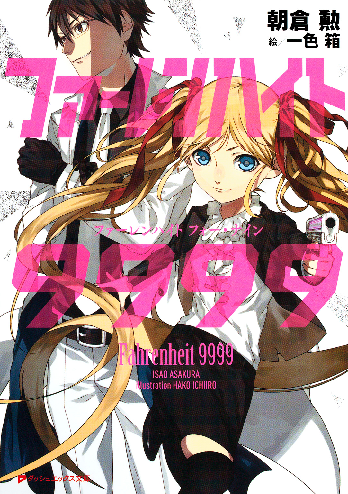
この本は縦書きでレイアウトされています。
また、ご覧になる機種により、表示の差が認められることがあります。
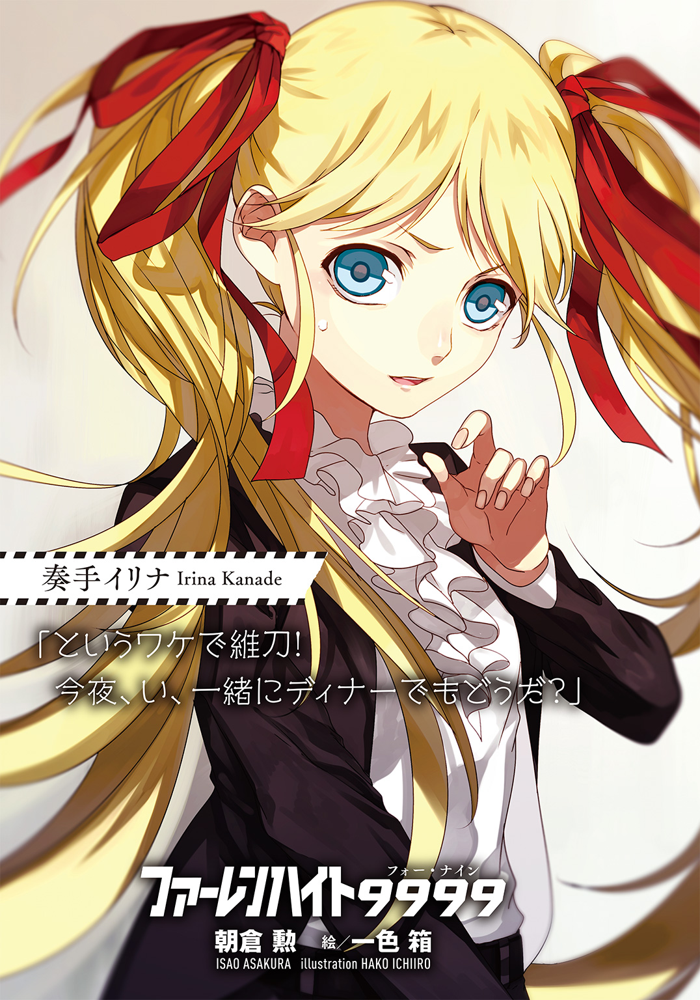
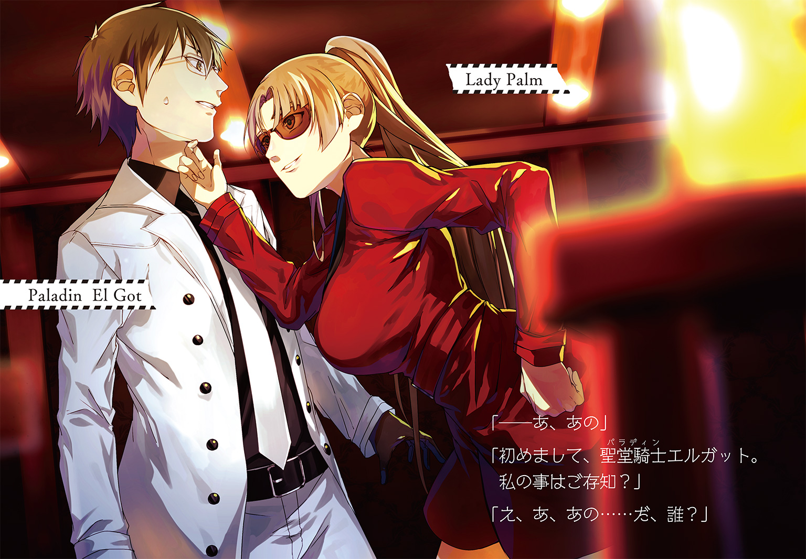
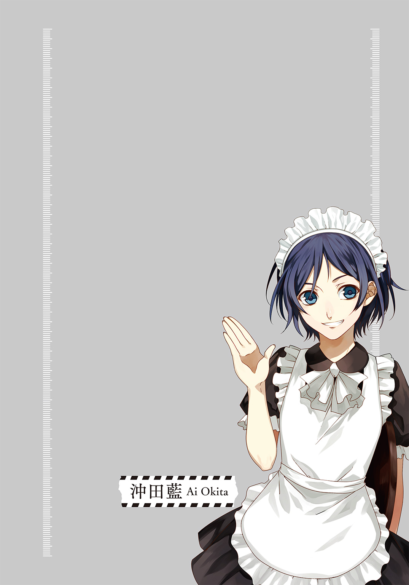
CONTENTS
～Otaku Is Dead～
～The Golden Age Of Control～
～Dystopia Teens～
～Get Your Guns～
～Antiracist Superstar～
～The Beautiful People～
～The Nobody～
 ダッシュエックス文庫DIGITAL
ダッシュエックス文庫DIGITAL
ファーレンハイト９９９９
朝倉 勲
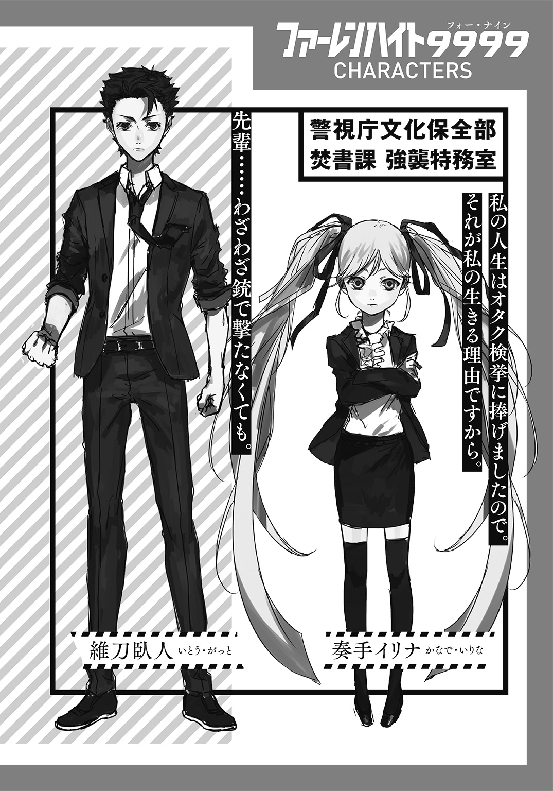
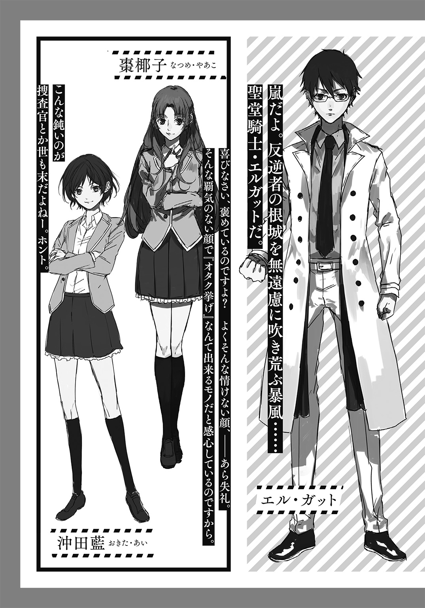
序．オタク・イズ・デッド
～Otaku Is Dead～
「止まれ！ 『焚書課』だ！」
制止を呼びかける、俺の叫び。
逃げる容疑者はそれに対し「逃走速度を増す」という行動で答えを返した。
あー......マズった。もっと言葉を選ぶべきだったか。「失礼いたします！ 役所の方から参りました！」とか言えば良かった。消火器売りつけに来た詐欺師みたいに。
ここは都内の住宅地。「閑静な」という表現が似つかわしい、のどかな夕方の路地。
一歩踏み込むたびに、パサリ、とネクタイとジャケットの裾がなびく。全身を覆うのは漆黒のスーツ。俺はアップの髪をかきあげつつ走り続ける。
その俺の前方。
「......ハァ！ ハ、ハ、ハ、ハッ、はぁ、............ッ！」
息も絶え絶え、両手で段ボールを抱きかかえて走る男。靴は履いておらず裸足だ。まさに着の身着のままで出てきたといった様相。背はひょろっと高いが筋肉が皆無で、このようなハードワークを想定した身体作りをしているとは思えなかった。
対象――甲村悟郎。俺たちが確保すべき存在だ。
彼、甲村は次なる逃走手段を得て、俺との距離を更に広げようと試みている。自転車だ。恐らく自分のものだろう。彼は前部の籠に段ボールを突っ込み、勢いよくペダルをこぎ始めた。
「ったく。逃げられると思っているのか？」
嘆息一つ。俺は傍らに落ちていた木の枝を拾った。
ビュンッ！ と空を切る音。
俺のしたことは単純、木の枝を投げただけ。だがそれは自転車の前輪に吸い込まれ、その回転を強制停止させた。
「ッどおわああああああぁぁあぁぁあぁァぁあッ！」
結果、甲村は絶叫を上げ宙を舞った。失敗したジャックナイフの如く大きく後輪を浮かせ、虚空に投げ出された甲村は地面に背中から叩き付けられる。......痛そーだな。
目を凝らすと、転倒の際に段ボールの中身がぶちまけられた事が分かった。それは様々な色彩を湛えた三十センチ大の物体で、所々に肌色が見え隠れしている。
――美少女フィギュア。
数は二十を超えている。それが天下の公道上に所狭しと展開されてしまっているのだ。
「あ、あ、あ、あ、あああああぁぁああぁあぁ......っ！」
男は俺の接近にすら構わず、ただアスファルト上に広がるソレを拾い集めていた。騒ぎを聞きつけたらしい近所の住人は、遠くから汚物を見るような眼で彼を睨む。
かける言葉も見つからない。俺は黙って彼の手を捻りあげた。
「ッ痛たたたたたッ！」
「甲村悟郎、作家名『稲鳩淳』に相違ないな。お前を拘束する」
「は、はなせ......ッ！ ふぃ、フィギュアが！」
「主な容疑は『小型立像所持法違反』。現行犯だ」
自分で口にしていて嫌になってくる。何だよこのフザけた罪状。
フィギュア持っているだけで逮捕なんて――。
「ま、待てっ！ ふぃ、フィギュアが回収できてない！ このままにできないんだ！」
「後にしろ。さぁ立て」
「クソがッ！ 政府の犬！ 俺たちの税金で食ってるクセにッ！ ......くっ！」
確かにな。言い逃れできないよ、その文句。
うなだれる彼を見て、俺の心には憐憫の念が芽生え始めていた。毎回、オタクを検挙するたびにこの感情を経験する。
逃がしてしまおうか――。そんな提案が脳裏を過ぎった。
仮に俺がここで彼の拘束を解いたとしても「ミスりました」と言い訳すれば事は収まるだろう。今ならまだ先輩に怒られる程度で済む。大体が「フィギュアを持っていただけで逮捕」って法律がおかしいんだ。だからいっそ逃がしてしまえば――、
そう思っていたのに。
「維刀、よくやった」
「っ！」
クソ。来ちまったか。
せっかくこいつを逃がしてやれそうだったのに。もう手遅れだ。
「よくやったな」と俺を労う言葉を吐いたのは甲村でも、もちろん俺でもない。俺たちの背後、新たな登場人物としてこの場に現れた金髪の少女が放ったものだ。
ちょこんと路上に立つ先輩・奏手イリナが。
「せ、先輩」
「心配でこちらに来てみたが杞憂だったな。くどいがよくやった」
「......ありがとうございます」
「やれやれ、だな。逃走していちいち私たちに面倒を掛けさせるとは！」
彼女は大きな息を一つ吐く。黒いジャケット、黒いタイトスカート、黒いニーソックス、黒い靴――。直射日光独占状態であるはずの黒服なのに、いやに涼しげに見える。それは彼女の可憐かつ健康的な雰囲気が醸し出している、オーラのようなものなのだろう。地面につきそうなほど長い髪はツインテールに纏められ、金色に輝いている。彼女はフランス人とのハーフなのだ。そしてその大きな瞳は『敵対する者は許さない』という強い意志が溢れていた。美少女、そう言って相違ない。
そして身長は、――『百三十五センチ』。俺の腰までしかない。
奏手先輩は紛れもない女子中学生であった。
つまり高校生である俺は、中学生の彼女に敬語で接することを余儀なくされているのだ。
......何も言うな。『中学生が先輩』、この状況が情けないと痛感しているのは他でもない、この俺なんだからな。
「一人で容疑者を拘束、か。ようやくマシに仕事できるようになったな。『戦闘力ゼロ』の汚名返上も近いぞ、後輩の成長に私も嬉しい限りだ。......なのに」
その表情が、一瞬にして苦虫を嚙み潰したようなものに変貌を遂げた。
「ここ一ヶ月間で最悪の気分なんだ。何だこのキモチワルイ人形どもは！」
そう言って下を見たのは一瞬だけ。彼女は真正面に眼を向け、少しも速度を弛めずそのまま俺たちの方へと歩いてくる。
バキッ、バキリ......。バキャッ。
結果。――道路に散らばったフィギュアは次々と彼女に踏まれ、破損してゆくという末路を辿った。
......見ていられない。俺は黙って目を閉じる。
「ああああああああああ――――――っっ！ な、な、な、な、......何をおおおッ！」
「何が問題だ？ 法律で禁じられているモノを破壊して何が悪い。これは麻薬や大麻草と同じ、言わば『文化の劇物』！ 存在自体が許されない！」
慈悲も躊躇もなく。漆黒の女子中学生は『破壊の進行』を加速させる。
「や、やめろ！ やめてくれェっ！ やめろって言ってんだよコノ糞餓鬼がああぁああ！ やめてぇえエエエエエエエえェェええぇぇぇエぇエぇえぇ！」
「止めない。泣き叫び後悔しろ。こんな下らないモノに金銭をつぎ込んだ己の愚かさを！」
「殺す......ぶ、ぶ、ぶ、ブッ殺す！ ブッ殺してやるぞ！ 糞餓鬼がああああッ！」
「フン、ようやく本性を露わにしたな、犯罪者。――脅迫も罪状に追加だ！」
「っ、あ......ッ！」
スッ、と流れるように。右手を大きく振りながら先輩は甲村の懐に飛び込んだ。
その右手に握られているのは、彼女自身の頭髪の束。頭部から流れるツインテールの一房をロープのように持っているのだ。先輩は疾駆したまま勢いを乗せ、ツインテールを甲村の首にかけて――背負い投げ。
甲村はコンクリートの地面に後頭部から叩き付けられた。
「あ、あが、ガ、......ガ」
甲村の絞り出すうめき声が不快に響く。
「自分のツインテールをロープ代わりにしての投げ技」――。何度見てもブッ飛んだ拘束方法だ。先輩が言うには「相手の警戒、その間隙を突くのに最適な捕縛術」との事だが、確かに理にかなってはいる。夢にも思わないだろう、頭髪を武器にするなど――。
「......『殺す』と来たか。二度とその言葉が吐けないよう、反省しろ！」
甲村を倒し、返す刀。先輩は懐から鈍く光る金属を引き抜いた。途端に、銃身の表面に刻まれたラインが紫色に輝く。
拳銃。現代日本の社会ではまず目にする機会のないはずの武力。
その圧倒的生殺与奪の象徴を、先輩は何の躊躇いもなく甲村の頭部に向けた。
「『さよならだ』」
そしてトリガーを引き、――一発。
「パァン」と銃声を響かせ、彼の頭部へ銃弾は発射された。普通であれば血しぶきの一つでも飛ぶのだろうが、俺たちが所持しているのはゴム弾。殺傷能力はない。
命中した特殊ゴム弾頭は甲村の意識を刈り取ることに成功。彼はうつぶせに倒れ込み、そのまま先輩に後ろ手で拘束された。キャキン、と手錠をロックする乾いた音が響く。
「な、なにも発砲まで......」
「仕方あるまい。明確な敵対の意志をみせて私に反抗したのだから。――さて。ついでだ。壊してしまおうか！」
彼女は手元の焚書課制式拳銃・『ファーレンハイト９９９９』を地面へと向け発砲、嬉々としてフィギュアの破壊を再開した。違法コンテンツの証拠物件は「運搬が困難な場合は証拠能力が認められるレベルまで破壊して構わない」という決まりがあるのだ。
バァン、バァン、――バァンッ。そしてリロード。
止まぬ銃声。それがひとつ響く度、地面に転がったフィギュアが造形を歪なモノとしてゆく。嗚呼、止めてくれ。これ以上見たくない。
まるで中世魔女狩りの異端審問官。周囲の迷惑を顧みずに発砲しているため、課に苦情が来ないか不安だ。いや、むしろ苦情が寄せられて、この行動が問題になれば少しは......。
と思ったが、現在の社会情勢からそれは無理だという結論に達した。
だってホラ。その証拠に周りを見てみろ。
「うおおおお！ いいぞお嬢ちゃん！ もっとやったれや！ ブッ潰せえっ！」
「かっこいーッ！ 全部全部！ 全部こわしちゃって！ そんな気持ち悪いの！」
「ほんっとオタクってロクな真似しないわよねぇ......死ねばいいのに」
先輩がフィギュアを破壊し始めた途端、騒ぎを聞きつけてやって来た連中が、次々と歓声をあげだしたんだから。まるでサッカーの応援席、フーリガン特有の狂信的な熱気すら感じる。
やはり実感してしまう。オタクは嫌われ者なのだ、と。
「先輩......わざわざ銃で撃たなくても」
「分かっていないな維刀！ だってこっちの方が楽しいじゃないか。『壊している』って直に感じられて！ ――大体がだ」
発砲の衝撃に金のツインテールを揺らせつつ、女子中学生は嘆息を発した。
「お前は甘すぎる！ 先刻の甲村に対してもそうだ。有無を言わせず拘束し発砲、意識を奪えば済む話だったろうに。私たち焚書課にはそれが認められているんだからな。奴らに情けを掛けるな、図に乗るぞ」
「......どうして」
「ん？」
「どうしてオタクはここまで迫害されなきゃいけないんですか？」
「馬鹿馬鹿しい......そんな問いにいちいち答えなくてはならないのか、私は」
パァン、――カチッカチッ、カチカチカチカチ。
銃弾が切れたのか、無意味にトリガーを引き続ける先輩。
やがてその指を止め、くるり、と。
嘲笑うような、はにかむような。何とも言えぬ色を湛えた瞳でこちらを見据えてきた。
「オタクは犯罪者だからだ！」
「っ......」
「そしてヤツらが嫌われる最大の理由――それは『場の空気が読めない』事さ。もはや救いようのないレベルでな。一般人の居る場所ですら遠慮なくアニメ、マンガ、ゲームの話題。話すべき場かどうかすら判断できない。......馬鹿じゃないのか。そして止めろと言っても止めない。止められないんだ連中は。これはもうアレだよ、アレ」
グイ、と先輩は俺に顔を近づける。
「――害虫だ。分かるか維刀。ヤツラは害虫なんだよ」
「そんな」
「大体が。生身の異性に興味を示さない時点で、おかしいだろう？ それを葬る農薬が私たち『焚書課』。正義はここに在る。私達の心の中に、な」
真っ平らな胸を指さす先輩は、誇らしげにそう宣言する。
『焚書課』。オタク文化を取り締まる機関。――俺たちの属する組織。
「こんなモノ触るのもイヤだ。後はお前が片付けておいてくれるか、維刀」
「......Ｉ Ｇｏｔ Ｉｔ」
先輩は俺に背を向け、大股でこの場を後にした。
俺は道にひとり取り残される。周囲の人垣も散り始めた。足下をじっと見つめると、視線の先には倒れた甲村。そして破壊され尽くしたフィギュアの絨毯。三十万近くするであろう有名原型師の作品も、上半身と下半身が泣き別れしてスタチューとしての意味を成していなかった。
「どう、......して」
同じ言葉を繰り返す俺。涙が止まらなかった、この社会に対して。
どうしてこんな社会になった。
オタクが徹底的に差別される、こんなディストピアに。
心中呟いたところで返答をくれる人間は、誰一人として居るはずもない――。
三年前。
サブカルチャーは最大の隆盛を極めんとしていた。
ライトノベルの月間発行数は五百冊を超え、書店ベストセラーにはマンガ。テレビではバラエティなどの視聴率は軒並み低下しているのに、アニメだけは安定した視聴率を維持。ＤＶＤ・ＢＤの売り上げ上位はアニメが独占するという有様だった。
バブル――景気はまるで回復したように見えずとも、サブカル界隈は山の賑わいだった。
だが、そのせいで政府が新たな財源として「オタク文化」に目をつけてしまったと気付ける人間はいなかった。
そんな中、突如発生した事件がすべてを変える。
『金曜の模倣者』事件だ。
三年前の毎週金曜日、女子児童だけを狙った連続殺人が発生した。殺害された被害者は十三名にも及び、社会はその猟奇性に戦慄する。犯人の男は十七歳の高校生――。逮捕されてもヘラヘラと薄笑いを浮かべ、取調べでも何ら要領を得ない供述を繰り返していた。
異常なのはその殺害方法だ。彼はすべてマンガ・アニメ・ゲームのキャラクターの死を模倣した方法で殺害していた。磔にされてナイフを突き立てられる、四肢を切断されて窒息させられる、首を飛ばされる......。吐き気を催すそれらの方法すべてが、各種サブカルにて描かれた残酷描写、その再現だった。
社会はオタク文化を強く非難した。やがて報道の加熱も手伝って「創作物の悪影響」という推察は不可避の状況が創り出されてしまう。
世間はオタクに対する嫌悪感、不信感を強くしてゆき、抗議活動は激化した。
故に「マンガ・ゲーム・アニメなどのメディア規制」が叫ばれ始めたのはごく自然の流れだったと言える。規制法案は国会審議にて満場一致で可決され、数年前であれば一笑に付されたであろう法が現実のものとなった。
規制派は勢いづいた。様々な新法をゴリ押ししたのだ。
一つ。『改正児童ポルノ禁止法』。
児童と判断されるキャラクターの性描写は実写非実写問わず禁止、違反者は逮捕される法律。
一つ。『小型立像所持法』。
個人の所有するフィギュア数を制限、十体以上の所持は追徴税を払う必要がある法律。
一つ。『不快メディア迷惑禁止法』。
嫌がる相手の前でアニメやマンガの話題を出した途端、罰金刑が科せられる法律。
口にするのも恥ずかしくなるような法案の数々......。どれもこれも「青少年を犯罪の道へ駆り立てるきっかけになる為」との大義名分を掲げてはいたが、その犯罪の道というのが他ならぬアニメやゲームであるというのは異常だった。
オタク＝犯罪者。この方程式は多くの国民の脳に刻み込まれた。
かといってアニメやマンガが消えた訳ではない。
政府が取った手段は「限りなく搾取に近い生殺し」――アニメや漫画、それらに税を課したのだ。『アニメ税』『ゲーム税』『漫画税』『ライトノベル税』などという馬鹿馬鹿しい税金を盛り込まれ、ゲームの値段が一本二万円を超える事も珍しくなくなっていた。購入に届け出が必要な場合も存在する。ブレイディ法――アメリカの銃所持に関する法律など比較にならない程の扱いになっている。タバコや酒以上に反対は無視され、なおも強引に税は引き上げられている。所詮オタクは少数派であるという現実がここには在った。
そして現在――アニメやマンガを買うには一定以上の財力が求められ、結果としてポップ・カルチャーは衰退の一途を辿っていた。元よりそれが目的だったのだ、政府としては目論み通りの社会となりつつある。
現実に未練のある者はサブカルからは手を引き、空想に生きる者たちは石を投げられつつも、迫害の袋小路を細々と生きていた。
――現代。オタクは「合法的な差別対象」となっている。
そして。そんなオタクを取り締まるべく組織されたのが『焚書課』だ。
正式名称、警視庁文化保全部焚書課強襲特務室。
文化保全活動の名を借りたメディア抑圧は、当然オタクの反発が強く、抵抗が想定された。その為に彼らを武力で鎮圧・拘束する事を旨として焚書課は設立されたのだ。
通称・焚書課――。有り体にいえば、オタクを迫害する政府の犬小屋。
それが俺の属する組織だ。
甲村の逮捕から一時間後。
俺と先輩、そしてもう一人を加えた焚書課メンバーは呼び出しを受け、この部屋――知事執務室に出頭していた。
無機質でありつつも、室内には高級そうな彫刻や絵画が多く飾られている。気を紛らわせるためにそれらをボーッと眺めていると、部屋の主は必要以上に大きな声で「よくきてくれた！」と俺たちを労った。
「いやぁー、素晴らしいなっ！ 本当に君たちは私の期待に応えてくれる！」
そういって彼は、嬉しそうに先輩の肩をバシ、バシと何度も叩く。
俺たちの何倍もの年輪を重ね続けたその肉体は、老齢でありながらもスーツの上から分かるほど鍛えられており、白髪をたくわえる高齢者とは到底思えない。帽子をかぶったら老ジョセフに少し似ているような気もする。
東京都知事・西園寺蔵人。
さっきから喧しい声量で俺たちを過剰に賞賛するこの人に、正直俺はウンザリし始めていた。ずっと立ったままだからいい加減疲れてくる。
が、俺の隣。先輩は直立できびきびと敬礼してみせた。
「み、身に余る光栄です！」
「何せ君たちは『現代における正義の象徴』ッ！ こうも大手を振って、躊躇いもなくヤツらを検挙してくれると私も鼻が高いんだよ。予算も多く引っ張ってこられるしね」
「私だけではありません。全員で挙げた成果です！」
「まぁたそんな形式ばって。こういう時ってのはね、謙遜しない方がいいんだ奏手くん。ねぇ一ノ瀬室長？」
「ええ。まったくですわ」
話を振られたショートボブの女性が同意した。
「あなたは最高の期待を寄せられてこの課に来たんだから。もっと堂々としないとね」
「は、はいっ室長！」
我らが強襲特務室長・一ノ瀬玲香。
彼女の眼鏡の奥にある優しい瞳が、奏手先輩の微笑を誘った。
俺はつい玲香さんの身なりを眺めてしまう。細いフレームの眼鏡、絹のような黒髪、慈しみの眼差しがこぼれる瞳。スレンダーな躰、それでいて豊かな胸はまるでモデルのようだ。姉にするなら彼女のような人が理想だな、などと気持ち悪い事を時折考えたりもする。
玲香さんは弱冠二十七歳でありながら、いわゆるキャリア組として焚書課に配属された。
まぁアレだ。エリートってヤツだよ。そのエリート様は都知事を前にしても緊張した様子はない。さすがは度胸が据わっている。
対する先輩はカチコチ、まるでアストロンでもかけられたのアンタといった所。やっぱり何だかんだ言っても中学生だよな。
「さらなる検挙を期待しているぞ、奏手くん。頼んだよ」
「はい！ ご期待に添えるよう邁進いたします！」
「......で、こちらが例の彼か」
先輩への労いが終わったのか、くるり、と。都知事は俺の方を向いた。
「確か維刀くん、だったかな？ 違った？」
「あ、はい。維刀臥人と申します」
「聞いてるよ。年下の先輩でいろいろ苦労してるだろ？ その歳で立派だなぁ、まったく」
「光栄です」
「......まぁ、その胸元の認識票を見る限り、戦闘には期待出来なさそうだけどなぁ！」
そういって高らかに笑う都知事。
俺たち焚書課捜査官の胸元には、個人の能力を記した認識票が掲げられている。
先輩は『戦闘：３』『頭脳：５』などといった感じ。都知事が「戦闘に期待できない」と言ったのは、俺の認識票に『戦闘：０』と書かれているからだ。
まぁこの人が俺のことをよく知らないのも無理はない。メンバー集めは全部室長任せだったらしいからな。
「まー君も、もっと精進をね！ 奏手くんを見習って更なる検挙を頼んだぞ！」
「はい」
黒い感情を心に秘めつつも努めて冷静に俺は対応した。
「しかし正解だったな。君たちのような若人を警察組織に編入させた事が、こうも効果的に作用するとは。若き力は無限大だ！」
俺たちの所属する焚書課は、都知事の発案で組織された。あまりにも越権行為で領域侵犯だが、この人は警察庁ＯＢであるため何かと特例扱いなのだそうだ。
普通に考えれば「高校生が警察で働く」なんてのも非常識の極みだろう。労働基準法なんかブッチギリで無視している。だが「若い文化は若者が取り締まるべき」というのがこの人の主張であった。だからこの課を設立するために心血を注ぎ、実弾やネマワシを駆使して常識的意見を黙らせたという話すら聞く。
お蔭で俺はこの課に編入させられた。確かに俺たちの年代でなければオタクの行動範囲・行動原理は理解できないことが多いな、と最近は感じる。この人の考えもあながち間違っていないのかもしれない。
加えて、焚書課の人間は規格外の能力を所持している連中が多い。それを見込まれて『若年者が警察で働く』というムチャを押し通せたという側面もあった。
先輩は『瞬間記憶』。一度見たものを瞬時に記憶し、絶対に忘れないという特殊技能だ。
これでいくつの証拠物件を押収したことか。さすがは二年前、設立当初からこの組織にいるだけはある。彼女が当時小学生だった事を考えればブッ飛びすぎだ。
俺は......、
まぁどうでもいいや。ちょうどこの下らない会合も終わりを告げたようだし。
「一同、敬礼！ 焚書課の名の下に、文化の保全を！」
玲香さんが号令をかけ、敬礼。俺たち二人もそれにならう。
......というか。『焚書課』というネーミングが何か気にくわない。『公安九課』とか『密葬課』みたいなセクション名は思いつかなかったのかよ？
ンなアホらしいことを考えつつ、最後に全員で一礼。俺たちは知事執務室を後にした。
このフロアの階数を示す『７』のパネルを通り過ぎ、エレベーターまでの遠い道のりを三人で歩く。
「維刀くんもイリナちゃんも、今日はお疲れさまでしたー」
歩きながら玲香さんが労いの言葉を掛けてくれた。
「ふたりとも今日はもう帰ってもいいわよー。逮捕した男の取調べは二日後だし、残務は私が全部やっておくから」
「そうですか？ 申し訳ありません室長。本来ならば私と維刀がやるべきなのに」
「気にしないでー。あなたたちだって学校に通っているんだから、こっちのお仕事ばかりっていうワケにもいかないでしょう？」
「いえ。私の人生はオタク検挙に捧げましたので」
「相変わらず凄い覚悟ねぇ」
「それが私の生きる理由ですから」
先輩は平らな胸をそらし、そう宣言する。表情からはこの焚書課に所属できる誇らしさが滲み出ていた。
「私たちは『文化を保全する』という崇高な目的の下、この焚書課で検挙を行っています。国民を害悪から守るためにこの若さで働けるなんて、都知事には感謝してもしきれません。――だよな、維刀？」
いきなり話をこっちに振るのか。俺は返事をしなかった。だって実際そう思ってないし。
そのまま聞こえないフリを通していると、先輩は心底残念そうに肩を落とした。
「ハァ......。維刀、お前はまだ我々の活動趣旨を完全に理解できていないんだな」
「すみません」
「......ま、まぁ何だ。そ、その辺りも含めて話をしたいな、うん！」
「はぁ」
「というワケで維刀！ 今夜、い、一緒にディナーでもどうだ？ ......わ、わ、わ、わ、私がおごるぞ？」
「いえ結構です。今日は家に帰ってすべき事があるので」
「えっ？ そ......そうか？」
さすがに中学生に奢ってもらうのは勘弁だ、プライドが許さん。
彼女は残念そうに一言「先に帰る」と言い残し、肩を落としてこの場から立ち去った。そしてエレベーターには乗らず、隣の非常階段を駆けるように降りていった。
「いいの？ 維刀くん」
エレベーターを待っている間。玲香さんが笑いながら俺に問いかける。
「いい、って。何がですか？」
「イリナちゃんのお誘いを断っても。あの娘、あれでいて年上の部下であるアナタを気遣って、ごはんに誘ったと思うんだけど？」
「ありがたい事ですよね。でも今日は本当に用事があるんです」
「そう......維刀くん」
「何ですか」
「アナタ、女の子にモテないでしょ」
随分な質問が飛んできた。ガツンと後ろからブン殴られたような感じ。
何故そういう話になるのか。いや確かにモテないけど。むしろ女子にイジメられてるけど。
まさかこの人、先輩が俺に惚れているとでも言いたいのだろうか。俺はミニマム中学生よりは、むしろアナタのような『ＭのようでＳっぽい』お姉様がタイプなんですが。
それに。俺と先輩は火と油。けっして交わり合う事など有り得ない。様々な理由で。
それら複雑な感情を口に出さず、黙っていると。――チン、と。エレベーターが到着を告げるチャイムを鳴らしていた。乗り込んで『１階』のボタンを連打する。今の俺には「はやく家に帰りたい」という思いしか存在していないのだ。
はやる気持ちを抑えられない。
自宅には俺の恋人たちが待っているのだから――。
で、――今は自宅。
時刻は二十時を回った。
一人暮らしである俺は夕食を済ませ、この殺風景な居間でくつろいでいた。テレビに映るのはニュース番組。「もっと規制を！」と大勢の市民が声高に叫んでいる。
彼らはアニメやマンガを規制しただけに満足せず、次は「アニソンを規制しろ」と主張していた。曰く「非行の道へと進むのを助長する」らしい。
馬鹿らしい――そう思う。
だったら何故、洋画などを規制しようという声は挙がらない。ベタベタ男女がイチャつくシーンなんて毒でしかないんじゃ？
だったら何故、サスペンスドラマを規制しようという声は挙がらない。毎度毎度死体を映し出す方が問題じゃないのか？
これ以上見ていると気分が悪くなりそうだったので、俺はテレビを消した。
立ち上がる。だがこのまま玄関に向かう訳でもない。備え付けのタンス横へと向かい、その壁面を手で押した。すると「ギィ」と音を伴って、ズレた壁の向こうに空間が現れる。
――隠し扉。納戸のようなスペースが奥にあるのだ。
躊躇うことなく俺はその先へと足を踏み入れた。
「みんな、ただいま」
自分でも気持ち悪い独り言だと思う。だがそう呟かずにはいられなかった。
隠し扉の向こうで待ちかまえていたのは愛すべき『違法コンテンツ』の山だったから。
アニメ、その数約４００本。ＤＶＤ・ＢＤ含めて棚に陳列。
マンガ、その数約５０００冊。全て初版。
ゲーム、その数約１０００本。最新ハードはもちろんレトロ機も網羅。
ラノベ、その数約２０００冊。いわゆる『積ん読』は皆無。
プラモ、その数約３００体。場所を取るので他はしかるべき場所にて保管中。
フィギュア、その数約３００体。概要は右に同じ。
その他にもアニソンＣＤやゲーム・アニメの設定資料集、ＰＣ本体にＰＣゲーム、古いＯＶＡのＬＤやＶＨＳ、ありとあらゆる関連グッズが所狭しと陳列されているが、ここに記述し切れないため省略する。
ここは桃源郷――俺の趣味を結集した隠し部屋だ。
部屋は友達のオヤジさんに改造してもらった上で俺が借りている。焚書課の一員が隠れて違法コンテンツを収集しているんだ、そう簡単にコレクションを陳列できる訳がない。見つかったら一発アウト、『更生施設』送りになるだろう。これらを居間に置くなどもっての他だ。だからこの隠し部屋に保管することとなった。
「さて。今日は何を見ようか」
壁面を覆い尽くす棚を見つめ、俺は恍惚の表情を浮かべてしまう。
俺は、オタク連中を取り締まる焚書課に、高校生の身で所属していた。
この組織の掲げる活動理念が、自分の信念とは正反対である事を承知しつつも。
俺は......隠れオタクだ。
一．ザ・ゴールデン・エイジ・オブ・コントロール
～The Golden Age Of Control～
「おはろー！ ガットっ！」
朝の学校、正面玄関。
下駄箱に響く、くっそウザい挨拶で俺の学園生活は幕を開けた。
後方を振り返ると、こちらへ駆けてくる少女が一人。制服のスカートが翻ることすら気に掛けておらず、朝っぱらから元気の極みといったところだ。
俺は脱いだ靴を下駄箱へと押し込むのを中断、彼女の方を向いた。
「おはよう藍。毎度毎度騒がしいヤツだな、お前は」
「へへーっ。朝から辛気くさい顔してたら幸せが逃げちまうぜぃ？ ガット！」
少女は悪戯っぽい笑みを見せながらそううそぶく。
沖田藍。俺の幼馴染み。
ショートカット、大きな瞳、小柄な体軀という元気印の典型。その騒がしい挙動は小うるさい小動物を想起させるが、これで意外と同級生男子に人気があるらしい。まぁ確かに顔立ちは整っているから分からん話でもないが、こやつを深く知る俺としては一兆円積まれても勘弁願いたいね。
......ああそう、藍は俺のいっこ下の一年生だ。ガキの頃は家が隣だったからよく遊んでいたが、お蔭でコイツは俺を呼び捨てにしている。礼儀を知らない下級生ってヤですよねー。
「ガット。アンタ今、すっごい失礼な事考えてンべ？」
「いんや別に。つーかお前、幼馴染みといっても俺のイッコ下だろうに。敬語使えよ敬語」
「ヤです～っ！ アタシゃ三つ下のガキに敬語なんて使っちゃってる、どこぞのヘタレとは違いますんで～っ！」
「グッ......！」
「ああぁそうそう、そのヘタレってのは維刀臥人っていうトンチキな名前の奴でね......」
「知ってるよ！ だって本人だもんな！ ンな事イチイチ言わんでいいわ！」
三つ下のガキとは奏手先輩のことだ。気心の知れたこいつには何でも話しているため、俺の職場の人間関係についてもよくネタにしてくる。
「......つーか、何か臭うぞ？ ガット。アンタから火薬っぽい臭いがする」
クンクン、と鼻を鳴らす藍。まるで小型犬だ。
「あー、恐らくアレだ。硝煙の臭いってヤツだろうな。昨日発砲の現場にいたから」
「あぁなるほど、まーた『お勤め』ってワケ？」
「その通り。フィギュアの遺骸を回収してたよ」
「まぁ......アンタのお蔭で、アタシ達オタの検挙がこの程度で済んでいるんだから、感謝しなきゃ駄目なんだろうけど、......ねぇ、ちゃんと風呂入ってるの？」
「え、入ったけど......」
「えーマジー!? 『姉ちゃんと風呂入ってる』のーっ!? 一緒に入っていいのは小学生までだよねー！ キモーイ！ きゃははははは！」
俺は、心底コイツのことが心配になってきた。むしろその『ねえちゃんと風呂』ネタやっていいのが小学生までだろ。
「んお、どうしたガット！ 頭おさえて苦しそうに！ 大丈夫かっ!?」
「大丈夫だ。ちょっと呆れただけ」
「ははぁあん？ こりゃあアレだなガット？ ――『俺の名は維刀臥人。可憐で優雅でちょっと悪戯っ娘な幼馴染み・藍ちゃんに俺はゾッコンなのさ。......だが己の想いの丈、その全てをぶつけてしまえば今日までの関係が瓦解するのは確定的に明らか。教えてくれ五飛、俺はあと何年待てばいい！ 嗚呼神よ！ もし本当におられるのでしたら、決着は俺の手でつけます！ 手は貸すな！』ってカンジだろ!? そうなんだろ？ そう言えよ！ おう早くしろよ！」
いちいちネタが古りーよ。いろいろネタ混ぜんなよ。キョービ誰が分かんだよそのネタ。ちょこちょこ微妙に間違ってるし。つーか長げーよ。
「ンなワケないだろ。それに何ていうか、お前は幼馴染みっていうより妹ってカンジだし」
「い、妹だって!? ......き、キんモ、何コイツ!? おええぇぇぇえぇえぇ......っ！」
「お前マジでブッ飛ばしてやろうか？」
「あーそうそう、伝え忘れるトコだった。父さんが『今晩店に顔を出すように』だって」
「いきなり話題変えてくるかオイ。......で、オヤジさんが俺を？ 呼び出しか」
「うん。もちろんいつもの格好で、ね」
「珍しい。何の用だろ」
「さぁ？ 『藍を嫁にもらってやってくれ。任せたぞ』とかじゃね？」
「だからお前はそういう存在じゃなくて、妹のようなものだって......」
「おえええええええぇぇぇぇぇえぇえぇえっ！ ......おっ、おええええええっ！」
「......歯ァ食いしばれ」
嘔吐を繰り返すのは辛かろう。いっそ楽にしてやる――。
そう思って拳を握ったが、予想外の登場人物に断罪行為を中断された。
「おはようございます、藍さん」
惚けた朝を切り裂く冴えた鈴の音――。ヘンな表現だが、そんな声だった。
途端に周囲のざわめきが大きくなった。くるり、と声のほうを振り返ってみる。
立っていたのは三人の女子。だが俺の視界には、中央に楚々と立つ少女しか映っていない。
棗椰子さん。周囲の女子はその取り巻きだ。
彼女は俺と同じ二年生。クラスは別だが、棗さんの噂は俺の組にまでしっかりと伝聞されていた。曰く「資産家の娘である」だの、曰く「振った男の数は三桁」だの。俺も以前から彼女を見かけてはその優麗さに心奪われている男の一人だった。
このすらりと伸びた、しなやかな脚には毎回ドキドキさせられる。髪はバランスよくカールされ、彼女への高貴なイメージを加速させていた。胸の豊かさや、日差しを受けて濡れた唇が強調されているところが妙にエロティックに映る。ピアスやブレスレットなどのファッションひとつひとつも高級そうな輝きを発し、俺達パンピーとの格の違いを思い知らされてしまう。それでいてイヤミでないのが何とも不思議だ。
綺麗だ。比較的二次元のほうが好きな俺でも、そう思ってしまう。
藍は慌てて彼女に頭を下げた。
「あっ......椰子さん。お、おはようございます」
俺にはあれほど下劣な言葉を連射しまくった藍。だが今は棗さんが放つ覇王色の覇気に気圧されたか、完全に萎縮している。というか知り合いだったのか、この二人。
だからてっきりこの二人で会話が進むのだろう、そう思ったのだが。
「さて。――あなた、維刀臥人ですわね」
「ぅえ？ あ......？ な、何？」
変な声が出た。幻聴かと思ったのだ。全校生徒あこがれの的。話す事すら叶わぬ、高嶺に咲く花――。その棗さんが俺に視線を与え、あろう事か微笑みかけていたのだから。
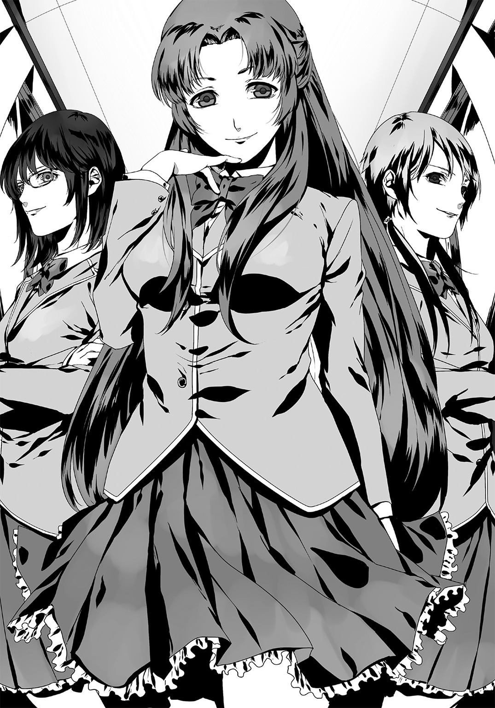
何故だ？ 行動の意図が読めず呆然とする俺に、彼女は「あら」と首をかしげた。
「意外ですわね？ 貴方、校内で大評判の『高校生で焚書課捜査官』なのでしょう？ とてもそうは見えません。予想していた風貌からはまるでかけ離れています」
「風貌？ 捜査員っぽくないと？」
「いいえ。イジメっ子に見えないな、と思いまして」
「は、はぁ......」
「喜びなさい、褒めているのですよ？ よくそんな情けない顔、――あら失礼。そんな覇気のない顔で『オタク挙げ』なんて出来るモノだと感心しているのですから。......あぁ失礼、『オタク挙げ』じゃなくて『弱いものイジメ』の間違いでしたわね？」
「......なるほどね。あなたも俺の事が嫌いってワケね。棗さんみたいな人気者にまで嫌われてしまうと、さすがの俺もヘコみます」
「嫌い？ そんな生やさしい言葉で表現なさらないでくれる？ 『鬱陶しい』『邪魔』『キモい』。その程度の言葉じゃ表現しきれないわ。――ねぇ皆さん？」
「そうですっ！ 椰子さまの仰るとおりですっ！」
「つーか嫌われてんのに何でイチイチ学校来てんだろ、コイツ！ ぷっくくくくっ！」
「藍さんも大変ねぇー。この男とは幼馴染みなのでしょう？」
「え、ああぁ......。うん。はい」
何とも言えぬ返答を見せる藍。
取り巻きの女子も棗さんも、邪悪な笑みを貼り付けて、あらん限りの憎しみを表現していた。周囲でも同様の含み笑いが起こり始めている。ウメハラの言葉を借りるのなら「完全アウェイだ」。彼でさえこの悪意の奔流をブロッキングで弾き切るのは困難だろう。......いや、ウメなら全部ノーダメージで切り抜けられるのか？
彼女たちの哄笑は続く。が、やがて飽きたのか、棗さんは取り巻き連中へと向き直った。
「――さて、充分笑いましたし。そろそろ行きましょうか、皆さん」
「はい椰子さま！ 放課後はいかがなさいます？」
「駅ビルのシネコンに行きましょう、映画を観に。いかが？」
「いいですね！ ぜひ私たちも参ります！」
「あぁ皆さん、間違っても『アニメ映画』などと口にしてはいけませんわよ？ 冴えない黒鬼さんが顔を真っ赤にして追いかけて来ますからねぇ～っ♪」
「くくくっ！ はぁ～い椰子さま！」
「きゃはははははっ！」
「......」
笑いながら立ち去る棗さんご一行。残されたのはただ無言の俺。
「......まるで台風だな。言いたいことだけ言って去っちまった」
つまりこれはアレだ。単なるイヤガラセ。
アニメ映画を見に行くという言葉からもわかるように、彼女たちはオタクなのだろう。つまりオタク規制の先兵である俺は、これ以上ない憎しみの対象なのだ。
遠くで俺たちの様子を眺めていた女子二人の声が耳に届く。
「......アレって維刀じゃない？ 何で沖田さんと一緒にいるの？」
「知らないの？ 幼馴染みらしいわよ、あの二人」
「へぇー。彼女も大変ね、あんなヤツの相手してやるなんて。可哀そう」
俺に聞こえるように好き勝手言いながら、彼女たちは靴を履き替え、校舎の階段へと消えていった。
......まぁ、これは仕方のない事でもあった。
俺が焚書課に所属しているのは学校では周知の事実。おかげで教師連中における俺の評価は上々だ。やれ「その歳で警察組織の一員とは頭が下がる」だの、やれ「仕事との両立で大変だろう」だの。何かと贔屓目で見てもらえる事が多い。
だが、生徒となると話は別だ。俺は学校の生徒ほぼ全員に嫌われている。
高校生ならばマンガ、ゲーム、アニメなどにハマってもおかしい歳ではなない。だが彼らがその媒体を過剰に所持している所を目撃した場合、俺は職務上それらを没収しなくてはいけないのだ。だから彼らは俺を避けるようになり、今や敵意を隠そうともしなくなっていた。先刻の女生徒二名、それと棗さん達がその良い例だろう。
――つまり。俺は学校で孤立していた。
「何つーか......悔しいよなぁ臥人」
気遣ってくれているのだろうか。俺が隠れオタクだと知っている幼馴染み・藍は心底残念そうに呟いた。
「アンタが本当は重度のオタで組織の背信者だと知ったら、みんな手の平を返すだろーに」
「いや、......違うよ。これでいいんだ」
そうだ。むしろこれでいい。皆から憎まれる方が。
こうして「規制の申し子が嫌われている」と振る舞うことで、俺の焚書課に対する背信行為が目立たなくなるからだ。あそこまで露骨にオタク連中に嫌われておけば、まさか俺が課の情報を漏らしているとは夢にも思わないだろう。
......何つーか。我ながらムナしいかな。この言い訳。
「ま、あんな仕事に就いているんだからな。仕方ないさ。――それに」
ひょいと藍に視線だけを向ける。
「ん、何よガット」
「お前みたいに普通に接してくれるヤツだっているし、な」
「いや、アタシもさっきの二人に同意だぜ？ 何でこんなカスが幼馴染みなんだか」
「......あ？」
「何が残念って顔だよ顔。ンなアホっぽいトンマ面しくさって。アンタがリョウさんみたいなナイスガイなら良かったのに」
「リョウさん？ こち亀のか？ 太眉のオッサンが趣味とは随分渋いなオイ」
「さ、冴羽サマに決まってんでしょーが！ バッカじゃねぇのオマエ!?」
何でだよ、両さんカッコいいじゃん。オタの鑑だよアノ人。それにもっこりリョウさんとまでは行かないが、銃の腕なら中々のモンだぞ俺も。
......って張り合ってどうする、俺。
「ああぁとにかくっ！ 放課後は必ずウチの店に来ること！ わかったなハゲ！」
「あ、はい。ハゲ了解しましたーっ」
別にハゲちゃいないがそう返答。藍は下駄箱前に俺を残して階段へと消えた。
「......しっかし珍しい事もあったモンだな」
藍のオヤジさんが「店に来い」というのは珍しい事だった。『聖堂騎士』の俺に用がある、という意味だから。何の用だろう。嫌な話でなければいいが。
そんな懸念と共に下駄箱を開ける。途端「バサバサバサ」と派手な効果音を奏でながら大量のゴミが落下してきた。菓子パンの袋、虫の死骸、画鋲や剃刀の刃。それら全てが床に広がる。
「またかよオイ」
この手のイヤガラセにはもう慣れた。最近ではもはや日課と化しているし。
周囲の嘲笑の中、俺は床のゴミひとつひとつを拾い上げると、あの悪意が満ち充ちる教室へと足を向けた。
さぁ、一日の始まりだ。
苦行という名の授業を今日もしっかりとこなそう。
一校時、二校時、三校時、四校時。
昼休みを挟んで五校時、六校時。
今日もいつもどおり日常を消化した。――で、今は自宅。
ふと時計を見上げる。時刻は十七時を廻っていた。
今日は焚書課に出向くこともなく、自宅の隠し部屋でアニメＤＶＤを鑑賞していた。今はどの店も販売規制に屈しているので、裏ルートからこのＤＶＤを入手するのに苦労した事をよく覚えている。床に横たわると整然と周囲の棚に並べられた『メディアの壁』が視界に入った。この空間こそが俺にとっての楽園なのだと実感がわきあがってくる。
俺が戦うのはこいつらの為。そう自分に言い聞かせる。
「これも早くクリアしないとなぁ......」
買ってからまだプレイしていないゲームを手に取った。本来であれば仕事のない今日のような日は、この部屋で夜通し遊べるはずだった。だが今日ばかりはそうは行かない。
壁に掛けてある純白のスーツを取り、手早く着替える。
ワイシャツ、ネクタイ、黒い革手袋。
次いで、白いスラックスとジャケット。――そして傍らの白いコートを手に取った。
途端ズシリ、と重い感触が腕から伝播される。特殊ケブラー繊維で編み込まれたこのコートは、抗弾性能を無駄に考慮するあまり、常識を超えた重量となってしまったのだ。
「悟空の道着じゃないんだから......」
いっそ「悟」の文字でも背中に刺繡してしまおうか。......まぁ、かといって俺にとってはどうという重さではないのでそのまま羽織る。受けるのはゴム弾がメインとはいえ、その衝撃はバカにできない。
仕上げ――。スクエアタイプの眼鏡をかけ、アップの前髪をバサリ、と前に下ろす。
鏡の前に立つと、そこには白を纏った男が一人。全身の大部分が白で覆い尽くされている。これこそ俺が『白亜の聖堂騎士』と呼ばれる由縁だった。
「行くか」
靴を履いてそう一言。俺は足下の隠し扉である鉄板を引き開け、その中へと身を躍らせた。
しばし落下し、着地。隠し部屋の下に広がっているのは素掘りの地下道。――この隠し通路は藍のオヤジさんが作ってくれたものだ。道は一直線に伸びている。そのまま道なりにしばらく走ると、やがて前方に大きな鉄扉が見えた。
ゆっくり開くと......見えたのは轟音をあげ通過する地下鉄。メトロの線路脇に出た。
地下鉄が通り過ぎたのを確認し、俺は悠然と線路を疾駆する。
この隠し扉がバレない理由はただ一つ。『管轄の地下鉄職員がグルだから』。
――と、前方に光が。ようやく駅のホームが見えてきた。
今日は運良く誰もいない。俺は悠々とホームに上がった。そのまま何食わぬ顔で改札に細工済み定期券をかざしてスルー、出口に続く階段を昇った。出口の駅名には『東京メトロ・末広町駅～一番出口』と刻まれている。
階段が終わる。晴れて俺は外に出た。
眼前に広がるのは夜の街。左手にはＡＭＰＭ、右手には三菱ＵＦＪ。遠くにドン・キホーテやツクモの看板が見える。この街に帳が降りるのは意外と早く、やはり割と多くの店の入り口がシャッターで覆われていた。
ここは秋葉原・中央通り――反逆者どもの集う街。
オヤジさんの店はここから右側に道を二本ほど入った中通りにある。故に俺は中央通り沿いにアキバ駅方向へと少し歩き、メッセが見えた頃に右の道へ入った。
ひと一人居ないと思っていた中小路。そこで俺はつい足を止めた。
「――はい、早く出して」
「あ、あの......」
「どうした。身分証明書を出すんだ。やましい点がなければできるだろう」
「いいい、いや、その」
「何だ、鞄の中に何かあるのかぁ？ ......どれ、こっちによこせ」
黒服の男が二人、眼鏡の青年に言い寄っている。
俗に言う『オタク挙げ』だ。
青年はあれで抵抗しているつもりなのだろう。その力は弱々しく、いとも簡単に鞄を取り上げられてしまった。表情から察するに中はアニメかゲームといったところか。
法に従うのであれば、年に十本以上のゲーム・アニメを購入する事は許されない。所持現場をおさえられたら現行犯で拘束される。捜査員もそれを期待して鞄を奪ったのだろう。
だが。中から出てきたのはマンガが一冊だけだった。
「......一冊だけ、か」
「は、はい」
「マンガは年に五十冊まで、だったな。......自宅を捜索する。住所を教えろ」
「えぇええ!? そ、そんな！ 自宅まで来るんですか!?」
「当然だ。この程度で終わるはずがない。貴様らオタクは際限を知らないからな」
ニヤニヤ。嫌みな笑みを浮かべる捜査官二名。引くに引けないといった状況だろうか。
最近、こういった横暴な捜査員が増えているという話は聞いていた。
到底見過ごせない。俺はコートの裾を捌きつつ、前方へと一瞬にして距離を詰めた。
「――なっ!? 何!?」
時間にして一秒あったかどうか。驚愕に彩られる捜査員二人の顔。
彼らにとっては視界を白いスクリーンに覆われたようにしか知覚できなかっただろう。
俺がしたことは単純。『一瞬で彼らに接近。コートで視界を遮りながら鞄を奪う』。それだけ。
だが余りに単純であるが故、彼らは常識を超えた速度に追随できず混乱していた。
この隙に俺は鞄を青年に押しつける。
「早く逃げろ」
「え、あ！ は、はいいいいいいいぃっ......！」
取り返した鞄を抱えて青年は中央通りの方角へと走っていき、やがて消えた。
さぁ――ここからが俺の仕事だ。
顔を確認する。俺と同じ焚書課の人間だ。名前は知らないが署で見た覚えがある。
年配の課員が俺へと鋭い眼光を向けた。
「ッき、貴様は......！ 『パラディン・エルガット』！」
「エ、エルガット!? コイツが最重要違法者と目される聖堂騎士エルガット!? このタイミングで遭遇とは......っ！」
「......ハァ」
ため息が出る。こっ恥ずかしい俺の二つ名を連呼する、焚書課のお二人さんに対して。
まぁ確かに。俺は毎度『オタクが検挙される場に突貫しては場を攪乱して去る』なんて事を繰り返している。そのせいで最重要人物としてマークされていた。『白亜の聖堂騎士・エルガット』なんてクッソ妙な名前で呼ばれ始めて久しい。今では、俺の首に懸賞金が掛けられてすらいた。この二人にしても俺を逮捕すれば昇進は確実だろう。
件の課員の片方が俺にリボルバーの銃を向ける。俺たち若年課員のモノとは異なる銃だ。
「俺を撃つつもりか？」
「あああぁそうだ、その通りだ！ 貴様を拘束する！ これで二階級特進は間違いない！」
二階級特進って死ぬつもりかよアンタ。つーか夜の街で銃を撃つ迷惑を少しは考えろよ。
......いや、「こんな街への迷惑など顧みる必要はない」とコイツは判断したのか？
仲間が駆けつけてくると面倒だ。銃は撃たせない方がいいな――。
俺と彼らの距離はおよそ二メートル、銃器が有効な距離ではない。このレンジでリボルバーを抜いた男の対応は戦闘要員として失格だ。
問題ない。そう判断した俺は一気に男との距離を詰めた。
前方に踏み出すと同時、俺は男の銃を摑んだ。弾丸の込められたシリンダーを手で包むように押さえ込む。男は引き金をカチカチと揺すらせた。
「ひ、......引き金がきかない!?」
そう。ダブルアクションは近距離ではいとも簡単に無力化されてしまうのだ。トリガー、シリンダー、そしてハンマー。リボルバーにおいてこの箇所は三位一体、一箇所が動作不良をきたせば、弾丸の発射機構は実現できない。男は警察組織の人間でありながら、それを失念した。
予想通りだ。この距離でハンマーを起こさないから、忘れていると思ったよ。
男は一瞬困惑したが弾丸が撃てない理由を悟ったらしく、撃鉄に指をかけた。
対応する暇は与えない。押さえた銃を内側に捻って奪い取り、足を掛けて仰向けに倒した。返す刀、男の首筋に蹴りを一発入れる。
「――、ッガ!?」
男は動作の一切を停止した。脳髄を揺さぶられて意識を保てる人間はいない。
残されたもう一人は......、
「お、おいっ！ ――っ、こ、この違法者がっ......拘束してくれるッ！」
懲りもせず先刻の反省も活かさず。俺に飛びかかってくるもう一人の課員。
違法？ 犯罪？ 社会の害悪？
どうだっていいんだよ、ンな事は。
お前たちが俺たちの全てを奪ってゆく――反抗する理由なんてそれだけで充分だ。
「大人しくしろおおオッ、この犯罪者がああああああぁあぁあッ！」
「遅いんだよ」
言い捨てて右に大きく跳躍。
返す刀、俺は呆気に取られる男へと突進。体勢を落として足払いを仕掛けた。派手に転倒した彼は先刻の課員と同様の末路、――まぁつまりは頭に俺の蹴りを喰らい、沈黙した。
俺は大きく息を吐き、服の埃を落とす。次いで現状を確認した。
損害なし。特筆すべきダメージも成果もない。
......のだが。
「どうするかな、この二人......」
足下に転がる二人の男を見下ろす。失敗した。片方を生かしておけばよかった。このまま路上に横たえておくのも忍びないし、かといって起こせばまた鼻息荒くして飛びかかってくるだろう。何とかしないと、と周囲を見回してみる。――と。
「うぉ!? な、何ですかコレ!?」
細道の陰からオタクと思しき青年が顔を覗かせた。偶然通り掛かったのだろう。
丁度いい。俺はやおら彼に接近し、その手に五千円札を握らせた。
「え？ な、何スかこの金」
「コイツらをタクシーに乗せてやってくれないか。行き先は霞が関二丁目一番一号、――警視庁だ。余った金はくれてやる。とらで同人誌でも買え。もしくはそこでドネルケバブでも食べるといい。――じゃあな。いい夜を」
「え、あの！ ち、ち、ち、ちょっと......!?」
慌てる青年を尻目に俺は道のさらに奥へと走る。
目的の店はもう少し先だ。本来ならばロングコートを翻し走る姿はさぞ映える光景なのだろうが、場所が場所な為まるで風情がない。マトリックスなんて遠い世界の話だ。
ここを曲がれば目の前――、見えた。
視線を頭上に巡らせた。そこに点滅していたのは『Ｂａｒ Ｂｏｔｔｏｍ ｏｆ ｔｈｅ Ｂｏｔｔｌｅ』というネオンの表示。ようやく目的地に辿り着いた事になる。
入り口には西部劇でよく見るスイング・ドア。押し開いた途端、「くぱぁ」と嫌な音が蝶番から鳴り響いた。
......毎度来て思うんだけどさ。何なんだよこの音。
普通「キィイ」って鳴るハズだろ。直さないんだろうか。不愉快極まりないんだが。
店内に足を踏み入れると。――途端、眼前にメイド姿の少女が立ちはだかった。
藍だ。
「お帰りやがれ、ご主人さま♪」
なんとも素敵すぎる挨拶で俺を出迎える彼女。メイド姿と言いはしたがスカートの裾が短く、カモシカのような脚がスッと覗いている。本格的なメイド服ではなくコスプレ用のものだろう。朝とは違い、何ともエロティックな雰囲気さえ漂わせている。
「お前さ。どんな客にも出会い頭で『お帰りやがれ』とか言ってるの？」
「言うわけないじゃん。ガットだけだよ。まぁアレだ、アンタが特別な男ってことだな」
「それは嬉しい。やはりお前は俺の想いをよく分かっているんだな」
「あ？ ......な、何だよ。キモいな」
「恥ずかしがるなよ。お前と学園生活を送れることが俺にとっては何よりの宝物さ。プレシャスレベルを計測したら３００は超えているだろうな。いつかはお前を幸せにしてやりたい――。時折そんなことすら思うんだ。結婚しよう、藍」
「キんも。......アンタ、やっぱその服を着たら性格変わるよね。前から思ってたけど」
それは自覚している。でも昼間の鬱憤を晴らしたいんだ、これくらい許容してくれ。ちなみに今話した宝物だの幸せだのは全部ウソだ。こいつと結婚なんか死んでもない。
「まぁいいや......。とりあえずさっさと店に入ってよ」
呆れ気味で藍に促され、店内へと進む。
すると、凄まじい熱気が俺たち二人を襲った。
「おおおおおお！ 珍しいなァ、パラディンのご入場かぁっ!?」
「え、噓!? エルガット？」
「マジかよ！ 久しぶりじゃねぇか！ 何やってたんだよ聖堂騎士っ!?」
あー具合悪くなってきた。誰もが俺のこっ恥ずかしい二つ名を叫び、こちらへと視線を集結させている。
しゃーない、ヤケクソだ。挨拶しておくか。
「......――久しぶりだな、社会の底辺ども！ このディストピアな現代を満喫しているか！」
うおおおおおおおおおおおおおお！ と一際盛大な歓声が上がった。
マトモな格好の人間は誰もいない。ゴスロリだのプラグスーツだのネコミミだの軍服だの、近年の秋葉原ではとんと見なくなった装いが目に入ってくる。まぁこの店がコスプレバーである事を踏まえれば当然だ。が、もはや社会にとって禁忌となりつつあるコスプレが一同に集うと、まるでここが異世界のようにすら錯覚してしまう。
近年ではコスプレも摘発の対象だ。公の場で披露した場合、逮捕されてしまう。だからこの店のように特別指定をうけた店舗でしかオタクは扮装を許されていないのだ。
加えて、現代ではこういったバーが唯一『オタ話』をできる場所となっている。最近ではネットすら監視されて、ヘタにアニメの話題を出せば捜査員が踏み込んでくる事案すらあった。ここはそんな恐れなどない、言わば治外法権が働く場所だ。
現実離れした非日常。その重要性を実感してしまう。
俺の隣。藍がニタニタ笑っている。
「いやぁさすがはオタクのヒーロー。大人気だな、パラディン（笑）」
「やめてぇっ！ 痛い痛い！ 二つ名とか聖堂騎士とか痛い！ 痛すぎるッッ！」
「そういや知ってる？ 焚書課の捜査官って黒い服着てるから、ここの連中には『暗黒騎士』って呼ばれてるらしいぜ？」
「いやぁッ！ 痛い痛い痛い痛いイタイ！ 『暗黒』とか超痛い！ やめろおっ！」
「表の名前が暗黒騎士で、裏の名前がパラディン......か。じゃあその相棒であるアタシはさしずめ竜騎士といったところかな！」
「......あああそうだな、言い得て妙だ。ジャンプで画面外消えてガリでも喰ってろ」
頭を抱えて苦悶に身をよじる俺に構わず、藍はカウンターのスツールに腰掛けた。俺も続いて隣に座る。正面では髭のナイスミドルがグラスを磨いていた。
「久しぶり、オヤジさん」
「来たか」
バー『ボトム・オブ・ザ・ボトル』のマスター。沖田譲だ。
藍の父親であり、親と絶縁寸前な俺にとってもう一人のオヤジ。この街におけるオタクの相談役でもある。禿げた頭に髭、筋肉質な身体とどこかアメリカ映画に出てきそうな風貌だ。ちなみにこんな風体だからってヤクザではない。
「とりあえず何を飲む？」
「苺ミルクの砂糖抜きを。――藍、お前もいつものか？」
「うん。バナナシェイクのチョコミックス。それとガリ」
最後の注文は何だよ。あるはずないだろ......と思ったが、オヤジさんは爽やかに頷いて奥からガリを持ってきた。飲み物より先にガリが出てくるバーって何だ？ 文字通りスシ・バー？
呆れつつ俺は懐から出した書類をマスターへと渡す。黙って彼はそれを受け取り「いつも済まないな」とカウンターの奥にしまった。
焚書課の捜査情報。いま渡したのはそれだ。
マスターの裏の顔は情報屋。俺はそのソースとして焚書課の秘匿事項を伝えているのだ。強制捜査の日時やマークされているオタクの氏名、果ては課に導入された銃器の種類など。焚書課に採用されてからというもの、俺は今日まであらゆる情報をマスターに横流ししてきた。それ目当てでこのバーを訪れる客も多いと聞く。
「......にしても、珍しいですね。マスターが俺に呼び出しをかけるなんて。普段は『バレるから出来る限り接触するな』が口癖なのに。何かあったんですか？」
「用があるのは俺じゃない。お客さんさ。――彼女がお前をご指名なんだ」
「彼女......？」
カウンター席のふたつ隣を指さすオヤジさん。
追った目線の先に座っていたのは女性だった。歳は幾つだろう。多分俺より年上。かなりの美人だ。長い髪をポニーテールにしており、細身なスタイルからも鋭敏な印象。その魅惑的で蠱惑的な脚を惜しげもなく晒しているのがあまりにもエロティックで、目を釘付けにされる。
そして何より――その『紅』。彼女のファッションは、どれも赤が強い存在感を示していた。
深紅に染められたミニのコート、赤銅色のヒール。加えてサングラスを掛けていたが、そのレンズの色すら真朱が差している。
「......凄いですね。ジオンの少佐ですか？ それとも黒の騎士団のエース？」
「ふふっ。オタクらしい問いね。......そうね、個人的にはナインボールといったところ？」
酷く妖艶な声だった。黙って聞いていたら魅了されてしまいそうな――そんな声。どこかで聞いたような錯覚にさえ陥ってしまう。
彼女はこちらへと歩いてきた。そして俺の真横に立つ。
悩ましく首を傾けたまま、俺にゆっくりと接近。右手を伸ばしてきた。そして俺の首筋にその細い指をツツーッと沿わせてくる。
「――あ、あの」
「初めまして、聖堂騎士エルガット。私の事はご存知？」
「え、あ、あの......だ、誰？」
「あら。ご存じないの。――残念だわっ！」
そう言った瞬間だった。
まるで猛獣の如き速さ。紅き女は手を俺の襟へと伸ばしてきた。そしてそのまま、首の後ろへと腕を回そうとする。
首投げだ。そう読んだ俺は彼女の手を払い、スツールから飛び退いた。
「何の真似だ」
彼女は答えない。俺が退いた距離を一気に詰め、なおもこちらを摑もうと肉迫する。
手首を極めようと右手を摑んできた。その手を逆に極め、離させる。
これで止めてくれるかと思ったが、どうやらこの女は諦めが悪いらしい。肩と背をこちらへ向け、俺の懐に潜り込もうと身体全体で突っ込んできた。
――合気道。それもこれは、古武術の流れを汲むものだ。
となれば懐に入られるのはマズい、この女が突進する勢いだけで投げ飛ばされる。ゆえに俺は判断を切り替え、半身で彼女を避けた。
朱との交錯――。俺たちはまた睨み合う形となる。
「おーいおいどうしたぁエルガット！ 何か騒がしいぞ！ 来て早々痴話ゲンカかよ！」
「何だ何だよ!? 外でやれよなーっ！」
今では店内のざわめきも大きくなっていた。まるでその場面からは浮いたかのように、白亜と深紅はカウンター前で言葉もなく対峙する。
「......その技。京都で四百年続く古流武術だな」
「あらご存知なの。たった一戦交えただけでソレが分かるなんて。実力は確かなようね。どこかでご覧になった事でもあるのかしら」
「マンガで見ただけですよ」
意識を切り替え、俺は「次は何がくるんだ」と警戒。攻撃に備える。
が、女は構えていた手を下ろして笑みを見せた。
「......御免なさい。試させてもらったわ。――『レディ・パルム』。そんな変な名前で、人は私を呼ぶわ」
謎の女パルムに聖堂騎士エルガット。イタい二人がコスプレバーで邂逅か。ホント痛いわ。
「そういえば俺の他にも『捜査員狩り』をしている、戦闘に長けた女性がいるという話を聞いた事がありますけど......あなたが？」
「ええ。言わば貴方の同業者、......いや同志、と言った方がいいのかしら」
「なるほど。志を同じくする者に興味が湧いたという事ですか？」
「まぁ近いわね。実は貴方にお願いがあって。マスターに相談したら『うってつけの男がいる』って教えられて、こうして待っていたというワケ」
「お願い？ それは一体、――っおおおおぉ、お!?」
突然、俺の襟首を摑む手に会話を中断された。
「お、オイ！ ちょっとこっち来いガット！」
藍だ。コイツが会話を妨害し、彼女から離れた場所へと俺を強制連行した。
突然の暴挙に呆然とするしかない。
「っ痛ってぇな！ 何だよ。......ん？ つーかお前、何で顔隠してんの？」
メイド姿の藍は片手で顔を覆い、レディ・パルムを避けるようにして立ち回っていた。
「ガット。アンタさ、まさか気付いてないとか言わないよね？」
「は？ 何が？」
「えぇーマジー......？ 本気で気付いてないの？」
何を言っているんだ、こいつは？
「あの人の顔をよーく見てみなよ。髪型も違うし、化粧濃い目にしてるから年上に見えるけど、どっかで見た覚えない？」
「えぇ？ ん、――......んん」
「......どう？」
「いや、といってもなぁ。別に。見覚えなんてないけど......」
「あーそう......。いや、もういいわ何か......。向こうも気付いてないみたいだし」
「ええ？ な、何だよ!?」
「こんな鈍いのが捜査官とか世も末だよねー。ホント」
藍はレディに背を向け、彼女から離れた隅のカウンターに腰掛ける。そしてようやく来たバナナシェイクをズズズ、と吸い込み、ガリをバリバリ嚙み始めた。装いはメイド服。ムードも何もあったモンじゃない。何を言いたいのかもサッパリだし。
当のレディは怪訝そうな眼差しでこちらを眺めていた。
「......えっと。エルガット。話を続けていいかしら？」
意味不明解読不能の言動をくりかえす藍を放置し、俺たちは再び会談へと臨んだ。
二人並んでスツールへと再び腰掛けると同時、マスターが苺ミルクをカウンターに置いた。俺はそれを一口あおって彼女に「どうぞ」と話の再開を促す。
「私がここに来たのは貴方にお願いがあるから、って所まで話したわね。――その理由はただ一つ。貴方に止めて欲しいのよ」
「止めて欲しい？ 何をですか」
「テロ。これを見て」
バサリ、バサリと。音を立てて数枚の書面がカウンター上に展開された。
その一つを手にとってみる。書かれていたのは複数の個人情報――。だがそれほど詳細な物ではなく、言わば経歴レベルに留まっているようだった。
「この人たちがどうしたんです」
「あなたは『東のサン・キュロット』という組織をご存知？」
「そりゃもちろん。近年のオタク迫害・差別の現状を止めるため、法改正運動などをしている団体ですよね？ 漫画家やラノベ作家が構成員の中心だとか。俺も入ってみたいと思っていたんですけど、接触すら難しい連中です。この書類の彼らがそうなんですか？」
「ええ。彼らがその『東のサン・キュロット』構成員よ」
信じられない事だった。彼らの情報をこうも簡単に摑んでいるだなんて。
各人、どれも本名は載っておらず、コードネームのような名前ばかり。どうにも眉唾ものだが、とりあえず話を聞くことにする。
「こんな形で彼らを知る事になるとは思いませんでした。......でもテロなんて」
「そう、するハズがない。本来ならば」
彼女の視線が憂いを帯びてゆく。
「彼らの活動スローガンは『武力に頼らず世界を変革する』。だから主張を力で通すなんて有り得ないのよ。それが変わったのは......」
「トップがすげ替わった、という事ですか？」
頷いた彼女は俺に最後の一枚を渡してきた。写真に映るのは男。筋骨隆々といった風情で、まるでオタクという言葉が連想できそうにない人種であった。
「由樹矢正。漫画家で元自衛官。知ってる？」
「もちろん。軍事サスペンスを描かせたら、小説家にも映画監督にも右に出るものは居ない。......彼が『東のサン・キュロット』の代表になったと？」
「らしいわ。彼がトップに就いてから、どうやら状況が変わってきているらしいの。海外のいかがわしい連中との付き合いに始まり、山中での極秘演習......。傭兵すら雇い入れたという情報も挙がってきているわ」
「よ、傭兵!? ......随分物騒だな」
「ええ。だから言ったじゃない、テロだって」
ドン引きってヤツだコレ。俺はさっきまでは「焚書課の人間として秘密裏に協力しよう」と思っていた。だが事が『傭兵』『海外勢力』ともなれば話は別だ。そこまで話が及ぶと公安、下手すると自衛隊の領域。俺の管轄ではカバーしきれない。
――いや、タダでさえ新設されたばかりの特別室。越権行為になる恐れもある。
それにこの資料だって......。
「どうした。随分と及び腰じゃないか」
グラスを磨いていた手を止め、マスターが薄く笑う。
「テロと聞いて怖じ気づいたのか？ 白亜の聖堂騎士らしくもない」
「いや、そういうワケじゃないんです。......ただ気になって。一体どうやってここまでの資料を手に入れたのか、って事が」
ピン、とカウンターに展開された資料を指で弾いた。確かにそれほど詳細ではない。だが、こんな情報は焚書課でも入手できていない。
「オタクの事情に精通している俺でさえ『東のサン・キュロット』のメンバーは知らなかった。そんな秘匿情報をこうも簡単に出せるなんて......何者なんです、アナタ」
「ごめんなさい。教えられないわ」
強固な意志を短い言葉に込めた、そんな印象だった。
想像するに、恐らく彼女は『東のサン・キュロット』の元組織員か何かだろう。でなければ説明がつかない。まぁ本人は喋る気がまったく無いようだし、追及はやめておくか。
「......なるほど。『テロでオタク文化を認めさせようとする連中がいる。そいつらを止めてくれ』――そう言いたいんですか」
「ええ。彼らが早まった行動を起こす前にね」
「嫌です。......と言ったら？」
「あら何故？」
「俺はオタク側の人間ですよ？ なのに彼らの邪魔をしろって言うんですか。むしろ普通なら彼らの行動が上手くいくのを祈るほうだと思うんですが」
「......コレを見たら、考えが変わるわよ」
そう言って、彼女は書類を漁り、しばらくして中から一枚の写真を出した。
手にとってそれを眺めてみる。
写っていたのは白銀色の四角いスーツケースだった。フタが大きく開かれ、中には魔法瓶のような金属製の筒が無機質にのぞいており、配線が縦横無尽に伸びまくっていた。
――手が震えるのが分かった。自分が目にしたものを信じたくなかった。
「こ、......これ」
「そう。核爆弾。ビルの一つや二つなんて余裕で吹き飛ばすでしょうね」
眩暈がする。吐きそうになった。俺は彼女がウソを言っている事を心底望んでいた。
ビルの一つや二つ？ そんなレベルで済むか。もし都心部で起爆したら数え切れない犠牲者が生まれる。交通・通信・金融どころか首都機能も完全停止し、日本そのものが壊滅するぞ！
この爆弾は、俗に『スーツケース型核爆弾』と呼ばれるものだ。小型で持ち運びに便利なのは勿論、その破壊力も折り紙付きだ。俺もどこかの資料でしか見たことが無かったが。
「何で......何で日本にこんなモノが」
「冷戦時代のソビエトから持ち出されたモノが流れに流れた結果、『東のサン・キュロット』が闇マーケットで買い取ったらしいわ。私、ロシア側にコネがあってね。彼らに接触したけど『間違いなく我が国から流出したものだ』という回答だった。......――ほら、ケースの下部に番号が見えるでしょう？ そのナンバーを照会したの」
「......し、証拠は？ 彼らが本当にこれを所持しているという証拠がない」
「あぁ見る？ どうぞ」
レディが出したのはスマートフォン。それを二、三回操作すると、彼女は俺に見えるように画面をかざしてきた。『東のサン・キュロット』の集会の一場面らしい。壇上でリーダー・由樹矢正が声を張り上げている様子が液晶に映し出される。
そして彼の傍らには――あのスーツケース爆弾が鎮座していた。
『......――現在、政府は日本固有の文化を破壊せしめんとしている。
人の生きる権利だ！ 彼らはその権利を剝奪しているのだ！
我々は無垢な被害者であった！
国家の繁栄のため生け贄として用意された、時代に拒絶されし無知な羊であった！
だが、私はこの泥沼を打開する手段を手にしたのだ。
この私の隣におわす守護天使、そして死をまき散らす第四圏の大悪魔――。
核だ！
核兵器である！
これより我々は日本国で初の核武装組織となる！
この悪魔を使用すれば、私は世紀の殺戮者として人々の記憶に刻印されるであろう。
なれば僥倖！ この憤怒が永久無限語り継がれるのだ！
新時代のため、未来のため、そしてこの国のため！ 私は喜んで悪魔に魂を売り飛ばそう！
この悪魔と契約し、被害者と加害者を入れ替える、その時が訪れたのだ！
立て！
そして新時代の幕開けを共に見るのだ！
我らは東のサン・キュロット！ 極東に熱き革命の夏を！ ――......、』
まだ続きがあるようだが見たくもない。背景や他に映っているものにも場所の特定に繫がる特徴がない。俺はウンザリしてレディに止めるよう指示した。
「どう？ 分かってもらえた？ 私が彼らを止めようとしている理由」
「ええわかりました......十分すぎるくらい」
俺の考えはもう完全に決まってしまった。
「自分はオタク側だから」だの何だの、そんな事を言っている場合じゃない。彼らを止めなければ大変な事になる。日本史上最悪のテロが実行されるだろう。
絶対に阻止しなければ。尋常じゃない数の死傷者が出てしまう前に。
「......いつなんです？ 彼らはいつ行動を起こす予定なんですか？」
「まだ分からないわ。現状で判明しているのは、彼らが『これでどこかを爆破しようとしている』という事だけ。大方都庁か議事堂じゃない？」
「だったら爆心地が新宿区か千代田区になるかの違いだけでしょうね。どちらにせよ絶対に避けなければならない事態だ。......いや、まずは日本政府に届け出たほうが」
「それは出来ないわ」
「ど、どうして！」
「政府に何て言うの？ 『オタクが核兵器でテロを実行しようとしてます』とでも言う気？ そんな事をしたら、政府は大喜びでオタク規制を強化するでしょうね」
「......なるほど、規制強化の口実を与えてしまうという事か」
それどころかオタクを陥れる為なら、わざと核を使わせようとするヤツすらいるだろうな。政府はそういう連中ばかりだ。所属する俺が言うんだから間違いない。
「それに市民がこの件を知ったら大パニックは避けられないし。大人数で調査するのは避けたいのよ。内通者が必ず出るし、口の軽い人間っていうのはどこにでもいるから」
「だから俺たちだけ、か。......連中の潜伏先は？」
「ご免なさい。それもまだ不明」
こちらの持ち札は全て晒しました、と言わんばかりに彼女は両手を広げた。会話の小休止といったところか。俺もグラスを傾け、状況を整理する事にした。
――まず、問題の組織は『東のサン・キュロット』。彼らは規制からの解放を叫んでいる。これまでは「世界を変えるのは言葉」を活動スローガンにしていたが、そのトップが武闘派漫画家・由樹矢正に代わってからはキナ臭い連中との付き合いが増えていった。
そんな最中。彼らは旧ソビエトから流れてきた核兵器を入手する。由樹矢はそれを用い、世界を改変するとメンバーの前で演説を打っていた。目的はハッキリしている。『核兵器で日本を変えようとしている』のだ。破壊対象や日時は現状不明だが、まずはそこを割り出す必要がある。
つまり――『東のサン・キュロット』に接触することが最重要、ということか。
レディは黙する俺を見て何を思っただろう。表情を変えずスッと椅子から立ち上がった。
「この資料は置いていくわ。ゆっくり考えて。――あ、それと」
カウンターに小さな紙切れが置かれた。
「......何です、これ」
「私の電話番号。何か分かったら連絡して」
こちらを見ずにそう言って、彼女は出口へと足を向けた。
「お帰りですか」
「ええ。調査の続きをしなきゃ。もちろん私も最大限の協力はさせてもらうわよ。彼らは絶対に止めなきゃいけない」
「異議なしですね」
「分かっていると思うけど。私たちが止められなかった場合は、最悪日本という国そのものが終わるわ。失敗できない。......だから」
レディは言葉を切った。
そして突然振り向き、俺の方へと接近。
その身を寄せ、――胸が押しつけられた。
戸惑う俺に彼女は構っていない。整った顔が耳元に寄せられる。かすかな吐息が鼓膜をくすぐる中で、レディは俺の首筋に......唇で軽く触れた。
「頼んだわよ」
俺から離れるレディ。
ふわり、と。まるで空を歩くかのように彼女は俺の脇を通りすぎてゆく。やがてスイング・ドアが「くぱぁ」とムカつく音を響かせ、レディはこの店から消えた。
残されたのは――白コートのコスプレ野郎、メイド服のガリ食い女、バーのオッサン。あとは後ろで我関せずと各々盛り上がっている有象無象のオタクたち。
首筋を拭うと......手には彼女のルージュが鮮やかに残された。
「鼻の下伸びてんぞ」
いつの間に隣に来たのか。藍がそう告げた。
「嫉妬か？」
「は？ オマエ自分の顔がどんだけトンマか分かってる？ 鏡見たことある？ もしかして鏡持ってないの？ 買ってあげようか？」
「ンな事言ってる場合かよ......」
俺は氷で薄くなった苺ミルクを一気に飲み干した。
正面ではマスターがグラスを磨く手を止め、重苦しく口を開く。
「......とんでもない話になってきたな。まさか、こんなヤバい案件だったとは」
「どう思います、マスター」
「どうもこうも。彼女を信じていいのか、って事か？ 噓をついている感じはしなかったが」
「俺もそう思います。......でも彼女、間違いなく何か隠してますよ」
「この構成員名簿の出所だな」
俺は黙って頷いた。
「こんなモノが手に入るなんて......普通じゃまず無理です。焚書課でも不可能だった」
「他ならぬ『東のサン・キュロット』構成員でもなければ、か？」
「ええ。でも彼女がそうだとは思えない。知っている情報があまりにも少なすぎる」
「だったら彼女はリーダーの情婦かもな！ もしくはその身内かも！」
藍が嬉しそうにそう言う。情婦という死語についてはともかく、確かにイイ線いってそうだ。
「まぁ何にせよ？ 遠くから全部聞いてたけど、彼女の話は信じても問題ないと思うよ、ガット。それより問題はこっちでしょ。――核兵器」
トントン、と。核爆弾の写真を叩く藍。せっかくコイツの脅威が薄れかけていたのに、再びその恐怖を喚起してくれるとは。ドＳか、こいつ。
「どうするつもり？ アタシもツテでいろいろ調べてはみるつもりだけど......」
「ダメモトでエルガットとして情報収集してみようと思う。焚書課でもこの名簿の写真を『要注意オタクリスト』と見比べてみる。顔認証システムには別管轄で近づけないから、ひとつひとつ手作業で」
「......時間かかりそうだね」
「最低一週間はかかるな。それまでに核が起爆されなきゃいいけど」
自嘲気味にそう結んだ俺は、藍から見たら自棄になっているように見えたことだろう。だが事実、ムチャな話だと思ってしまっているのだ俺は。
この名簿は写真は載っているが名前はコードネーム、住所どころか何の仕事をしているのかさえ書かれていない。この程度の情報で探し出すなんて、日本海から針一本を探し出すようなモノだ。
ヤケクソ気味にレディの残していった名簿を適当にパラパラとめくってみる。
クロスファイア、イージス19、ヤタガラス、雪原の砂城、ミッシングクラリス、幽遠、セブン・ナイン、紫炎キラー、血塗れの刀剣......。
どいつもこいつも妙なコードネームばかりだ。というかこれじゃまるでハンドルネームだろ。俺も人のことは言えないが。若干頭痛を覚えつつも更にページを進める。
――と。不意にページをめくる指が止まった。
まさか。
「これ......って」
思考が完全に硬直した。視線がある男の写真に釘付けにされた。好みの顔だからとかじゃない。その顔に見覚えがあったからだ。いや、見覚えなんてレベルじゃない。これは――、
「おい、臥人」
唐突にマスターの声で現実へと引き戻された。
ちょうどいいところで何事だ。せっかく突破口に気が付いたのに――。そう思いながら彼の視線の先へと首を回してみると。
くぱぁ。嫌な音が再び奏でられた。
「......冗談だろ」
思考の次は視線が硬直した。
店の入り口に、最もここで目にしたくない人の姿を視認したからだ。
「警視庁焚書課だ！ 全員その場で大人しくしていろ！」
現れた彼女は幼い少女特有のソプラノを響かせ、店内の全員へ静粛にするよう促す。
「お、おい、アイツって......!?」
「焚書課の『金色夜叉』......ッ！」
客が騒然とする中、彼女は堂々とそのド真ん中を割って歩き、カウンターのあるこちらへと向かってくる。全身黒、鮮やかな金髪、この時間に出歩くべきではない年齢......。なのに俺を含め、誰もがその存在の不自然さを疑問に思わない。
知っているからだ、誰もが。この金髪の少女が『鬼の焚書課捜査官』だと。
マズい。先輩が――奏手イリナが、このバーに現れた。
「邪魔するぞ」
ちっとも申し訳なさそうではない挨拶。なおも先輩はドスドスとこちらへと進行してくる。そして俺をチラリと一瞥――、してすぐに正面へ視線を戻すと、俺の二つ隣のカウンター席に腰を下ろした。年齢も格好もまるで異分子。なのに彼女の放つ威圧感はこの場の何よりも強大で、職場を共にしている俺ですら緊張を隠せない。
マスターがグラスを磨く手を止めた。
「......お嬢ちゃん。ここは法の届かぬ特別指定店舗、いわば治外法権の場だ。そこに土足で踏み込んでくるとは。どういう了見なんだ」
「分かっている。だから私も事を荒立てるつもりはない。――私が用のある人間は、一人だけだからな」
先輩は俺の方へとスツールを回し、体をこちらへ向けた。側頭部の金糸を束ねたツーテールが螺旋を描いて躍る。
「エルガット。用があるのはお前だ」
「やぁ、焚書課の金色夜叉さん。久しぶりだね」
この姿で会うのは通算四回目か。エルガットとしての挨拶に彼女は応えることもない。
「......ついさっきの事だ。私の仲間である捜査員二名が突如として行方を絶った。この辺りで警邏しているハズだったのだがな」
「へぇ？ 最近物騒だからねぇー。お嬢ちゃんも気をつけなきゃ駄目だぞー？」
「馬鹿にするな！ やったのは貴様だろう、エルガット！ 正直に言え！」
「何がだい、お嬢ちゃん。というか子供はさ、もう寝る時間じゃないかな？」
「とぼけるのもいい加減にしろ腹立たしい。それとだ。その『お嬢ちゃん』というのを止めろ。不愉快だ」
「オーケーオーケー。分かったよお嬢ちゃん」
「こ、......この、ッ！ 馬鹿にしているのかっ!?」
逆上。そう表現するに相応しい勢いで、先輩は俺に向かってきた。
その手に握られているのは拳銃。焚書課の制式銃・ファーレンハイト９９９９だ。装塡された弾丸はゴム弾だろう。それはもう疑いようもない。
彼女は何の躊躇いもなく、俺へと発砲したのだから。
瞬間、腕部を貫く衝撃。彼女の発砲した弾丸を腕で防いだ為だ。特殊繊維のコートを通してとはいえ、そのダメージはなかなかのものだ。
このまま受け続けるわけにもいかない。そう判断した俺は、彼女の射線から外れるようにカウンターの内側へと飛び込んだ。そのままグラス棚の前を走り抜ける。
「逃がさん！」
バシン、バシン。破砕音が立て続けに鳴り響き。
外れたゴム弾がカウンターのグラスを砕いてゆく。一面煌めくダイヤモンド・ダスト。
オヤジさんの渋い顔が視界に入るが構わない。俺はバサリ、と大きくコートを広げた。途端に視界を奪われた先輩が、顔の前にツインテールを握った腕を突き出す。
あの髪を使った捕縛術を繰り出そうとしているのだろう。が、アレは相手の意表を突いて初めて成立する戦術。何度も目の当たりにしている俺には通用しない。
今だ。俺はカウンターを飛び越えて疾駆、彼女との距離を詰めた。
そして――、
「っっっ!? ――な、な、何ッ!?」
彼女が困惑するのも無理は無い。
何せ今、俺は彼女を抱きしめているのだから――。
「は、はなせ、っ！ な、ななな、な、な、ナンのつもりだコレはっ!?」
......いや。抱き締めている、というのは語弊を生むか。正確には『長いコートの裾で彼女の体を巻いて拘束している』だけなのだから。だがこの異様な拘束術は、今回のような場合かなりの効果を持っている。長身の俺、そして低身長である先輩――両者の体格差が直接『捕縛力の強さ』に繫がるからだ。
「ッく、............ぁ、あ」
先輩は苦しそうに呼吸を荒げ、その手から銃を落とした。スキは見逃さない。俺は床に転がった銃に足を置き、その所有権を我がモノとする事に成功した。
もう彼女に得物はないと判断、俺はコートによる拘束を解除した。
「はぁ......はぁ、っ！ あ............っ、っ」
体をくの字に折りながら喘ぐ先輩。
気の毒な思いが消えず、介抱してあげたいところだが、――店内を見廻すと。
「ッしゃああッ！ いいぜいいぜぇ！ やっちまえ！ 焚書課なんざブタの餌ァ！」
「早くケリつけろよ、今オマエに五千円賭けたんだからよお！」
「そこで止めんなよなぁー！ とっととトドメ刺してご退散願えって！」
......無理だな。このような状況下で敵を助けるワケにもいかない。
唇を嚙みつつ、俺は足の下にある彼女の銃を拾い上げた。そして流れるように、その銃口を先輩の頭部へと向ける。
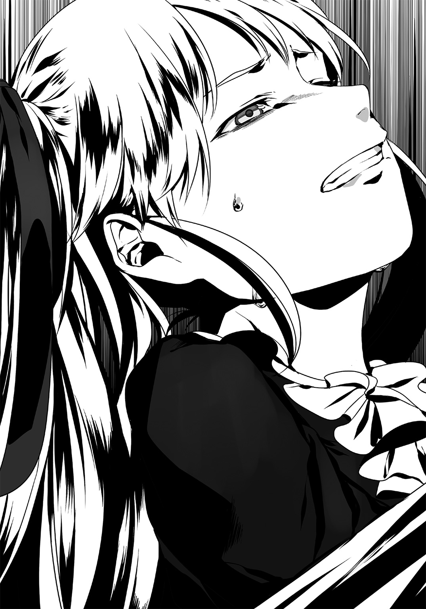
「出て行ってもらえるかな？」
「っ！」
沈黙。俺たち二人は硬直する。『少女に銃口を向ける男』という、これ以上ない暴力的で非常識な絵面のまま。思わず卑屈な笑いが出そうになった。同僚であるハズの彼女に銃口を向けているという、この矛盾した現実に。
先輩は、俺の手から銃を奪い取った。
「......覚えていろ。貴様はいずれ、真っ向から捕まえてみせる。この私が！」
これ以上ない捨て台詞。言い終えると、彼女は俺から視線を外した。やがて手元の銃を懐にしまい、俺たちの戦闘を呆れ顔で眺めていたマスターの方へと歩いてゆく。
「......何だね」
「店を荒らしてしまった。申し訳ない」
スッ、と。先輩がカウンターに懐から出したカードを置く。
「何だこれは。名刺？」
「割れたグラスの請求はそこに書かれた機関へしてくれ。税金からお支払いしよう」
「いやいい。請求はしない。そのかわり二度とこの店に来ないでくれ」
聞こえなかったのか、聞こえないフリなのか。先輩はマスターの願いに応えずに踵を返した。そして入ってきた時と同様、怯え顔でこちらの様子をうかがっている客へなど目もくれずに入り口へと直進する。
入り口のスイング・ドアに手を掛ける彼女。
くぱ――。中途半端な擬音が鳴った。
先輩は入り口でこちらに背を向けたままだ。月明かりが彼女に逆光を与え、その姿をいやに神秘的に彩る。月の女神・ディアナの恵みを受けて輝く金糸の二房が、まるで毒蛾のように怪しく誘っているように見えた。
だが。
（......何だよ、この音......）
くぱぁ、くぱぁ。
くぱぱぱぁ。
くっぱぁ。
くぱぁ。
中途半端に開かれたスイング・ドアのせいで、蝶番が不愉快な雑音を奏で続けているのだ。お蔭で芸術的なワンシーンである『月光浴の少女』がまるで絵にならない。
くぱぁ。
「......オマエとよく似た部下がいるよ。背格好も、声もそっくりだ」
くぱぁ。くぱぱぁ。
あーウルセェな......早く出てってくれよ先輩............。
「ふぅーん？ だとしたらソイツはかなりの色男だね」
くぱぱぁ。くぱぱぁ。くぱぱぁ。
いいかげん頭がおかしくなりそうだ。
「なんせこの俺とそっくりなんだからさ。――あぁでも、その部下に惚れちゃダメだぞ、お嬢ちゃん？」
「......何故だ？」
「中身も俺と同じかも知れないだろ？ 『キケンでヤバいヤツ』だよ、ソイツもさ」
くぱ、――――。
ようやく音が途切れた。先輩がドアの向こう側へと進み出たからだ。このピンク擬音に酔っ払う前にそうして頂けて大変助かる。
「フン！ ......また来る！」
「いやだからもう来るなって」
マスターの懇願もやはり聞こえない様子。先輩は音もなくこのバーから立ち去った。
客の誰もが揃って先輩が立っていた扉を凝視していた。『残心』ではないが、場の緊張からまだ醒めやらないのだろう。俺も彼女が本当に帰ったのか疑わしいので、そちらを睨み続けている。
......まぁ、大丈夫か。そう判断した俺は手をパン、と叩き、皆の意識をこちらに向けた。
「みんなーっ！ 突然騒いですまなかった！」
視線が集まる中、店内の全員にむけてそう叫ぶ。
「こんな素晴らしい月夜に硝煙の香りだけ、ってのもナンだよなぁ！ お詫びも兼ねて、今日は俺が全員分おごる！ 遠慮せず飲んでいってくれーッ！」
ぅおおおおおおおおおおおおおおおおおおおお！ と、店が割れんばかりの歓声――。
いきり立った彼らはテーブルから手を挙げ、次々とマスターに注文を告げてゆく。オゴリと分かった途端にこれだ。
まぁ、皆の交流を邪魔してしまったのだ。これくらいはしなくては。
「お、......終わった？」
カウンター裏からヒョコ、と不安そうな表情が覗いた。
藍だ。どうやら先輩とのバトル中は、カウンターに飛び込んで避難していたらしい。
「モグラかよ」
「ったく、......アイツやっぱりアタマおかしいよ。ゴム弾とはいえ見境なく店内で発砲するんだもん。あれでチューボーとか将来が思いやられるね。ちゃんと教育しとけよな。先輩教育すんのも後輩の務めだぞ」
「んな事よりガラスとか片付けなくていいのかよ」
「そうだぞ、我が娘。早くこっちを手伝いなさい」
「あー、はいはい。手伝いまーす。......つーか、全員に奢りとかやっちゃっていいの？ 結構な額になるよ？」
「いいよ。割と高い給与をもらってるし」
そう短く答え、自分の襟元に手をやり、引っ張ると――。
ベリッ。何かが剝がれたような音が鳴った。握った手の中を見てみる。そこにはボタン大の黒い機器が二つ認められた。――やっぱりか。俺はその機器を二つとも握り潰す。
「んっ......何それ」
「盗聴器。それと発信器。先輩もなかなかやるモンだ」
焚書課で使用されているモノだ。俺にコートで拘束されていた時に付けたのだろう。一方的にやり込められたと見せかけて、こんなところでカウンターを狙ってくるとは。やはり一筋縄ではいかない人だ。
「......目を付けられちゃったな、アイツに」
「前からだ。先輩とこの格好の時に遭遇したら問答無用で戦闘になる。もう慣れたよ」
「なんで気付かないんだろ、同僚だって。いっつもアンタらコンビ組んでるんでしょ？ しかも向こうは瞬間記憶能力とかいうのがあるのに」
「本人が言うのには『私は先入観で何事も判断してしまう悪癖がある』との事だからな。俺とエルガットが一度でも繫がらなかったら、それ以上は『疑えない』んだろ」
「ま、眼鏡と髪型って結構印象変わるしね。......しっかし変な話だよね。年下の上司と水面下では敵対している高校生なんて」
俺もそう思う。ラノベヒロインの『最強の魔力を持つネコミミメイド男の娘吸血鬼』みたいに倒錯しすぎだ。つーか『中学生にアゴで使われる高校生』ってどうなんだよ正直。社会に出たら年下の上司なんて普通なんだろうけど。
釈然としない思いと共に店内を眺める。手を挙げてこちらに挨拶してくる女性客がいた。軽く手を振ってこちらもそれに応える。彼女が着ているのは、体をタイトに締め付けるパイロットスーツ。アニメのコスプレだ。
気の良いヤツらだ――そう思う。
ひと昔前であれば「暗い」「会話できない」「服装に頓着しない」など、オタクはその行動や見た目が非難されることも多かった。
だが規制によるケガの功名とでも言おうか、最近ではボサボサ長髪や微妙なチェックシャツのオタクなどはまず見かけなくなっている。一般人の目が必要以上に強くなっているのだ、政府に目を付けられぬよう意識している結果だろう。それに加え、最近はネット上での意見交換までが監視されている。だからここのような特別指定を受けたところでしかオタ話が出来ない為、『仲間同士で直接会話する』というコミュ能力も、現代オタクにとって必須スキルとなりつつある。「話しかけてもブツブツ言ってる」「見た目がキモい」なんていうのは既に前時代のオタクなのだ。
――ほら、あいつらを見てみろ。世間から拒絶されているハズなのに、ここではそんな印象は受けない。むしろ仲間同士で談笑したり議論に花を咲かせている。
こんなヤツらを嫌う理由なんて、どこにもない。そう思う俺は間違っているのだろうか。
先輩にはハッキリと「間違っている」、そう断言されたが。
「......どうして、嫌うんだろうな」
「ん？」
「奏手先輩だよ。なぜあんなにオタクを嫌うんだろうと思って」
「ご同僚でしょアンタ？ 直接聞けばいいだろうに」
「聞いたよ。どうしてここまで拒絶されるんですか、って。何て言ったと思う？」
「想像つかない」
「『ヤツらは犯罪者だから』だそうだ。『連中は秩序の破壊者だ』とも言ってたかな」
藍が表現しがたい渋面を作る。
「随分とイカれた表現だなぁ......何か過去にあったのかもね」
「オタクにイジメられた、とか？ 有り得ないよ。彼女に限って」
「いや、もっと単純に、オタクを嫌うようになった決定的な出来事が、さ。存在そのものを認められないなんて余程だぞ？ こういう差別ってのは結局のところ、本人の信じるものや心の問題に根ざしているからなぁ。厄介だよね」
「......そう、だな」
心の問題、気持ちの問題――。たしかにそうなのだろう。
だがそれなら宗教はどうなる？ あれも信じるものの問題、ひいては心の問題だ。なのになぜオタク文化だけが一方的に抑圧されるんだ？ 宗教には「信じるものは自由」などと言って、両者にとって聞こえのいい妥協点が存在するじゃないか。俺たちにはそんな逃げ道すら用意されていないのに。
結局「オタク迫害は国が決めた事だから」。そう納得するしかないのだろうか。
「それよりどうすんの、こっち」
藍の言葉で現実に引き戻される。
「こっち？」
「核だよ核。オイオイまさか忘れてた？」
あぁ......それの事か。
「うん、忘れてた。で、せっかく忘れてたのに思い出した途端、まーた気が重くなってきた」
「そんな事を言っている場合？ 何も手がかりが無いっていうのに、どうする気なの？」
「いや。手がかりはあるよ。――さっき気付いたんだ、資料を見ていて」
先刻からカウンターの上に置かれたままの資料。その束を手に取り、ペラペラとめくる。写真を確認しながらそれがある人物に差し掛かった瞬間、俺は問題のページを束から引き抜いた。
「こいつだよ。こいつが鍵を握ってる」
藍が読みやすいよう、逆さにして差し出す。
そこに映っているのは甲村悟郎。
昨日、焚書課として接触しフィギュアを根こそぎ押収した、あの男の写真だった。
二．ディストピア・ティーンズ
～Dystopia Teens～
「よし、今日はここまでだ。......――礼！」
授業終了を告げる、教師の声。
それと同時に全員が申し訳程度に頭を垂れた。
俺は席に着いて、左の窓へと視線を巡らせる。――雨だ。外では雨が延々と降り続いている。強い風をともなった暴風雨は窓枠をガタガタと揺すらせていた。
「ッし、昼だ昼！ さっさとメシ行こうぜー！」
「早く早く！ 早く行かないとカツサンド売り切れちゃうって！」
ここは学校。四校時がようやく終わりを告げたのだ。
つまり、今は昼休み。
昼メシを持ってきていない連中は学食や購買へ向かうため、教室を足早に出て行った。俺はすでに昼食のパンを買ってきているのでこの席から動くこともない。入り口のすぐ近くに座っている俺の前を、クラスメイトたちが次々と通過していく。やがてその勢いが終息し教室を見渡すと、残っている生徒は十人いるかいないかだった。
――絶対に爆弾を見つけ出す。こいつらを、守るためにも。
正直。前日にレディから「核がこの日本にある」と聞かされてからは気が気でなかった。
学校なんか行っている場合ではないと分かっている。......だが、現状では唯一事実を知るであろう、甲村に接触するのが不可能なのだから仕方がない。取調べは被疑者の精神状態が落ち着き、状況を客観的に見られるようになるまで控える事が望ましい。そのために彼は二日の猶予を与えられているのだ。
逮捕から二日――。要するに、今日の午後から甲村の取調べが可能になる。
だから俺は午前中だけ学校に来ているというワケだ。この昼食が終わり次第、俺は署へと向かうつもりだ。
「......いただきます」
パンの袋を開ける。俺の席の近くには誰もいない。みんな俺から席二つ以上離れて食事していた。......まぁ、仕事柄嫌われているのだから仕方ない。仕方がない。仕方がないんだ。
黙々とパンにかじりつく俺。その間もさまざまな会話が耳に飛び込んでくる。
「なぁ、今週のジャンプは？」
「持ってきてるぜ。ホラ。......っと。おい、維刀にバレないように読めよ？」
「わーってるっつーの」
お、ジャンプの廻し読みだな。
今は「見えないフリモード」なのでスルーしておこう。感謝しろよ。
会話しているのは男子二名。名前は......野瀬と大山田だ。このクラスでも一、二を争うオタで、ふたりともよく学校に漫画を持ってきては俺や教師に没収されていた。
昼食時のＢＧＭ代わりだ。彼らの会話に聞き耳を立ててみる。
「維刀は......っし、こっち見てないし大丈夫だな。――おっ、今週ワンピ巻頭カラーじゃん」
「あ、そういや野瀬。お前さ、昨日のアレ観たか？」
「『失楽夢幻のアポクリファ』だろ!? 観たよ！ 観たに決まってんだろうが！」
「さやねぇー目当てで？」
「まぁモチよ。モチだよね！」
「声優オタらしい発言だな......まぁ、あの癒しボイスに堪らんモンがあるのは同意だ」
分かる。良いよね、あの人。声優の瀧上さやか。
「でも俺、あの作品自体はあんま好きじゃねーんだよなぁ......」
「えっ何で？」
「だって主人公がヒロイン以外目に入ってねーだろアレ！ さやねぇーが声あててるマリアンナちゃんが可哀相で見てらんねぇよ！」
それはしょうがないだろー。主役二人の微妙な関係が物語の軸だし。
「でもあのアニメ、色々とメディアミックスされてるな。こんなサブカル抑圧時代には珍しいくらい。最近じゃアニメの本数自体が激減してるから嬉しいけれど」
「劇場版やってたよなぁ、そういえば」
あ、ソレ公開初日に行ったぞ俺。面白いよアレ、ラストが熱い。ぜひ行くと良いよ。
「今日が最終日か。俺まだ観てないんだよ。何でも聞くところによると、『最終日は声優が劇場挨拶にくる』って話らしいが」
「っ!? ま、マジか!?」
っ!? ま、マジか!?
「テんメェエエエエエエ大山田あッ！ 何でソレを早く言わねぇんだよっ！」
「い、いや知っていると思ったから......」
「バッカ、最近じゃそーゆー情報得るのが難しいの知ってんだろうが！ ネットですら監視されてんだ、俺ぁ一回警告受けた身なの分かれよなア！」
「騒がしい奴だな。じゃあ今日行くか？」
「おぅよ当然だろうが！ お前もついてこいよ、つーか責任払いだ、おごれ！」
俺という存在を忘れたかのように盛り上がる、野瀬と大山田の二人。......知らなかった。俺ともあろう者が。声優の舞台挨拶があるだなんて。知ってたら最終日に行ったのに。
......いいな。俺もアイツらと一緒に行きたいなぁ。
だが、そう願ったところで叶わない。俺は焚書課捜査官、オタ文化に触れる生徒すべての敵だ。彼らがそんな人間を誘うなどあり得ない。そもそも俺、嫌われてるし。
それに俺には甲村の取調べだってあるんだ、こんな事に時間を割いている余裕など無い。
だが......諦めきれない。
そうだ。万が一、兆が一ということもあるじゃないか。興が乗ってこの俺を誘ってくれるかも知れないし。そう、「行けるか行けないか」が問題じゃない。「誘ってくれるかくれないか」が問題なんだ、この場合。俺だって友達とオタ話がしたいんだ！
......よおし、行ってみよう。
決意した俺はパンをもって椅子から立ち上がった。そしてそのまま、野瀬と大山田の二つ隣、つまり俺と彼らの中間地点にある席へと移動する。
「ッ、!? ――............、......」
途端。
周囲が水を打ったように静まり返った。
やがてワンテンポ遅れ、クラスメイト達がざわめき始める。
......野瀬と大山田も、俺の方へと怯えた視線を見せていた。
「な。なんだ......アイツ？ いきなり席をズラしたぜ？」
「き、聞こえてたのか......俺たちの会話」
「分かんねぇけど。つーか何アイツ......あれ俺の席だぜ。勝手に座らないで欲しいんだけど」
「ろ、廊下に出ようか？」
「だな......あぁ怖えぇ」
俺を視界に入れないように、野瀬と大山田はこの教室から出て行った。
――結局、俺の周囲２ブロック以内には誰も居ない。いつもと変わらない日常がそこには在った。降り注ぐ雨はなおも止む様子を見せない。心の中はこれ以上にドシャ降りだが。
「駄目か。......やっぱり」
俺は精神を落胆に支配されながら、ソソクサと自分の席に戻る。
ヤケクソ気味にパンの最後の一欠片を口に押し込むと突然、廊下側から「なーに死人みたいな顔してんの」と、聞き慣れた声が耳に入った。
「......藍」
この席からすぐ横。入り口で立ちつくしている幼馴染み、沖田藍が視界に入る。
今日もラフに着たブラウスという涼しげな出で立ち。黙っていれば美少女で通りそうな雰囲気は確かにある。
現にほら。教室に残っていたチャラい男子数名が藍に向かって手を振っているし。
「よぉ藍ちゃーん！ 久しぶりじゃん！ なになに、また維刀に用事？」
「相変わらずカワイイねぇ」
「あ、こんちゃーっス先輩方！ ちょいとガット借りていきますねーっ！」
「おういいぜ好きにしちまって！」
「つーかソイツの代わりにオレとか連れていく気ねぇ？ つーかむしろオレと付き合わね？」
「お、マジですか先輩」
「うんマジ！ どう？ どうよ？ オレって割と女の子を大切にする男よ？」
「先輩の年収が一兆円いったら考えてみまーす！ どーも失礼しましたぁーっス！ ......――オラ、用があんのはテメェだよ！ さっさとこっち来いや糞ガット！」
「うぉわっ！」
有無を言わせず連行。俺は藍に襟をつかまれたまま廊下へと引きずり出された。
やがて周囲に誰もいない事を確認すると藍は、
「調子はどうよ、相棒」
と藪から棒に問いかけてきた。
「......ご覧のとおり最悪だ。顔見りゃ分かんだろ。お前はどうよ、相棒」
「まぁそこそこ。アンタはマジで世界の終わりみたいな顔してんね、超笑える。――で？ 何でそんな顔してるワケ？ 何かあった？」
「オタクの奴らと友達になろうとして失敗した」
はぁー......っ、と。「またかよ」と言わんばかりの表情で、藍は嘆息してみせる。この仕草ももう見慣れたものだった。
「......もう諦めなって。無理だよ、焚書課の仕事をしてる間はさ」
「い、いや！ 俺だって友達が欲しいんだよ！ オタ話する友人が！」
「マジで言ってんのソレ？ 警察が泥棒と仲良くするようなモンじゃん。有り得ないって」
「う、っ」
「大体、表では友達のマンガやゲームを没収して、裏ではソイツらの味方して。――そんな都合のいい噓まみれな生き方してて、心からのオタ友が出来るとでも？」
「う、うぅ、っ」
「それに代わりと言っちゃナンだけど......アンタには、アタシがいるじゃん」
「おえええええええぇぇぇぇぇえぇえぇえっ！ ......おっ、おええええええっ！」
「人のネタパクんなよ。訴えるぞハゲ」
このネタ著作権があったのか。だったらちゃんと発言の頭に©って付けておけよな。
――でも、確かにこいつの言うとおりだ。俺にはこいつが居る。
以前から俺は「オタ友達ができない」「つーかそもそも学校に友達がいない」のを克服しようと多種多様な手段で試行錯誤し、それらすべてが徒労に終わっていた。が、藍はそんな俺を見かねて今では様々なオタ話を振ってくれる。やれ「裏ルートからＢＤが手に入った」だの「アンタの好きな声優がライブやるらしいよ」だの。
確かに俺は友達がいない。でも、それ以上の友人として、幼馴染みとして。藍はいつも俺の傍にいてくれるのだ。同年代の友人がいないのは確かに寂しいが、藍がそのスキマを充分すぎるくらい埋めてくれる。
実感する。俺はこいつに助けられているのだ――と。
......口に出して伝えたら「きっしょ」とか言われるんだろうけど。
「んで？ 何か用か？」
切り替えるように話を振る俺。藍は虚を衝かれたようになるが、すぐに意識を正した。
「あ、うん。......『東のサン・キュロット』の件なんだけど」
「ッ!? な、何か分かったのか!?」
「あーいや、たいした情報じゃないんだけどさ。何でも『この学校で由樹矢正を見た』って生徒がいるんだよ」
「この学校で？」
いきなりの展開に面食らってしまう。まさかこんなに早く、由樹矢へとつながる糸口に巡り会えるとは思っていなかったから。
「......どういう事だ。由樹矢正はこの学校に関係がある、って事だろ。それ」
「うん。その娘、――あぁ、彼女は同じクラスの女子なんだけどさ。その子って由樹矢正のファンらしくてね？ 半年前、放課後の校門に立っている由樹矢を見たんだって。単行本の著者近影で顔覚えてたらしくて、その時にサインも貰ったってさ」
「校門に立っていた......？ 校内にいる誰かを待っていたんだろうか」
「それ以外に無いよね。で考えたんだけど、そこまでして待つような相手ってさ......」
「親類、か」
「多分」
なるほど、理にかなった話だ。学校そのものに用があるのなら職員室に行けばいい。由樹矢がそうしなかったのは、「至極個人的な用件でこの学校を訪れたから」に他ならないだろう。
恐らく藍の推理は正しい。この学校には由樹矢の親類がいるのだ。
「助かったぜ、藍。お前はこのまま調査を続けてくれ」
「ん。次はその親類が誰なのかを探ってみるよ」
よし――幸先がいいぞ。状況は次々と動きはじめている。それも悪い方向にじゃない。由樹矢へと繫がる手がかりが摑めそうなのだ。あとはこれからの甲村の取調べで得られるモノに期待するばかりだ。
高揚する感情を抑えられない。
――なのに。藍の肩越し、廊下の向こう側に「ある生徒」の姿を視認した途端。その思いは雲散霧消した。
「ごきげんよう、藍さん。お元気かしら？」
棗椰子さん。
彼女がいかにも絡んでくるヤツ特有の面倒くさい表情を浮かべて、こちらに近づいてくる。
「あっ、椰子さん。......こんにちは。どうしたんです？ 私にご用ですか？」
「ふふっ。今日は違います。用があるのは貴女ではありません。――維刀臥人。私が話を伺いたいのは貴方ですわ」
「ふーん、そうスか」
話を振られても、つい素っ気ない返答を返してしまう俺。
昨日のように高鳴る鼓動だの、見目麗しさに目を奪われるだのは一切ない。完全に白けてしまったのだろう。「この人は俺を邪険に思っている」と知ったから。
「......んで？ 一応伺いますけど、聞きたいことって何ですか」
「貴方、焚書課で高校生捜査官として働いていますわね？ 大変不本意ですが、少しその情報について教えていただきたいのです」
「本気で言ってるんですかソレ。無理ですよ」
「守秘義務ですか。それはそうですわね、もちろん分かっています。......でも」
ふふっ、と棗さんは鼻で笑った。何か隠し球を持っている、とでも言いたそうな表情。
「『私はエルガットと繫がっている』――。そう言っても同じ答えが返ってくるのかしら？」
「......はぁ？」
「あの聖堂騎士エルガットですわ。私は昨日、彼と会ったのですよ」
「はぁ？」
「規制渦巻く現代日本を切り裂く、白銀の閃光――。彼を喩えるのならそんなところかしら」
「はぁ？」
「どうです。貴方、焚書課の怨敵である、彼の情報を知りたくはありませんか？」
「はぁ？」
「その情報の代わりとして、こちらの要求を、」
「はぁ？」
「......何です、その『はぁ？』の連射は。バカにしてらっしゃるの？」
そりゃこっちの台詞だ。何言ってんのこの人、俺は昨日あんたと会ってなんかいない。
俺は――エルガットは昨日、藍のバーでレディやら奏手先輩と遭遇していたんだ。あんたと優雅に茶ぁしばいてる暇なんて無かった。
「噓つきは泥棒の始まり、汝欺くなかれ――。棗さんは多くの宗教の神から拒絶決定ですね」
「う、噓なんかじゃありませんっ！ 私は昨日、確かにエルガットと会ったのです！」
「どこで？」
「......秋葉原の『Ｂｏｔｔｏｍ ｏｆ ｔｈｅ Ｂｏｔｔｌｅ』というバーですわ」
「はいはいウソウソ。かいさーん」
「な、な、何!? 何だというの!? というか維刀臥人、あなた先ほどから無礼よ！」
「無礼？ じゃあ答えてくださいよ棗さん。あなた、昨日そのバーでエルガットと何をしていたんですか？ 本当に同席していたんなら答えられるでしょう？」
「そ、......それは。え、っと。それは」
「ほら答えられない。ウソですよウソ。あんたウソついてんだって！」
「ちっ違うわ！ 違いますっ！」
「違わないですよ。――ああそうだ、じゃあココにちょうどいい証言者がいるんで、お話を伺ってみましょうか？ ......――おーい藍さんや」
「ふぇっ?! な、何ですかなガットくん？」
突如話題の中心となった藍へ、棗さんは怪訝な視線をおくる。
「......ん？ 何？ どうしてこの話に藍さんが絡むの？」
「あなたがエルガットと遭遇したと証言しているバーですけどね。アレ、藍のオヤジさんがやってる店なんですよ」
「えっ!? そ、そうだったの藍さん？ あのマスターの娘さんだったの!?」
「は、はぁ」
「......あら？ でも藍さん、あなた昨日はお店に居らっしゃらなかったわよね？」
いたよ。端のカウンター席でガリ食ってたよコイツ。
本格的に噓ついてきてるな、この人。小芝居もいい加減にしろよなー。さしもの俺も段々ハラ立ってきたぞ。
「答えてくれ、藍。――お前が昨日店にいた時、棗さんが客として来たか？」
「それは」
「どうだ。正直に答えてくれ」
「......」
「ん、どうした？ 昨日あった事をただフツーに話してくれれば――、」
「......あのさ」
「何だ？」
「これはアンタだけじゃなく、椰子さんにも聞きたい事なんだけどさ......」
「えっ、私も、ですか？」
俺からの問いに答えることもなく。藍は俺と棗さん、両者の顔を交互に窺い見て、――長い嘆息ひとつ。顔を伏せたまま、絞り出すように言葉を漏らした。
「......全然気付いてないの？ ふたりとも」
「はぁ？」「んっ？」
「しらばっくれてる、とかじゃなくて？」
「はぁ？」「んっ？」
「え、マジなん......？」
「はぁ？」「んっ？」
「......あぁそう。分かったわ。もういいわホント。マジでもういい」
しょーもないユニゾンを奏でる俺と棗さん。
だがそれも仕方のない事だろう。だって何言ってんのかサッパリなんだから。
対する藍は俺たちとまるで逆。何かを悟ったかのような顔でかぶりを振り、やがて俺たちに背を向け、――スタスタと向こうへ歩を進めだした。立ち去る気だ。
「サイナラ」
「おっおい！ 何だよ、藍!? どうしたっていうんだよ一体！」
「そ、そうよ藍さん！ 何が気に障ったの!?」
「ァああああああああああああああああああああアアアアアアアッ！」
「ヒッ!?」
「ンッッッんっとに呆れたわ、このアホどもにはっ！ 鈍感系とかそういう問題じゃねーだろアンタらッッ！ いい加減にしろよ！ 付き合いきれねーわもう！ 死ねっ！」
度を超えた捨てゼリフは廊下全域に反響。藍はダン、ダン、ダン、ダン！ と凄まじい靴音を轟かせながら向こうへと進行を続け......その姿が見えなくなった。
俺たち二人は廊下に取り残されたまま、ポカーンとする他ない。
「......死ね、って言ってましたね」
「......アホども、とも。私もそのアホどもに含まれているという事......？」
棗さんの心中は察するに余りある。俺も逆ギレの被害者だ。
まぁしかし。あいつのお蔭で突破口となる情報を得られそうだ。そちらの継続調査は藍に任せるとしよう。今度は、俺が甲村から正攻法で情報を入手する番だ。
こんな愚にも付かないコントをやっている場合じゃない。
メシも食ったし、そろそろ署に向かう準備をしなければ。決意した俺は棗さんに背を向けた。
「......それじゃ失礼します。俺、午後から用事があるんで」
「え？ ち、ちょっと維刀臥人！ まだ捜査情報を教えてくれていないでしょう！」
「まだ言いますか。無理ですって。一般人には教えられませーん」
「ま、待ちなさい！」
待たない。話を聞く気もない。棗さんの懇願を背中に受けながら、俺は教室に入ってその扉をピシャリと閉めた。
瞬間――意識を切り替える。
さぁ、本日の生ぬるい日常はこれで終いだ。絶対に甲村から組織のアジトを聞き出してやる。
覚悟とともに、俺は鞄に詰め込んでいた焚書課の制服を取り出した。
――現在、十四時。
あれほど降り注いだ雨は止んでいた。
その代わりと言わんばかりに、今は強く風が吹いている。
どうやら大型の台風が日本列島に接近しているらしい。道行く人の多くが吹き荒ぶ風に遊ばれ、女性はスカートをおさえるのに必死だ。電線がリングロープのように揺れているのが何とも不安にさせる。これを夏の風物詩と呼ぶのだろうか。その呼称にはどうにも抵抗を覚えた。
空をつと見上げる。
昼になった今では噓のように晴れ渡っていたが、天気予報ではこの晴天も「夜まで続くか怪しい」とのことだ。夜になればまたひと雨降るだろう。遠慮なく強かに吹くこの風だけが、これから訪れる嵐を予感させる。
「そうなる前に......さっさと片付けるか」
前方を見据えた。視界に広がるのは、放射状に広がる地上十八階の白亜。その形状を「切り取られたショート・ケーキのようだ」と表現する人もいるらしい。
警視庁本庁舎。その正面に今、俺は立っている。
昼間に高校生が警視庁――。字面だけ見れば自首直前の若者のように勘違いされるだろう。もちろん俺がここにいるのはそんな理由じゃない。
警視庁に焚書課本部が設置されているからだ。若年課員の俺は特例により「突然休んだり早退しても良い」ということになっている。それに従い、取調べのために学校を早退しここまで馳せ参じたというワケだ。もちろん服装はいつもの課員の格好で。
警視庁へ一歩目を踏み入れる。
まずは先輩に挨拶に行こう。彼女が待っている課の本部は上階に存在しているため、エレベーターに乗ろうと俺は入り口から右手に進もうとした。
――と、ふと横を見ると。
既にそこには黒服を身に纏った先輩が、腕を組んで立っていた。
「来たか。学校だったのだろう？ 悪かったな」
「......お、お疲れさまです、先輩」
入り口に立っていたという事は、ずっと俺を待っていてくれたという事だろうか。嬉しい反面、「この人学業は大丈夫なんだろうか」と心配になってくる。......まぁ、彼女は本来なら飛び級を繰り返すほどの頭脳の持ち主らしいし、多分問題ないのだろう。
挨拶もそこそこ、先輩はすでに奥を向いて俺の数歩先を歩いていた。
「行くぞ。聴取室だ」
「え。も、もう？」
「だからこそお前をここで待っていたんだ。一刻も早く取調べをしたくてな」
はやる気持ちを抑えられない、そんな調子で先輩は歩調を早くしてゆく。
二人でエレベーターに乗り、取調べ室のある階のボタンを押す。
俺たちが昼から警視庁に出勤している理由は他でもない。先日、俺たちが拘束した『甲村悟郎の取調べ』の為だ。
今回、手にしたい情報は二つ。
一つは押収したフィギュアの出処。
現在の日本では、個人のフィギュア所持数は厳しく制限されている。故に購入の際「これまでの購入履歴」が記録されたカードを提出する必要があるのだが、店側が甲村の制限超過を知りながら販売していた場合、摘発の対象となる。だから「甲村がどの店でどう誤魔化しフィギュアを購入したのか」、その足取りを追うのだ。焚書課はいつもこうして芋づる式に違法店を挙げていく。
そして二つ目。......これは俺個人が知りたいこと。『東のサン・キュロット』の所在だ。
昨日のレディすら知らない、彼らの居場所。それさえ摑めば彼女が語ったテロを未然に防ぐことに繫がる。
――そう、だからこそ。これだけはどうにかして先輩を取調べ室から遠ざけ、俺だけがその情報を得るよう取り計らいたかった。まず二人で取調べをおこない、その後に理由をつけて先輩には出て行ってもらうのが得策だろうか。
考え込んでいると、エレベーターが小さく揺れて停止した。目的の階に到着したのだ。
俺が『開』ボタンを押す間もなく先輩はエレベーターから降りた。すぐ左手に続く廊下を進み始める彼女。俺もそれに続く。
「昨日、エルガットと遭遇した」
歩調を変えずに。ただ淡々と先輩がそう告げた。
「どちらでですか」
「秋葉原のコスプレバーとかいうところだ。夜だというのにいい歳した大人が奇妙な格好で乱痴気騒ぎを繰り広げていたよ。ヤツはその店のカウンターにいた。有名人みたいだなあいつ」
「ヤツはオタク側の御旗みたいなモンですからね。何か言っていましたか？」
「いいや何も。ちょっとした小競り合いは発生したが」
銃を乱射し、グラスを破壊しまくり、店内を混乱に陥れ、挙げ句盗聴器を残す――。そんな所業が小競り合い扱いとは。何とも剛胆なお人だ。
「前から思ってたんだがな......。あいつ、お前に結構似ているぞ。維刀」
「そうですか？ 直接会ったことないから分かりませんが」
「向こうは眼鏡だしな。何というか、雰囲気といい声といい、お前とソックリだ」
「ははっ！ じゃあ今度はヤツに化けて潜入捜査でもしますか？」
「意外とアリかもな。お前にそれほどの戦闘能力があるとも思えないが」
俺の胸にぶら提がる認識票を一瞥し、そう吐き捨てた先輩。確かにそこには『戦闘：０』と書かれていた。もうこれについていちいちフォローする気も起きないが。
「――まぁしかし。そんな潜入などせずとも問題はないと思うがな」
「？ というと？」
「この甲村への取調べで摑めるものは大きいと私は踏んでいるんだ」
発言の意図が読めない俺。先輩は「昨日の事だ」と人差し指を立てた。
「エルガットと遭遇したという話はしたな？ その時だ。ひと悶着あったバーのカウンターに資料が置かれていてな。多分位置からいってヤツのものだろう」
「......へぇ。で、その資料がどうしたんです？」
「ヤツから拘束を受けていた際に盗み見たのさ。片手でページをめくって全部な。チラ見程度だったが、それでも充分だった」
「先輩は瞬間記憶能力を持ってますからね。......何か分かったんですか」
「聞いて驚け......。甲村悟郎、ヤツの写真付き資料があったよ！」
カツン――。靴の踵を打ち鳴らして、先輩は歩みを止めた。眼前には『取調べ室』と書かれた扉が立ちはだかっている。俺は自分の手が震えている事に気がついた。
「つまり、甲村悟郎はエルガットと何らかの繫がりがあると私は踏んでいる。――それにな、もっと興味深い一文が資料からは読み取れたんだぞ」
「何ですか」
「『東のサン・キュロット メンバー一覧』という一文だ。甲村はあの組織の一員かも知れないんだよ！」
俺は先輩の顔を直視できなかった。
「凄い話になってきているぞ......エルガットはさておき、『東のサン・キュロット』を摘発する材料が揃う可能性があるんだ！ これで日本の浄化が一気に進む！」
「お手柄じゃないですか。じゃあこの取調べで絶対に繫がりを吐かせなきゃ」
「だな！ だからこそ私たち二人の力量が試される。――頼むぞ、維刀！」
俺から視線を外し、先輩は取調べ室の扉へと向き直った。
マズい――。俺は心底そう思っていた。
あの資料が完全に盗み見されていたなんて。まったく気がつかなかった。先輩の力量を甘く見ていた俺の落ち度としか言えない。俺の正体にもいずれ気付かれそうだ。
......いや。目下問題なのは『東のサン・キュロット』と甲村のリンクに気付かれたことだ。
俺だけがそれを探り、エルガットとして秘密裏に接触しようと目論んでいたのに......これですべてがご破算だ。ヤツらの核武装について許容できるワケもないが、焚書課や政府の力を借りるのは避けたい状況だったのに。
クソ、どうする――？
いっそのこと先輩にすべて白状して、政府の全面的な協力を仰ぐか？
ならばどう説明すればいい？ 核が間違いなく存在する証拠がないのにどうやって――、
「入るぞ」
先輩の声で顔を上げる。それと同時、取調べ室の扉が重苦しい音をあげてこちら側に開け放たれた。視界に入るのは白い壁、そして漆黒で固められたマジック・ミラー。無機質な箱のような部屋の中央には、甲村悟郎がやつれた表情で座っている。
――駄目だ。もう賽は投げられた。この状況はもう止められない。
なかば捨て鉢気味の俺は、先輩とともに取調べ室への一歩目を踏み入れた。
「奏手イリナ。警視庁文化保全部焚書課強襲特務室捜査官。階級、予備巡査」
「維刀臥人です。同じく焚書課強襲特務室捜査官。あなたの名前と職業を教えてください」
「......甲村悟郎。ライトノベル作家。ペンネームは稲鳩淳」
「ありがとうございます。それでは甲村悟郎さん。これから取調べに入ります。あらかじめ伝えておきますが、この取調べは録音されます。ゆえにあなたの発言すべてが証拠となると自覚した上で証言してください。――それでは、始めます」
俺はお決まりの口上を述べ、席についた。
少し遅れて先輩もパイプ椅子に腰を下ろす。その表情からは『不機嫌』『不満』『不幸』『不愉快』といった言葉が数多く想起される。対する甲村も負けてはいない。ブスーと膨れっ面で頰杖をつきながら、俺たちと視線を合わせようともしない。
先輩がジャケットを脱ぎ、椅子にかけた。ノースリーブのブラウスからは肩口全体と鎖骨がのぞき、彼女の年齢に似合わない色香に困惑してつい視線を逸らしてしまう。
俺はテーブル上に置かれたレコーダーのスイッチを入れた。
全員が席について、十秒、十五秒――。
無為に時間は経過してゆく。誰も発言しない。
三十秒は経過した頃ようやく、シビレを切らせた先輩が眉間にシワを寄せて言葉を発した。
「どうした。何か言うことはないのか」
「取調べなんだろ、コレ。ならそっちが喋れよ」
これが最初の会話か。先が思いやられる。
「そうだな。じゃあ今の気分はどうだ」
「......悪くはないかな。メシもちゃんと出るし」
「良かったじゃないか。私は最悪の気分だよ。お前のようなオタクと密室に閉じこめられるなんて。罰ゲームか何かかコレは」
「じゃあ止めろよ、こんな無意味な取調べなんて」
「いや無理だ、仕事だからな。社会人は大変なんだ。だからさっさと吐いてしまえ。糞袋」
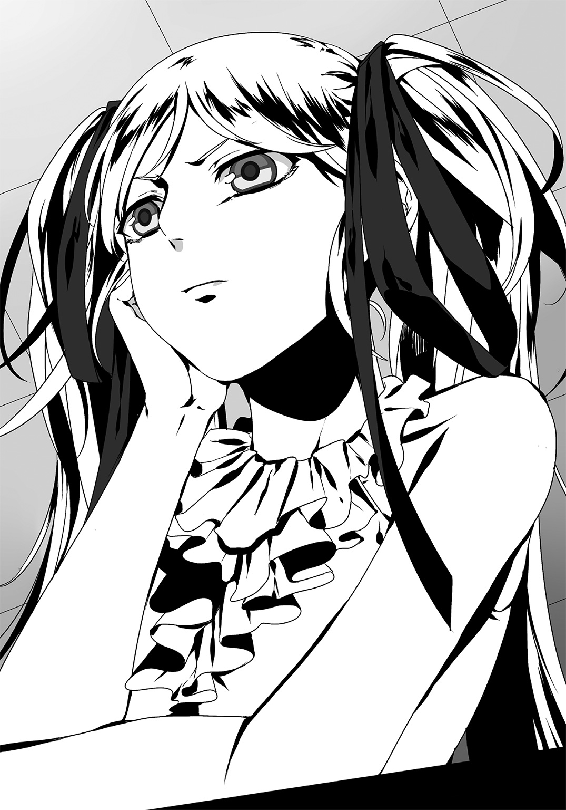
「......あんた、オタクアレルギーか何かか？ 尋常じゃない程にオタクが嫌いなんだな」
「アレルギー......。確かにそうかもな。吐き気がするんだよ、お前達と話していると。ああ嫌だ、大嫌いだ。なぜか分かるか？」
「さぁ。知りたくもないね」
「まぁそう言わず聞け。――珍妙な格好だの粘着質な喋り方だの、そんな問題じゃない。精神性だ。貴様らの『物質に対する異常な執着』、『好きなモノの為ならどんな犠牲も厭わない』、そんな生物として逸脱した精神性が気持ち悪いんだよ！ なぁ、頼むから早く終わらせてくれないか？ こんな事を続けていたら本当に病気にかかりそうだから！」
この毒舌攻撃は先輩の戦略だ。「甲村の怒りを誘い冷静さを奪った上で証言を得よう」という狙いを持った。甲村は心底ウンザリした表情で長く深いため息をつく。「こんな人間に何を言ってもムダだ」、そんな風情だ。かくいう俺も彼女の言葉がいちいち心に突き刺さっていた。
が、その挑発もこれで充分と踏んだのか。先輩は「質問を変えよう」と切り出した。
「――甲村。お前、エルガットとはどういう繫がりなんだ」
「は？」
「知らないのか？ 聖堂騎士エルガットとかいう、恥ずかしい名前の男だよ」
「いや知ってはいるさ。いるけど何？ そいつとは会ったこともないけど」
「......フム」
何を言っているんだコイツは、といった反応を見せる甲村。――確かにな。俺とお前は顔を合わせた経験などないからな。
先輩は口元に手をあて思考にふける。この問いには何も手がかりがないと踏んだのだろう。
やがて彼女は手を机に置き、真っ直ぐに甲村を見据えた。
「『東のサン・キュロット』」
「っ!?」
「うん、いい反応だな。エルガットの話題の時とは大違いだ」
「......」
「覚えがあるよな、この言葉に」
「ない」
「オイいい加減にしろ！ お前があの組織の一員だっていう情報は摑んでいるんだ。時間の無駄だからさっさとアジトの場所を吐け！ 一刻も早くこの密室から出たいんだよ私はっ！」
「知らない。何の話をしているんだか」
あぁ......駄目だ。もう無理だ。甲羅に閉じこもった亀。甲村はシラを切り通し続けるだろう。
今の反応は「知ってます」と言ってしまったようなモノだ。誰が見たってそう思う。もうコイツに残された道は「黙秘」という、すべての容疑者に等しく認められた権利を行使することだけだろう。
――だが。歯がゆさと苛立たしさで、俺は髪を乱暴に搔き上げた。
困る。それでは俺が困るんだ。『東のサン・キュロット』の根城が判明しなければ、ヤツらのテロを防ぐ手だてが失われてしまう。どうにかして、この男の口を割らなければならない。
でもその為には......。
俺の仕草から何かを感じ取ったか、先輩がこちらを向いた。
「維刀、お前からは何かあるか？」
――覚悟を決めろ。
――このままだと間に合わない。だから、もう出し惜しみは無しだ。
覚悟を決め俺は口を開く。
「ええ、あります。......――甲村さん。あんた、購入したフィギュアの総数が規定値を大きく超過していたよな？」
「次はそっちの話か。ああそうだ。それが何か」
「本来なら処罰の対象になる。だが、今はそんなことはどうでもいい」
「は？」
「購入した店舗への立ち入り調査を含め、俺は興味がない」
「おい維刀！ 聞き捨てならない発言だな。『こいつの違法行為を見逃す』と言っているように聞こえたが。ここは日本だぞ、司法取引なんてやっていない」
「そうは言っていません。いずれ追及されるべき事項だとは思っています。『今は』追及しない、そう言っているだけです」
「今は、......？ どういう事だ」
俺は答えない。そしてそのまま、レコーダーのスイッチを切った。
「!? お、おい維刀っ！ なぜ録音を止める！」
聞こえない。釈然としていない先輩には構わず、なおも俺は正面だけを見据える。
そして――まるで呪文のように。俺はあの言葉を呟いた。
「核は、どこだ」
時間が停止した。
小鳥の鳴き声が外から聞こえてくる。普段は聞こえない廊下の靴音すら鮮明に響く。周囲の音、空気の動き。そのひとつひとつが、いやに大きく耳に届いた。
言ってしまった。もう後には引き返せない。
甲村は......雰囲気が変わっている。
あの「知らない」と空惚けていた弱々しさをまるで察知できない。口は引き結ばれ、眼差しは鋭く俺を射貫いている。ついさっきまでとはまるで別人のように。
「――なぜ、知っている」
甲村はそう短く問う。
この反応でほぼ確信した。やはり『東のサン・キュロット』は核兵器を持っているのだ、と。
「その言葉は自白だと思っていいんだな、甲村」
「なぜ知っている、と聞いているんだ」
「実は俺もよく知らないんだ。情報をくれた人のことは。お前は知っているか？ レディ・パルム」
「あぁ......。彼女か。なるほど」
「知っているのか？」
「知っているも何も。彼女は由樹矢さんの妹だ。反政府への意識の違いで、活動は別々にやっているがな。だから本部の場所までは知らないハズだ」
「......そういう事か」
合点がいった。レディが「内部の人間でしか知り得ない情報」を持っていたのはそれが理由だったのだ。彼女がアジトまでは知らないところを見ると、甲村の「活動は別」という言葉にも納得できる。
「な......何の話なんだ、維刀？」
「身内だからこそ、暴挙を止めたい――、という事だったんだな。甲村、お前どこまで知っているんだ。この件について」
「さぁ」
「ちょ、ちょっと待て！ お前たちっ！」
机を叩く音がドン、ドン、と繰り返し響く。横を見れば先輩がシビレを切らせたのか、苛立たしげに俺を睨んでいた。
「何ですか先輩」
「核だとかレディだとか......さっきから一体なんの話をしている!?」
そういえばこの人を放置したままだったな。さっきまでは彼女にどう説明したらいいのか迷っていた。が、甲村がほぼ自白した今となっては勿体ぶった言い回しなんか必要ない。
「原子爆弾ですよ、先輩。『東のサン・キュロット』は原爆を所持しているんです」
「げ、原爆!? ......な、何でお前がそれを知っているんだ？ 維刀！」
「独自に摑んだ情報ですから。真偽が明確ではないので先輩には黙ってました。情報源もあまり信用できるモノではなかったので」
「そ、そんな......！」
「でも、いま甲村と話して確信しましたよ。『東のサン・キュロット』は間違いなく核武装しています。俺の得た情報は真実のようです、残念ながら」
甲村は眉根を寄せて俺たちを一瞥し、すぐに無表情へと戻った。俺の意見が当たっているとも外れているとも、その表情からは読み取れない。
「か、核だなんて......有り得ない......冗談じゃないぞ......！ 何で、そんな............っ!?」
事実かどうか、判断が付かずに混乱――。先輩の表情からはそんな感情がありありと見えた。そうだ。俺だって核なんか冗談じゃない。だから俺は絶対にアジトを聞き出さなければならないんだ。
できなければ......。日本で『リトルボーイ』『ファットマン』に続く三つ目の原爆が、殺戮の限りを尽くすのだから。
「――甲村。教えてくれ。『東のサン・キュロット』本部はどこだ」
「話すとでも思っているのか？」
「頼む」
「嫌だね。教えるわけがないだろ」
「大勢の命が掛かっているんだぞ」
「だろうな。だから何？ 知ったことじゃないな」
とりつく島もない。そんな態度の甲村にいささか腹が立ってきた。が、ここで激昂したところで状況は悪化するだけだ。
――深呼吸。冷静になって現状を考え直してみる。
思うに、彼は俺たちに対する疑念で黙り込んでいるように見えた。そりゃそうだ。こんな味方一人いない密室で詰問されているんだから。俺たちを問答無用の敵と認識するのも当然だ。
押して駄目。引いても駄目。――ならば、さらに押してみるか。
こちらへの警戒を解いてもらう必要を感じた俺は、出来る限りフランクに話しかけてみる。
「......あんたの小説、読んだ事あるよ」
「は？ ラノベだぞ？ 政府の、それも取り締まる側がそんなもの、読むハズない」
「読んでいるさ。『ひゅーじ！』『僕は彼女のドレイです』『メタル・ロック・ザ・キングダム』――。どれもこれも全巻しっかりとな」
「な！ 俺の代表作を全部......!? ほ、本当に読んでいるのか？」
「だからそう言ってるだろ。特に『ひゅーじ！』の五所川原タヱちゃんは最高だよ。人気投票で五十回も票を入れたのが懐かしい」
「あ、あれは......イラストのコガラシ銀二先生のデザインが良かっただけさ」
「そんな事ないさ。十二巻ラストの戦いで彼女が見せた決意には涙すら流したよ」
「い、維刀......？ お前............何を......？」
先刻から先輩の視線が痛い。が、フォローは後でいくらでも出来る。構っていられない。
「それにあんた、なかなかのコレクターだ。あの破壊されたフィギュアだってアカムラ原型師のモノだろ？ あの人は職人気質だから気に入った客にしかモノをおろさない。あんたはそのお眼鏡にかなったという訳だな。羨ましい限りさ」
「......お前、まるで焚書課の捜査官には見えないな」
「だろうな。自分でもそう思う」
苦笑しつつ、俺は床に視線を落とす。
「残ったフィギュアは傷が付かないように、できるだけ俺が回収しておいた。安心していい。――だから」
彼の肩を正面から摑んで、俺と同じ方向を向けた。
「なっ、何だ!?」
時間が止まったようなこの部屋で――。俺は目の前の男へと問う。
「あんたの作品はどれも、人への愛情や友情を感じられた。あとがきでも『読者のみなさんの楽しんでくれた顔が一番の宝物です』って書いていたよな？」
目を逸らす甲村。構わず俺は続ける。
「そんな宝物ですら、核の一発でみんな消えてしまうんだぞ？」
「そ、それは......」
「作品だってそうだ。あんたが作中で語った愛や友情は全部ウソだったのか？ タヱちゃんは優子との友情のため自分から身を引いた。『僕カノ』の有紀は愛する人を守る一生を送ると覚悟を決めた。『Ｍ．Ｌ．Ｋ』の主人公だって......一人の為に全世界を敵に回したじゃないか」
「......」
「あんたの作品では、みんな誰かのため、必死に生きていた。......でもあんた自身はどうだ」
「お、俺？」
「そうだ。事の重大さが分かっているのか？ ファンだけじゃない、多くの罪なき人々が殺されるんだぞ？ あんたはそれを望んでいるのか？ そんな冷酷なヤツだったのか、あんた」
「い、いやそれは......」
「挙げ句ファンの命ですら生け贄に捧げるのか。それでいいのかよ、甲村悟郎」
「......」
「答えろっ！ いいのかよそれでッ！」
「ッ！」
もう説得するという意識は俺にはなかった。
あるのは俺の本心、そのすべてをこの男にぶつけたいという思いだけ。作品から感じたこと、フィギュアへの羨望、そしてこの男が持つ罪の認識。――そのすべてを。
「失望させるな」
絞り出すように、吐き出していた。
「あんな情愛溢れる作品を書いた人が、何もかも消えて構わないと思っているなんて。思わせないでくれ――」
「お、思ってない！ そんな事は思っていないんだ、俺も！」
「何？」
「俺だって......本当は命まで奪うなんて......っ！」
声を荒げ、俺の詰問に反論する甲村。
しばしの沈黙――。やがて何を思ったのか。絞り出すように。
「あの人を、止めてくれ」
そう呟いた。顔には苦悶のシワが多く刻まれている。
「......驚いたな。急に態度が変わるなんて」
力なくフフッ、と。小説家は力ない笑みを零した。
「あんたになら止められる、そう思ったからさ......。政府への抵抗はともかく、核まで使うなんて俺も反対だったから」
「どういう事だ？ 『東のサン・キュロット』内部は強硬派と穏健派に分かれているのか？」
「ああ......そこを由樹矢さんが乗っ取ったんだよ、傭兵まで組み入れてきてな」
「な、何てヤツだよ......由樹矢って男は」
「結果、俺たち穏健派はあの人に追いやられた。行方不明になったヤツらだっている。由樹矢さんは異を唱える者には容赦しないんだよ。俺も核に反対していたからな......いずれあの人にはマークされただろうな」
「自分の目的のためには手段を選ばない、って事か......。組織も一枚岩じゃないんだな」
「とにかく俺は核の使用には組織内で一貫して反対を唱え続けてきた。......まぁ、ムダだったけど。あの人の......由樹矢さんの決意は相当だったからな」
語る甲村の口ぶりはどこか諦観を感じさせた。自分の意見が通らなかった事への不満を思い起こしているのだろうか。
――と。
「お、......おかしい」
俺の隣から。呻くような唸るような、苦しげな声が聞こえた。
「先輩？」
「おかしい......！ おかしいぞお前たちオタクは！ な、なぜ核なんて持ち出す必要があるんだ!? どうしてそこまでする!? たかがアニメだのマンガだのの為にっ！」
理解できないのが苦しいのか、オタクごときに悩まされるのが嫌なのか。先輩の表情は混乱というよりは苦悶を滲ませるものだった。
「なぜ」――か。今さらな話題だな。この人とは何を語っても平行線なのに。
だが甲村はそう思っていないらしく、先輩へ「分からないのか？」と問うた。
「お前たち政府のせいさ。オタクをこんな立場に追いやったのは誰だ？」
「お、お前たち自身じゃないか！ オタクが『金曜の模倣者』事件さえ起こさなければこんな社会になっていない！」
「でも限度ってモンがあるよな。抑圧もやりすぎればその分、反発力としての強さを増すんだ。あんたらはその辺をまったく分かっていないよ」
「わ、私たちが叩きすぎたから......だと？ ――ば、バカにするな！」
責任転嫁に激昂した先輩は机を強く叩いた。
「そんなのは......言い訳だっ！」
「だろうね。でも言葉で分かってくれるなら楽だけど、無理なんだろ？ どうせ」
「無理に決まっているだろう！ 何でお前たちを理解しなくてはならない!? オタクは規制されるべきなんだ、あの悲劇を繰り返さないためにもッ！」
「――ほら、見てみろよ。これが現代社会の現実さ」
甲村は苦笑し、俺に向かって手を広げてみせた。
「分かるだろう？ もう無理なんだよ、言葉だけじゃ。この国の人間はもう、俺たちの言葉に耳など貸さないんだ」
分かり切った事だった。もう社会はオタクの言い分なんか相手にしない。
故に彼らは核攻撃という実力行使に打って出たのだ。言葉が効かないのならば力で打開する他ない――。そう考えるのも仕方がないだろう。俺自身だってオタク挙げをやっている警官を狩り続けていた。武力行為を批判できたガラじゃないのは分かっている。
だからって。
「......だからって、無関係な人間の命を奪うのか？」
「無関係じゃないさ。俺たちの声を無視した、それだけで関係者だよ。聞いてくれたら変わったかも知れない。この国が変わったかも知れない。......だがもう遅い」
手を組む甲村。それをテーブルの上に持ってきて、アゴを載せる。
いつもなら「碇長官みたい」とでも言うところだろうが、今はそんな余裕もない。
「あの人は、由樹矢さんはやるぞ絶対に。核で日本を変えるつもりだ」
最悪の宣告だ。耳を塞ぎたくなってくる。聖書の黙示録の方がネタをボカされているだけまだマシといえる。
この男は、甲村は。今ハッキリと言った。「核で日本を変える」と。
どうすればいいんだ――。俺ひとりで出来ることなんて限界がある。「銃一丁で一個大隊の戦力をも超える」と評価された男でさえソレだ。社会や組織に相対するとき、個人はあまりにも無力なのだと痛感する。
どれだけ答えの出ない自問を繰り返していたのだろう。
「そんな顔をしないでくれよ」
という甲村の言葉で、我に返った。
「......そんなに酷い顔をしていたか、俺」
「していたな」
「核保有が事実だと知って平常心を保てる人間がいるか？」
「いないだろう。俺も知った時は必死に反論した」
そう吐き捨てて、一息。甲村はどこか覚悟を決めるように、身を乗り出した。
「――港湾地区。その奥にある廃棄倉庫群、１０５番倉庫だ。そこに由樹矢さんは居る」
「え」
我が耳を疑った。一番聞きたかった言葉。それが突然、ラーメンの出前でも頼むかのように甲村の口から飛び出したのだから。
「何してる。早く行け！」
「っ！ ......あ」
「本当は仲間を売りたくない。あんたを信じたから教えるんだ。由樹矢さんを止めろ、絶対」
彼と目が合った。その瞳からは俺に対する信頼、そして「こいつならできる」という希望が強く読み取れた。俺は喜びを隠しきれない。口元が緩んだ。
もう言葉はいらない。俺は黙って頷く。
「行きましょう、先輩」
「あ」
時間が惜しい。茫然自失としている先輩の腕を引っ張り、俺たちは取調べ室を後にした。
廊下を歩きつつ、次にやるべき事を口にしてゆく。
「まず移動手段。俺たちは免許がないから玲香室長に車を回してもらいましょう。他の課員も応援に欲しいが、確か今日は大がかりな強制捜査で出払ってる」
「......」
「それに甲村一人の裏が取れない証言だけで、何十人もの捜査官を動かすワケにはいかない。だからまずは俺、先輩、玲香さんの三人で現場に向かいます。応援は後から来るのを期待しましょう。いいですね、先輩。......――先輩？」
返事が返ってこない。不審に思って先輩を覗くと、暗い表情で俺を睨んでいた。
「......維刀、どういう事だ」
「何がです」
「取調べで甲村の本を読んだと言っていたじゃないか。アイツが書いていたのはライトノベルだぞ。さっきのお前の言葉が本当なら、......残念だが、私はオマエを......」
「ああアレ！ ウソですよ。決まってるじゃないですか！」
きょとんとする先輩。
「事前に調べておいたんですよ。アイツの著作を読んだことにしておけば警戒を解いてくれると思って。だから口にしていた事ほとんどが良く分かっていません。他人の受け売りなんで」
「あ、......、そ、そうなのか！ は、ははは......」
変貌は一瞬だった。先輩の表情が目に見えて明るくなった。
そんなに俺が裏切り者じゃないと分かって嬉しいか。まぁ実際は裏切り者だし、「ウソです」と言ったのがウソなんだが。
「行きましょう先輩。ヤツらを止めるんです」
だがこの言葉に噓はない。決意とともに早足で廊下を進んでゆく。
遠くから瞬く一筋の赤光――航路信号。
それが夕闇を切り取るように大きく円軌道を描いている。
俺は左方へと目を向けた。周囲に立ち並ぶ倉庫からは生命を感じ取ることができない。廃棄された倉庫なのだから当然だ。無機質で背の低いコンクリート・ジャングル。壁面が受けた紅い光がまるで塗りつけられた血液のように不気味に映っている。
その只中を、黒いセダンは切り裂くように走る。
「もうすぐ着くわよー。準備していおいて」
車の中。
運転しながらスタンバイを命じる玲香さん。俺と先輩は後部座席でミラー越しに頷いた。
港湾地区、廃棄倉庫群。１０５番倉庫。甲村の告げた『東のサン・キュロット』アジトの場所。それが俺たちが今向かっている目的地だ。周囲は既に闇の中にあった。
銃を取り出し、装備確認をしながら奏手先輩が呟く。
「......やはり、というか何というか。ヤツ一人の証言で動かせるのはこの人数が限界か」
「仕方ないですよ。証拠がないんですから」
俺の予想どおり、焚書課として動かせるのは俺、先輩、そして玲香さんの三名だけだった。
「現状では甲村の証言はタレコミレベル。確実性がないため緊急人員を割けない」という室長判断が下されたからだ。核の情報についても玲香さんは拡散を差し止めており、彼女より上位セキュリティ・クリアランス持ちの連中にも伝わっていない。核武装の証拠さえ揃えばすぐにでも動かせるのだろう。が、公にしたくない俺としてはこのほうが助かる。
「でも実際、核を持っていたら大変なことよねー。まぁ現状では証拠も何もないし、ウソであってほしいわねー」
ぽわわんとしたいつもの口調で玲香さんがそう口にした。
先刻、署で核のことを告げた時も彼女の様子は変わらなかった。相当に強い心臓を持っているのか、それとも核なんて無いと確信しているのか――。ルームミラーに映るその表情からは何も読み取れない。
ミラー越しに玲香さんと目が合うと、彼女は微笑を返した。
「さっき連絡が入ってね。別チームの強制捜査が終わったらしいわ。状況によってはこっちにくるらしいから、二人とも安心してねー」
結局は応援が来るということか。正直、ありがたいのとありがた迷惑なのとが半々だった。
緊張感が増してゆく。目的地はもうすぐだ。
遠くの前方へと目を向けると――見えた。『１０５』。あれだ。
「この辺りに停めるわね」
キキッ、とブレーキの高音が響き、車が停止。感づかれることを避けるためだろう、玲香さんは１０５番倉庫から少し離れた場所にこの車を停車した。
俺は車から降りて周囲を確認する。
港特有の強風に髪が揺れた。台風の接近のせいで強さが増している。港湾地区である故か、こすりつけるような波の音がかすかに鼓膜を叩く。ここをアジトに選んだのは、いざとなればこの海路を逃走ルートに使えるからだろう。武器の密輸に関しても陸上移動というプロセスを飛ばせる。あらゆる状況を想定した位置取りだ、かなり考えられている。
先輩もコンクリートの上に立って得心したように頷いていた。
「廃棄倉庫の密集地帯とは考えたな。治安が悪いから誰も近寄らない上に、銃声すら誰も気付かない。訓練にもうってつけの場所だ。――そう思わないか、維刀」
「ん、......え、あ。はい？ 何ですか？」
「どうした、上の空で。なにか考えていたのか？」
「......」
確かに考えていた。――「マズい」、そう思っていたのだ。
テロを目論んでいるとはいえ、『東のサン・キュロット』は目下対政府の最大勢力。それが壊滅してしまえば、すなわち「政府に反抗する御旗を失う」ことを意味する。他のオタク連中の反抗意識すら薄れてゆくだろう。法案廃絶が遠のいてしまうのは必死だ。
――俺の目的は組織の壊滅ではない。説得だ。平和裏に連中の蜂起を思いとどまらせないと。
そう決意した俺は、先輩に向き直った。
「......先輩。頼みがあります」
「ん。改まってどうした」
「俺一人だけで突入させてください」
「お前に？」
意外な申し出だったのか、先輩は一瞬目を大きく見開いた。だがそれも一瞬の事、すぐに取り澄ましたいつもの仏頂面に戻る。
「......今回のように、私たちがテロ疑惑のある組織へ立ち入り調査を行うのは初めての事態だ。それに認めたくはないが、私は女――戦闘に関してはそれほど自信がない」
だろうな。あんたの胸のＩＤカードは『戦闘：３』と表示しているんだから。
「――でも維刀、それはお前も同じだ。『戦闘：０』の上、お前だってテロリストと対峙した経験は無いだろう。言葉だけでどうにかできるのか？」
「大丈夫です。信じてください。必ずヤツらを食い止めてみせます」
「無理だ。だからここは応援をまず待ってから......、」
「いいんじゃないかしら。維刀くん、あなたの好きにやってみなさーい」
「ふぇ!? し、室長!?」
先輩は素っ頓狂な声を張り上げた。
車から降りた玲香さん。彼女が俺の単独突入を認める発言をしたからだ。
「維刀くんに任せて大丈夫よ。彼なら心配ないわ」
「で、ですが！」
「彼に何かあれば私が全責任を負います。あなたは維刀くんに『ゴー』の許可を与えればいいだけ。さ、早く」
有無を言わせぬ上位指示に戸惑いを見せる奏手先輩。俺の力を彼女は知らないのだ、無理もないことだろう。表情が迷いに覆われている。
が。それも徐々に「諦め」に近いものへと変わっていった。彼女は嘆息一つした。
「......。いいだろう、やってみろ」
よしクリア、お墨付きの発行だ。しかし喜ぶ間もなく先輩は「だが」と続けた。
「......二十分だ。二十分経って戻ってこなかった場合は、私たちも突入するぞ。焚書課にもメンツがあるからな。それだけ掛かって得るものが皆無など、室長まで笑いものにされてしまう。リミットを越えたら即突入する。いいな？」
「二十分ですね。それだけあれば充分ですよ。......あぁ、それと」
「何だ？」
「多分これから銃声が響きますけど、二十分経つまで何もしないでください。――行きます」
話している時間が惜しい。俺は即座に車から離れ、廃棄倉庫へとその歩を進めていった。手に握っているのは銃、そして白いコート――パラディンの装備だ。先輩と室長の視線から服だけを隠しつつ、俺は進む。
一歩、また一歩。廃棄倉庫へと俺はコンクリートを踏みしめてゆく。
後ろから先輩と玲香さんの声が聞こえてきた。
「......――室長、大丈夫でしょうか？ ああして送り出したのはいいですが、もし戦闘行為になれば、維刀は生きて戻って来られませんよ？」
「大丈夫よ、彼なら」
「そ、その自信はいったい......？」
「あぁ、あなたには言ってなかったわよね。なぜ彼の戦闘評価が０なのか。実は――......」
車から離れ、徐々に二人の声も聞こえなくなった。
ひとつ、ふたつと。立ち並ぶ廃棄倉庫の脇を通り過ぎてゆく。
やがて目の前に現れたのはコンクリ製の塀。俺は右に迂回し、その塀の内部へと進入した。周りに人の気配は無い。ついでに先輩たちの視線も遮ったことで消滅した。
周囲を支配するのは、静寂。まるですべての生物が死に絶えてしまったかのようだ。
よし。この辺りでいいだろう。
そう判断した俺はジャケットを脱ぎ捨て、手元のコートに袖を通した。次いで眼鏡を装着し、仕上げとばかりにアップの前髪を引っ摑んでバサリ、と下ろす。
途端、超絶即席・聖堂騎士エルガットが完成した。下半身は黒だが問題ないだろう。
――そう。今から俺は焚書課捜査官としてでなく、オタクの代表として彼らと対話する。
『東のサン・キュロット』は焚書課の人間が出向いたところで、耳を貸す連中ではない。だから俺はこの格好で、この意志でアジトへと乗り込み、彼らのテロを諫めるつもりだった。同じ立場の人間が放つ言葉ならば、少なくとも対話くらいは期待できる。
止めてみせる。行こう。
そう決意を新たにした途端、俺は目的の１０５倉庫の入り口前に辿り着いていたことに気付いた。思考を巡らせていると、いつの間にやらかなり歩いていたらしい。錆び付いたシャッターに手を掛ける。
と。
「おい。止まれ」
途端、一人の男に行動を遮られた。
どこから出てきたのだろう。男は角刈りの体育会系で、軍用戦闘服に似た砂色の服を身にまとっていた。
「こんばんは。今日は嵐が来るらしいぞ。中に入ったほうが良いんじゃないか？」
「何の用だコスプレ野郎。ここは私有地だぞ」
チンタラやってる時間が惜しい。先輩が甲村に使った手でいくか。
「『東のサン・キュロット』」
「っ!?」
「その反応、当たりか。......やはり由樹矢正はここに居るらしいな。会わせてもらう」
「......フン。なるほど。それが目的か」
黙していると、呼んでもいないのに次々と他の男たちが建物の陰から湧いて出てきた。
二人、三人、......総勢八名。あっという間に俺は周りを囲まれた。
「......何者だ、貴様」
「嵐だよ。反逆者の根城を無遠慮に吹き荒ぶ暴風......聖堂騎士・エルガットだ」
「気取り倒しやがって......！ この人数相手にナメてんのか!?」
面倒だ。与えられた時間は二十分。こいつらを説得している暇はない。
俺はおもむろに銃を取り出した。銃身に刻まれたラインが紫色に輝き、発砲が可能であることを告げてくる。
「悪いが時間がない。押し通るぞ」
「通すかよ！」
「無駄だ」
コートが台風仕込みの潮風でバサリ、と揺れた。
戦闘、開始――。
「は、はあああぁあ!? 『ケタが足りなかった』から!?」
声の裏返った叫び。それが人気のない港湾に響く。
維刀を見送った後に残された二名。奏手イリナと一ノ瀬玲香。
叫んだのは私、奏手イリナであった。
「何の冗談だ......維刀の戦闘評価は『10』と表示するところ、二ケタ目が無いから『０』になっている!? そんなバカげた話がありますか！」
「そーなのよねぇ。このＩＤカード、評価値が一ケタしか表示できないのよ」
「知っています！ で、でもソレは......！」
「そう。本来、能力は五段階評価だから、二ケタ目なんて必要ない」
「......せ、戦闘評価が５である意味を室長はご存知ですよね？」
「もちろん。一個大隊に匹敵する能力を持つ、って評価でしょう？」
「じ、じゃあ戦闘：10のあいつはその単純二倍、『二個大隊と同等の戦力を有する』という評価になるんですよ!? 二個大隊といえば約二千人だ！」
「そういう事になるわねー。と言うか、そもそも５が付く時点で規格外なのよ。本来はイリナちゃんの『頭脳：５』だって充分バケモノじみた評価だし」
トン、と一ノ瀬室長は人差し指で眉間を叩いた。
「――でも、彼はそんなあなたをも超える。彼の戦闘評価は『５段階評価で10』――。日本語としておかしいけれど、それが事実なの」
「......規格外と評するのも生ぬるい戦闘能力を有している、という事ですか？」
呆然と問う私に、悠然と室長は頷いた。
「あの子は焚書課最強の戦闘要員。連中がこういったテロ紛いの行為に打って出た場合を想定して編入されたってことなの。......まぁつまりアレね。有事の際にワンマンアーミーとして敵を鎮圧可能な、言わばジョーカーってヤツなのかしら」
「ど、どうして私には教えてくれなかったんですか？」
「だから言ったじゃない、彼はジョーカー。それによほどの事態にならない限りは伏せておきたいのよ、この事は。課でも知っている人間はごく少数よ。あまり大っぴらにすると、社会的問題どころか国際的問題も発生するから」
「......？ それは......どういう」
「それに維刀くんもあまりこの件に触れてほしくないみたいだし。彼も過去にいろいろあってね......」
淡々と答える室長。噓とは思えなかった。
私は思わず口元を押さえる。何を口にすべきか分からないのだ、語られた事柄に。
維刀臥人の戦闘力、彼を引き入れた焚書課の意図――。どれもが自分の予想、その斜め上を行っていた。
「......私、維刀とコンビを組んでましたけど、今回初めて知りました」
「それだけ今までは平和だったってことじゃない？ 彼が戦う必要がなかったんだから。――でも、今回は初めて彼が自分から突入を申し出た。それだけ事態は逼迫していると維刀くんは判断しているのよ。確かに武装テロなんて今まで無かったしねぇー」
「情けない」。そう思う。まるで部下の事を知ろうとしていなかったのだから。数値でしか人を見ていなかった自分の落ち度だった。
事ここに至り確信する。こと戦闘において維刀臥人は規格外なのだと。
だが。
「......だ、だからって」
「ん？」
「だからといって閉鎖空間で多人数を相手に戦えるんですか!? それにヤツらは銃を持っている可能性が高い！ ......無茶だ！ 本当はアイツが向かった後、すぐにでも私は突入するつもりだったんですよ!?」
「あー、その必要は無いでしょうね。集団相手でも全部あの子一人で片付けられるわよ。――イリナちゃん、あなた『モヴィア共和国内戦』を知ってる？」
「ぅえ？」
突然の問いに虚を衝かれてしまった。少しの逡巡の後、私は頷いた。
「......二年前に東欧で発生したクーデターですよね。官僚を親族で固め、軍事行動で市民を抑圧していた大統領が、官邸をたった十名の反乱兵に占拠され退陣署名させられたという。今では首都の名を取って『ゴルニアの奇跡』とその反乱は呼ばれています」
「わー。さすがは瞬間記憶能力者、しっかり覚えているのねー」
「茶化さないでください。......そのモヴィア内戦がどう維刀に繫がるんですか」
「あなたが今説明した内容ね。一部は事実と違うのよ」
「え。公式発表と真実は違うということですか？ どの部分です？」
「一人よ。十人の反乱兵じゃない。たった一人の少年が大統領官邸を制圧したの」
「......何です、そのどこからどう聞いてもウソとしか思えないアホな歴史は」
「そう思うわよねー。まぁモヴィアでも『少年がひとりで官邸を制圧したなんて誰も信じない』って事で、話をちょっとマイルドに味付けして十名の兵士、ってことになったんだけどねー。でも事実よ。裏の筋ではワリと有名な話よコレ。――時々、本人にその話を振ると『やめてくださいよ』って拒否されちゃうんだけどねー」
「......まさか。その官邸を墜とした少年、って」
「そう。当時中学生だった維刀くん」
開いた口が塞がらない。そのまま「やっほー」と叫んでみようかとすら思った。
「室長はウソをついている」と疑っているからではない。むしろ「室長はくだらないウソをついたりしない」、それが分かっているから。
維刀が、たった一人で内戦を終結させた......？
「それに彼、銃を持っていったんでしょ？ ......ひとつ教えてあげるわ。あの子が課に入る前、モヴィアで呼ばれていた二つ名を」
「二つ名？」
頷いた室長の表情は、どこか楽しげでさえあった。
彼女は微笑を湛えたまま、手を銃の形にして腕を前方へ向ける。
やがて。愉快そうに歪めた口元から、映画のタイトルを告げるようにその名を呟いた。
「『バレット・ダンサー』」。
その途端。
銃声が数発、維刀の向かった先から響いた。
「――遅い」
思わずそう呟いてしまう程の余裕が、俺にはあった。
彼らが持つ武器は様々だ。バット、ナイフ、鉄パイプ、......拳銃すらも見て取れた。港の廃棄倉庫が密集するここならば、銃声を聞きつけられないという判断だろう。その判断は確かに正解といえる。
俺に通じる、通じないは別として。
「死ねエああああああああああアッッッ！」
下品な叫びが響いた。俺の背後で彼らの一人が銃口を向けたのだ。
見るまでも無い――。そう判断した俺は身体を三歩ほど横にズラし、射線から外れた。そして間髪容れず後方へノールックの裏拳。手の甲には確かな感触があった。
鼻っ柱を叩かれた男は拳銃を撃つことなく、その場に崩れ落ちる。まず一人。
「っ!? てめえええぇッ！」
続く男も同じ。声を荒げ、正面から俺にバットを振り下ろそうとしている。......だが。
「手元がガラ空きだぞ」
バットを握る手に蹴撃。得物を落とした男は狼狽し、俺はその頭部へと銃口を向けた。
刹那、――発砲。鋭い銃声を伴ってゴム弾は発射された。銃弾は狙い過たず眉間に命中。人体急所だ。男はやはり立っていられずうつ伏せに倒れ込んだ。
「な、何だコイツ......！」
「ひるむなッ！ 向こうはたった一人だ！」
「そ、そうだアッ！ こちらの人数は倍以上！ 全員でかかれば何も問題はないッ！」
「さっさとブッ倒れろッ！」
今度は残存勢力が一斉に襲いかかってきた。
数にして......六人か。だが何人だろうと関係無い。
「無駄だ」
続けて発砲。拳銃を抜いた人間だけに限定し、三連発。
弾丸は吸い込まれるように命中、狙い通り彼らは倒れ込んだ。――三名、沈黙。
そして次は回避――。バット、ナイフなどの近接装備の攻撃を、左右の身体捌きだけで回避してゆく。そしてすれ違いざまのカウンター。作業の要領で彼らに銃弾を撃ち込み、無力化を狙う。
四人目。――バットを振り回す男の延髄に発砲。カエルのような断末魔を漏らした。
五人目。――直線的な軌道のナイフを回避し、そのままこめかみへ銃撃。
六人目。――テレフォンパンチ。もう避けるまでもない。額へゴム弾をお見舞いした。
ドサリ、ドサリ、ドサリと。流れ作業のように次々、彼らは倒れ込んでゆく。
――制圧、完了。
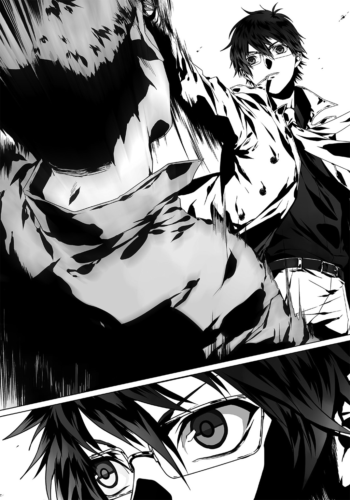
もう行く手を遮る障害は存在しない。俺は片手でシャッターを上げた。
ギギギ、と鉄錆のこすれる嫌な音が響く。一歩目を倉庫に差し入れると、重厚な男の声が俺の進行を妨げるかのように反響した。
「ようこそ、白亜の聖堂騎士」
「っ！」
途端、前方に立ちはだかる男を視認。更なる尖兵かと思いとっさに銃を向けようとしたが、その必要はない事がすぐに分かった。彼が写真の男だったからだ。
「由樹矢正先生......ですね」
返答として男は俺に頷いた。
「キミの噂は聞いているよ。個人でオタクの文化を守ろうとしている、と。私が予想していたよりも優男だがな」
薄暗く広い倉庫内。だが左右には積まれたコンテナが立ち並んでいるため、その全容を知ることは出来ない。コンテナを積み上げて造られた『塀』は入り口から一直線に続き、倉庫の中ごろまで達すると、ブツリと途切れている。本来ならばその中間地点で倉庫内の視界が開けるハズなのだろうが......むしろそこは暑苦しく見えた。
砂色の戦闘服を着た男たちが横一列にズラリと立ち並んでいたからだ。
そしてその真っ直中で、由樹矢正は表情を変えず直立している。
――由樹矢正。
俺も彼の作品をいくつか読んだことがあった。緻密でありながら大胆なコマ割りで展開される軍事サスペンス『戦艦ポチョムキン再び』は毎週楽しみにしていた。だが、彼はその作品を連載中「日本の現状を変えてゆきたい」と言い残し休載。作品を完結させずに行方をくらましたと風の噂に聞いた覚えがある。
つまり......その休載期間に核武装の準備をしていたという事か。連載再開を心待ちにしていた俺はまるでピエロだな。
「何はともあれ、良く来てくれた。我々はキミを歓迎しよう」
「......その男たちは誰だ。『東のサン・キュロット』の過激派か？」
「半分は正解だな。もう半分は傭兵だよ、金で動く有用な男たちだ」
彼の声は床や空間をつよく震わせていた。俺もその声に圧倒されそうになる。
上着から覗く彼の腕は丸太のように太い。下半身も上半身同様、筋肉のせいで大きく膨張していた。写真でも思ったが、まるで漫画家のようには見えない。元自衛官である彼の経歴を鑑みれば不自然でもないが。
眉一つ微動だにせぬ無表情のまま、由樹矢正は口だけを動かしている。
「そういえば外を守っていた男たちはどうしたんだね。キミが排除したのか」
「......ああ。俺がノしたよ、全員な。アイツら随分とガラが悪いな。軍事訓練より先に企業研修でも受けさせたほうがいいんじゃないか？ まずは社会常識を学んでこいよ」
「っ、キサマ！」
俺の言葉に戦闘服の一人が声を荒げる。が、由樹矢はそれを手を挙げて止めた。
「......それは大変失礼をした。次に君がここへ来た時には教育を徹底しておくと約束しよう」
「次？ 次はない」
「ない事はないさ。キミはいずれ、再びこの倉庫に足を運ぶ」
「ないな。今、ここで全部終わらせる。このアジトに来ることは、もう二度とない」
スゥ、と。俺は大きく息を吸い込んだ。
瞳を閉じると、倉庫の壁が強風でガタガタ鳴っているのが耳に届く。雨も降り始めたのだろうか、水滴が落ちる音も聞こえた。
白亜と漆黒はコンテナの通路で真正面から対峙する。
「時間がない、単刀直入に言う。核を渡せ」
「こちらもだ、単刀直入に言う。渡せんな」
両者沈黙。次いで、両者硬直――。
何が面白いのか。由樹矢は右の頰をヒクつかせ、ニヤリと笑った。
この場を訪れて初めて彼が笑っているところを目にした。底知れぬ、何とも不気味な笑い方だ。まるで心がソックリ見透かされているようにさえ感じる。
「――なぁ、エルガット。キミは疑問に思わなかったか？ ここに至るまでの道のりさ。キミは特定の相手から情報を得、この倉庫までの道を独自に探し出したつもりなのだろう。だがそれは、些か不自然ではなかっただろうか」
由樹矢の笑いが徐々に拡大してゆく。
「......何が言いたい」
「都合よく核の情報と名簿を持って現れた女。その名簿に記された男。彼を問いつめたらアジトの位置を吐いた。よって核兵器を奪うためここまでやってきた。......これまでの流れはそんなところか？」
「っ!? なぜ、それを!?」
「簡単だよ。『キミはここまで誘導されていた』――そういうことだ」
そう言うと、由樹矢はアゴを左にしゃくった。
途端。カツン、カツゥ......ゥンと。ヒールが床を叩く音が鋭く響く。
やがて数秒の後。コンテナの陰から朱を纏った女性がゆっくりと姿を見せた。
「れ、レディ！」
「......エルガット。ごめんなさい」
曇った表情で、彼女は俺へ謝罪の言葉を口にした。
バーを訪れた時の覇気や聡明さ、刃物のように冴えた視線はそこにはない。自責の念や悔しさ、そんな感情だけが満ちる眼差しを俺へと向けている。
「彼女の情報がきっかけとなり、ここまで辿り着いたのだろう？」
なるほど――。何もかもこの男に操られていた。そういう事か。
「くくくっ。何をもって彼女を信用したのやら。私から送り込まれたメッセンジャーという可能性すら、キミは疑わなかったのかね？」
「に、兄さんっ！」
「どうした妹よ。事実だろう？ お前が情報をもたらした事で彼はここまで私を追えたのだ。素晴らしい働きを見せてくれたな。よくやったぞ」
彼女の労を労う、というよりは挑発するような口調で由樹矢は笑う。
目線だけを俺に向けるレディ。
「あ、あの......私......！ 電話で突然こ、ここに呼ばれて......っ！」
彼女は完全に自分を見失っていた。視線が定まらず、俺と由樹矢をキョロキョロと往復している。もう俺に弁解するだけ無駄だと思っているのだろうか。
ここで彼女に掛ける言葉など一つしかない。
「分かってるよレディ。俺を騙すつもりなんて無かったんだろう？」
「!? ど、どうしてそれを......？」
「あなたは騙された、......というより、この男に操られていたに過ぎない。――だろ？」
ほう、と。まるで出来のいい子供に驚くような反応を由樹矢は見せた。
「......いいえ。自覚がなかったとはいえ、私があなたを導いてしまったのは事実だわ。ごめんなさい」
「気にする必要はないですよ。この男が核を持っている、それは事実なんだから」
そうだ。レディがその事実を伝えてくれたから、俺は核の危機が迫っていると知れた。感謝しこそすれ、彼女を恨む理由なんて少しもない。
「まぁ、考えてみれば確かにおかしいな――。甲村が逮捕された次の日、それが引き金のようにレディが動いたんだから。アイツの逮捕も織り込み済み......いや、というよりは甲村の逮捕こそが、今回のスタートになっているのか」
「わ、私は......甲村の逮捕は知らなかった。彼がリストに載っていたのは知っていたけど」
「でしょうね。組織の構成員名簿は、誰から入手したんですか？」
「『東のサン・キュロット』メンバーの一人よ。彼に『お兄さんの暴走を止めてくれ』と言われて。あの演説動画のデータもその時に渡されたわ。......まさか彼は」
「ええ、この男の指示で動いていたんでしょうね。あなたと俺を引き合わせるために。――どうだ、由樹矢正？ 大方当たってるだろ？」
由樹矢は動かない。俺の問いに否定も肯定もしない。アジトを知らないはずのレディがここに居るのも、この男自ら呼び出したせいだ。
「この場にレディを引きずり出して俺と彼女の対立でも狙ったのか？ だとしたら残念だったな。会って間もないが......俺は彼女を信頼している。何を企んだって無駄だ」
怒りを含んだ目遣いで由樹矢を睨む。――いや、おそらく彼は何とも思っていない。由樹矢は妹を騙した負い目や罪の意識など、まるで感じてはいない。
何故なら。この男は声をあげて笑い始めたのだから。
「ッくくくくくくく」
地の底から轟くような、低い冷笑。それが段階的に大きくなってゆく。
やがて――パチ、パチ、パチと。
対峙する相手を心底コケにする安っぽい拍手で、俺の推察を賞賛する。
「ご明察だ！ よく分かったな！ 私はキミたちの決裂を期待していたのだがな！ くくっ」
「悪趣味はそこまでにしろ。核はどこにある。まさか本当は持っていないのか？」
「あるさ。ここに至るまで多くのウソをついたが、これだけは真実だ」
「ならさっさとよこせ、こっちは時間がない」
「ッくくくくく......！ よこせ？ それは本気で言っているのか？ 私はキミをここまで誘導したんだぞ？ 核をここに置いたままにしておくと思うか？ それを回収するのが目的であるキミを待ちかまえていたというのに？」
「クソ......ッ！ 既に移動済みか！」
だとすれば今日ここで回収するのはもう不可能だ。この男からありかを聞き出して、『東のサン・キュロット』に先んじて保管場所に向かう他ない。
時間が惜しい。もう四分も経過してしまった。懐にある銃を取り出そうと俺は右手を伸ばす。だが、由樹矢は鼻でフンと嘲笑し、その動作を中断させた。
「まぁ待ちたまえ。キミは性急すぎだ、私の目的も少しは遂げさせてくれ。キミをここに呼んだからには、一度聞いておきたいことがあるんだよ」
「何の話だ」
「オタクを取り締まるのはどんな気持ちなんだね？」
「ッ、――っ！」
心臓を鷲づかみにされる。そんな感じがした。
血液の温度も一瞬にして二度ほど低下したようにさえ錯覚した。
「ん？ どうした聖堂騎士。急にダンマリか？」
この男は知っている。俺が焚書課の捜査官だと、知っている――。
「俺は彼女を信頼している、......か。いい言葉だ。だが彼女はどうかな？ キミの表の顔を知ってしまった後も、果たしてエルガットという男を信頼してくれるだろうか？」
「......」
「エ、エルガット......？ どういう......意味？」
レディの表情を横目で窺い見る。彼女は何を言っているのか分からない、そんな顔をしていた。俺は今どんな顔をしているのだろう。考えたくもなかった。
「なぁエルガット。答えてくれ。正体を知った彼女はキミを信じると思うか？」
「そ、それは......」
「どうなんだね。ハッキリ答えたまえ。――焚書課捜査官、維刀臥人くん」
言葉の引き金が引かれた。発射された『真実』という弾丸が、他ならぬ俺の心臓を貫き、抉る。そんなふうに感じた。
俺は顔を上げることが出来なかった。床を睨んだまま、声だけが耳に届く。
「維刀......臥人？」
レディの声は震えていた。
「う、......噓。噓よ」
「噓ではない。彼は焚書課に所属する高校生、維刀臥人だ」
「そんな。維刀臥人なんて。彼が、エルガットが。噓」
「そして二年前、モヴィア内戦をたったひとりで終結させた『伝説の少年』さ」
「モヴィア？ ......――彼が？ そんな。どうして」
「驚いているな。知っているか？ 彼はキミの通う学校に席を置いている。まぁ知っているだろうな。会話したことも一度や二度あるんじゃないかね？ 椰子」
え......？ 椰子？
椰子、って。――そうか、そういう事か。
彼女の顔を思い出して納得した。理解した。藍がレディから顔を隠していた理由も。
......何て質の悪い冗談だよ。
学校では対立していた俺と彼女、維刀臥人と棗椰子。その二人が水面下では協力し合って、この男を追っていたなんて。しかも二人はまったく相手の正体を分かっていなかったとは。
「その様子。二人とも互いに気付いていなかったのか......。やれやれだ」
カツン、カツン。歩を進める乾いた音が響く。顔を上げると由樹矢がこのコンテナ・ロードの中間まで歩いてきていた。
「何故知っている、といった顔だな」
さっきと正反対。今度は俺が彼の問いに沈黙を返してしまう。
「簡単だ。我が組織に、二年前のキミをよく知っている人間がいてね。彼がキミに対してそれはそれはご執心で。頼まれて探し出したらキミのもう一つの所属がヒットした」
「......バラすつもりか？ 好きにしろ。核を奪うという俺の目的に変わりはない」
「安心しろ。この件を公表するつもりはない。フェアではない論理戦は私の好むところではないからな。それに私がここまでキミを誘い出したのには理由がある」
「理由......？」
「我々の仲間にならないか、エルガット」
そして由樹矢のこのセリフ。
事ここに至り今ようやく理解した。「この男に言葉での説得など通用しないのだ」と。交渉しようと俺はここまで来たが――無駄だ。残念ながらそういう人間は存在する。
「......それが、俺をここまで誘導した理由か」
「ご明察だ。焚書課の人間であり、オタクでもあるキミは我々にとって大きな戦力になる。だからどうしても引き入れたかったのだ」
「俺が首をタテに振るとでも思っているのか、その提案。首を振るなら間違いなくヨコだ」
「まぁ聞きたまえ。キミにもプラスになるぞ。我々が買い集めた各種お宝をすべて与えよう。好きだろう？ 加えてキミは幹部待遇だ。望みとあらば私の代わりに代表職を――、」
「断る。さっさと核のありかを教えろ」
フーッ、と。長い息をつく由樹矢。
「私の見込みが甘かったという事か......。しかし何ともつまらん男だ、キミは」
「早く吐け。核はどこだ」
「またそれか。同じセリフを何度も繰り返すのは辛かろう、もういっそレコーダーか何かに『核はどこだ』と吹き込んでリピート再生してはどうだね」
「核はどこだ」
「やれやれ。冗談も通じない」
「核はどこだッ！」
我慢の限界だった。俺は由樹矢に銃を向けた。
周りにいた男たちも俺を囲むように銃を抜くと、一挙に周囲の緊張感が増大した。いくつもの銃口に囲まれたまま膠着状態は続く。
「......やる気かお前ら？ 全員数秒で片付けられるぞ俺は。誇張なしにな」
そう俺が宣言すると、男たちは銃を一際強く突きつけた。
「なぜやらないか教えてやろうか？ 手加減してるんだよ。お前たちはテロを画策するほどにどうしようもないクズばかりだ。だがこの『東のサン・キュロット』が無くなったら困るんだよ。全国のオタクたちが消沈し『結局は政府に勝てない』と絶望するだろう。そんな状況避けたいんだよ、俺は。分かれよ。なぁ」
由樹矢は変わらない。腕を組んで微笑を浮かべている。
「でもな......核が絡むなら別だ。ありかを吐くつもりが無いのなら今ここで全員制圧し、逮捕する。それでいいか？ 何かもう面倒くさくなってきた」
「仲間にはならない、そういう事だな？」
バカらしい問いだ。先刻の返答と変わらない。「お前とは組まない」、もう一度そうハッキリ言おうとした。
だが、その瞬間。
「おぉーいオイオイ！ ちょっと待てや。そりゃあーよろしくねぇなァア？」
倉庫の隅から、低く塗りつけるような声があがった。
下衆な声だ――そう思った。抱いた悪意を隠そうともせず、ただ相手を苛立たせるためだけに放たれた声。俺は声の主に視線を向けた。
「オレぁな、コイツと戦えるって聞いたから仕事を引き受けたんだぜ？ なのに仲間にするだ？ 何余計なコトやってんだよオイ由樹矢。ブッ殺すぞテメェ」
戦闘服たちは銃を下ろした。ガラの悪い男はゆっくりとこちらへと歩みを進めてくる。男は由樹矢と俺の中間地点で停止した。そして突然俺の方を向いたかと思ったら、本当に嬉しそうな笑顔を見せた。
「しっかし久しぶりだなぁ！ バレット・ダンサー！」
「......誰だ？」
「オイコラ。忘れたとでも言うつもりかテメェ」
「いや本当に知らない。その名を知っているという事は、二年前のモヴィアで会っているのか？」
「ナメやがって......。ンッっとに気に喰わねぇガキだ。つーかさ由樹矢、どうせムダだぜ？ コイツは仲間になんかならねぇって。――だろ？」
「......誰なんだ、この男は。周りの連中とは......あきらかに雰囲気が違う」
「彼は些々神リュウ。この傭兵集団を率いるリーダーだよ」
「黙ってろ由樹矢。オレはまだコイツの返事を聞いてねぇ」
この顔......見覚えがある。
――そうだ、思い出した。あのレディが持ってきたリストだ。確か『血塗れの刀剣』、そんな名前だった覚えがある。外部の人間なのにリストに名を連ねたのか。随分おかしな話だ。
彼、些々神リュウの服装は他の連中とは違っていた。俺と正反対である、薄手の黒いコート。その体は筋肉が強く存在を誇示しており、まんま軍人といった感じだ。そのバサリと伸ばした長髪がこの男の不気味で粘着質な雰囲気を助長していた。
......というか。マジでどこで会ったんだろう。
二年前のモヴィアか？ あの頃は必死だったから仲間以外の顔は覚えていないんだが。
時間を目線だけで確認すると、八分が経過していた。あと十二分――。
「なーに時計なんか見てんだよ。あぁアレか？ 『二十分経っても出てこなかった突入しろ』って指示でも出しておいたのか？ お仲間によ」
「......なかなかの眼だな。気付かれないように見たつもりだったんだが」
「セコいねぇ。まぁ保険は戦略の基本だもんな。ソレで正解っちゃー正解だぜ」
俺が視線を下に向けたのはほんの一瞬だった。なのに察知されたのは「フザけた言動をしつつも警戒は怠っていない」という事だ。加えて俺の背後まで推察、その予想がことごとく当たっている。どうやらこの些々神という男、見た目や言動以上にキレるらしい。
と、突然。まったく前触れもなく、些々神は腰から銃を取り出した。
「――まぁいいや。時間ねぇんだろ？ さっさと始めようや、あの時の続きをよ！」
「は？ ち、ちょっと待て！ 俺がお前と戦う理由なんてないぞ!?」
「由樹矢、ここはオレがやる。テメェらはとっとと失せろ」
「頼めるか。ではこの場は些々神に任せ、我々は退散するとしよう。――行くぞ皆」
由樹矢は言葉のとおり、ここから出て行くため向こうの出口まで歩いていった。追いかけたいところだが傭兵・些々神が隣に立っているため、俺は下手な行動に移れない。
由樹矢はくるり、とこちら側へと首を向け、棗さんを一瞥する。
「椰子、お前はどうする。我々についてくるか？」
「......私は、ここに残ります」
「そうか。まぁ好きにするといい」
「ま、待って！ 兄さんっ！」
「何だね」
「兄さんは......本気で思っているの!? こんな方法で世界が変わると!?」
「思っている。変わるよ。変えるさ。質問は以上か？ ――では私は失礼するよ、エルガット。安心したまえ、例のモノはあと数週間は使うつもりはない。ではさらばだ」
「待て！」
「はーいストーップっと」
ジャキン、と。俺の側頭部に些々神の銃口が向けられた。
「......銃をどけろ。邪魔だ」
「やだねー。こっちは二年も待ったんだぜ？ 少しは付き合ってけや、モヴィアの英雄」
このやりとりの間も、彼らは次々とこの倉庫から出て行っている。先頭を行った由樹矢の姿はもう見えない。やがて傭兵や過激派連中も完全に姿を消した。
くそ......もうこの男を排除して、ヤツらを追いかけるしかない。
些々神は俺から少し距離をとった。
――静かになった。
誰も一言も喋らない。静寂がこの室内を支配している。
「......さぁて、っと！ これでようやくマトモに話ができるな！」
「お前と話すことなんて無い」
「つれねぇーなぁー。オマエアレだぜ？ そんなんじゃオンナにモテねぇよ？」
「些々神、だったか。お前のせいで何もかもメチャクチャだよ」
「あーそういうこと言っちゃってイイのかなー。バラしちゃうぞー？ いいのかー？」
「好きにしろ。焚書課も学校もやめてエルガットとして生きていくだけだ。......いや、それとも焚書課の捜査官を続ける方を選ぼうか？」
チラリとレディ、いや棗さんを見る。遠くに立っている彼女はすぐに目を逸らした。その表情を窺い知ることは出来ない。俺は、彼女を巻き込まぬ程度に離れた場所へと歩を進めた。
――カツン。カツン。二つの靴音が高らかに響く。
一つは俺、一つは些々神。両者は一定の距離を保ったまま、円軌道を描いてゆっくりと歩く。まるでサバンナで獲物をうかがい狙う肉食獣のように。
ならば、どちらがチーターなのだろうか。
ならば、どちらがインパラなのだろうか。
「......で？ オマエはこっからどうするワケ？ 割と状況は詰んでると思うんだけどよ」
「お前を倒して由樹矢を追いかける。まだ間に合う段階だ」
「通さねぇよ？」
「押し通るさ」
「やるって意味だな」
「仕方がない」
「ンじゃやるか」
「いくぞ」
音さえ追いつかない。
一瞬だった。
空気の振動を置き去りにして、俺と些々神は銃を抜き、そして発砲。俺は上半身を右に曲げて、些々神は左に飛び退いて、互いの弾丸を回避した。銃声が遅れて耳に届く。
銃撃戦の火蓋は切って落とされた。
二人は並行に、だが正反対の方向を駆ける。走りざまに背中越しを振り返り、俺は引き金を引く。だが些々神には当たらない。わずかな差だがこのゴム弾は弾速が若干遅いのだ。この男はそれを理解した上で動いている。
「ッははははははははハハハハハあァッ！」
些々神はこちらに銃口を向ける。
ひとつ、ふたつ、みっつ。常軌を逸した速さで銃声が轟き、そのすべてが重なった。
俺はヤツの銃口を確認、その弾道と着弾点を予測する。
――狙っているのは、俺の右肩上部、左胸部、そして頭部。
急速にしゃがんで俺はヤツの弾丸をすべて回避した。熱気を帯びた弾頭が三つ、俺の頭上をかすめてゆく。
「ッはははははははは！ 弾ぁ見る前に回避ってか！ やっぱスゲェよオマエ！」
「いちいち笑うな。まったく面白くない」
低い体勢のまま転がって、俺はコンテナの陰に隠れた。
チュイン、チュインと。盾にした箱の角で跳弾が繰り返される。この状況ならば確かに俺の動きを釘付けにする戦術が正しい。やはり見た目に似合わず、基本に忠実な男だ。
......駄目だ。このままでは状況は停滞するだけ。動かなくては。
そう決断した俺はコンテナの上に手をかけ、床を蹴った。その勢いは殺さずさらに腕の力で上方へと飛びあがる。――瞬間、下にいる些々神と眼が合った。
「!? て、テメェ！ 上から来る気か！」
正解。強くコンテナを蹴った。俺は宙に躍り上がる。
白いコートがバサリと舞っていた。相手にとってこれほど視界妨害となる衣服はないだろう。現に些々神は上方の俺に銃を向けつつも、ターゲッティングが定まらずに銃撃を停止していた。
ここだ。全弾叩き込む。
中空で身体を半回転。次いでコートを一際盛大に翻し視界を妨害、その中から銃を持つ右手を突き出して引き金を引いた。そして引き金を引いて――間髪容れずにまた引き金を引いた。チャンバー内に超高速で弾丸が送り込まれる。それが居心地を得る間もないまま雷管をたたかれ爆発、次々と発射されていった。
斜め上方から叩き付けるゴム弾のシャワー。些々神はそれを全身で浴びる。
踊る、踊る、踊る。弾丸を撃つ俺も、それを受ける些々神も。
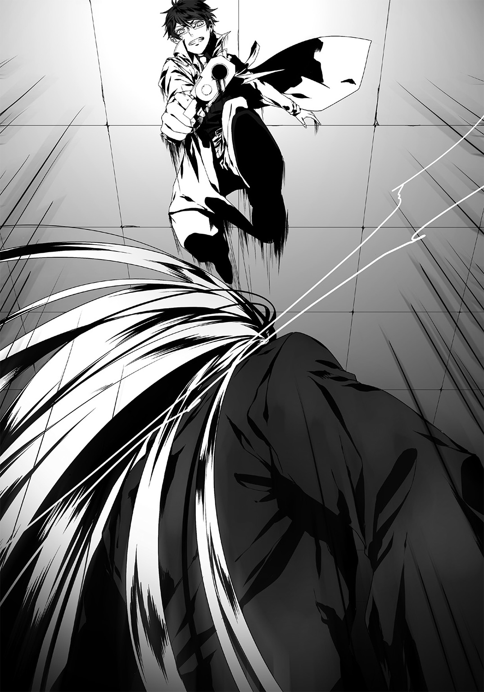
ヤツに命中したのは五発。右肩に四発と足の指先。比較的ダメージは少ない箇所だが充分だろう。肩は脱臼にまで至っていそうだった。
全弾撃ち尽くした俺は着地。次いで対象を確認した。
「っっっ痛ってぇえ......ッ！ っグあ、ガあ......！」
よし。肩口を押さえて悶絶している。関節を戻すのは時間が掛かると判断した俺は、瞬時に駆けながらリロード。そして、由樹矢たちが出て行った出口に近づいてゆく。
目的はたった一つ。ここから出て連中を追うため。
ノブに手を掛けると幸いロックはされていなかった。俺はそのまま扉を開けて外に出ようとした。
だが。
「......、ご、ごめんなさい......っ！」
振り向くと――棗さんが。彼女が些々神に捕まっていた。
「あぁー痛ってぇ。......ゴム弾っつっても数食らったらバカにできねぇ威力だな、コリャあ」
ゴキン、と。古典的な効果音をともなって些々神は外れた肩を戻した。
間髪容れず、ヤツは俺へ直進しながらと発砲してきた。撃ち返す暇はないと判断。俺は瞬時に駆け出し、弾丸すべてをジグザグに回避する。
やがて弾をすべて撃ち尽くしたのか。些々神は動作を停止した。
俺も動きを止めて位置確認――。俺はコンテナの脇、ヤツと棗さんは出口の前。先刻までの位置取りとまったくの逆になった。
怯えた表情の棗さんを盾にしつつ、彼は低く笑う。
「あのさぁー......。ちゃんと考えてたかオマエ？ こっから逃げて由樹矢追いかけたりしたら、オレがどんな行動を取るかー、ってさぁ？」
「俺は卑怯者の行動原理に理解を示せないもんでね」
会話中も俺は棗さんを救う手段を模索する。
射線すべてが重なっているワケではない。棗さんを避けて肩や足などを狙うことも、俺なら可能だろう。だが相手はこの男――些々神リュウ。着弾より速く、彼女を盾として弾道に導いて誤射させると考えて間違いはない。
この男にはそれが出来る。だから俺は撃てないのだ。
こういった場面を打開する手段も一応は存在する。――だが。
「どうしたんだよ。撃たねぇのか？」
......駄目だ。あの技は実弾でなければ使用できない。
この場での銃撃は諦めて、俺は些々神に威嚇の視線を送る。
「彼女を放せ」
「うーん。まぁ別に解放してもいいんだけどよ......ちょっと面白い事を思いついちまってさ」
「何？ ......――ッ、!?」
「きゃ、っ!?」
――しまった。完全に虚を衝かれた！
棗さんを連れ、些々神がこの倉庫から出て行ったのだ。
「ちゃんと追ってこいよ！ じゃねーとこの由樹矢の妹、殺しちまうからなーッ！」
「ま、待て！」
すぐに扉にとりついて向こうに出ようとした。
だが開かない。向こうから些々神が鍵を掛けていったらしい。時間稼ぎのつもりか。
俺は銃を構え、「ドン、ドン、ドン」とノブに向かって三発発砲。取っ手のとりつけが緩んだのを確認して身体を捻り、渾身の蹴りを放った。扉は簡単に向こう側へと開いた。
急いで外へと駆けだすと。
「っッ、っ――、！」
強い突風にあおられた。
顔面にもバチバチと飛沫が叩き付けられる。些々神が放った弾丸だろうかと錯覚したが、頭上の黒い空を見上げて納得する。
雨だ。強風を伴った雨が降っていた。
確かに今日の夜からは台風が上陸し、天気が大荒れになるという予測だった。この強風では弾丸も真っ直ぐには飛ばないだろう。己の運のなさを呪いつつ周囲を確認する。
正面は海。左右には海沿いに道が続いており、右手は行き止まり。状況判断に従い左へ走る。
些々神と棗さんは......いた。十数メートル先に。
二人は俺と同様、横の海側から吹く風を受けながら走っていた。棗さんが赤い服を着ているため嫌でも目に付く。ここから見る限り怪我はなさそうだ。
「止まれ！ 些々神ッ！」
走る。俺たちは嵐の中をなおも走る。
横で荒れに荒れている波が、焦燥感を異常なほどに駆り立てる。
どれほど走ったのだろう。しばらくして些々神と棗さんは、ある廃棄倉庫の脇へとその身を移動させた。方向を変えて風を避けようという意図か？
数秒遅れて、俺もその倉庫横の道へと入る。
「!?」
が、おかしい。些々神がいない。
その倉庫の間にある通路には、棗さんしか立っていなかったのだ。俺は、棗さんが必死に、何かを喋っていることに気付いた。
「い、維刀くんっ！ 後ろよ！」
「......！」
ザクリ。
腕に切り込まれた感触が伝わる。振り向いた時には遅かった。
次いで鋭い痛みが右腕を襲い、血液の流れ落ちる嫌な臭い――。
右腕が一瞬感覚を失い、銃が手から滑り落ちた。俺は攻撃を受けた方向を確認する。
積乱雲の合間から覗いた月光が敵対者の相貌をくっきりと映し出し、これ以上ないほどに「死」の象徴然としていた。
些々神リュウ。
カラン、と。彼はナイフを地面に落とした。そして武器を刃物から銃に持ち換える。
「んじゃ、死んどけや」
「ッっ！」
反射的に俺は、この男との距離を詰めた。
銃を持っている相手のレンジを広げる必要など無いからだ。些々神はその行動が意外だったのか、一瞬怯むような表情になった。
――隙は見逃さない！
ビュンッ！ 暴風を切り裂くように俺は回し蹴りを放った。
「な、ッ!?」
命中。些々神は胴体へと強かに俺の蹴りを食らい、吹き飛ばされる。
そのすぐ後ろには真っ黒にゆらゆら揺れる海が見えた。
ここだ。そう判断した俺は蹴りを引き戻し、低い体勢で着地。流れるように手を伸ばして落とした銃を拾うと。
「そこから落ちろッ！」
――ドォン！
――ドォン！
......――ドン、ドンドンドォオン！
乱射、乱射、乱射。
俺はマガジンに搭載されたゴム弾、その全てを一瞬にして撃ち尽くした。放った弾はどれ一つとして外れることなく、些々神に命中した。
ぐらり。俺からかなりの距離をあけて、些々神の身体が揺れた。
そして後ろに倒れこんで、――、
「......っ、ア？ ――ぅおあああああぁぁアァ！ ――......」
脚を踏み外し、海へと落下した。
「お、終わった、......のか？」
あまりにアッサリした終焉に現実感を得る事ができない。海に近づいて覗き込むが、些々神の姿は既に見えなかった。台風で荒れた波にでも吞まれたか。どちらにせよ這い上がってくる心配はないだろう。無力化と同等に考えていい。
と――。安心した途端に気が抜けたのか。ガシャ、と銃が手から落ちた。
フラリ、身体が揺れる。腕から血を流しすぎたせいだろう。そのまま身体がくずれ、俺は脚から倒れ込む......かと思われたが、突然肩を支えられて無様な醜態を晒さずに済んだ。
棗さんだ。
「だ、大丈夫!?」
俺の血液に身を汚すことも構わず、彼女は身体を支えてくれていた。
「大丈夫、って......そっちこそ血が付いちゃいますよ？」
「あ、服が紅いから。気にしないで」
......まぁ、確かに。ここは彼女に甘えるとしよう。
俺は彼女の肩を借りながら、倉庫のあった方向へと歩いてゆく。
暴風はその強さをようやく抑えはじめ、雨も小降りになっていた。だから周囲の音を徐々に聞き取りやすくなっている。向こうから響くパトカーのサイレンすらも。どうやら焚書課の応援が到着したようだ。
時計を見ると――クソ、二十分を既に経過している。
ダメージを負い、連中を逃がし、核を持っている証拠すら摑めなかった。完全に俺の負けだ。倉庫に戻ったら、応援を引き連れた先輩と玲香さんが何もない倉庫を見て落胆しているだろう。彼女たちの期待を裏切ったという事実が心に刺さる。
「維刀臥人、......だったのね」
肩を借りている相手が嚙みしめるようにそう言った。
「そういうあなたは棗椰子さん。......まったく気付かなかった」
私もよ、と彼女は力なく笑う。
「妹だったんですか。由樹矢正の」
「ええ。......まさかあなたを呼び出す使者として利用されるとは思わなかったけれど」
吐き捨てるように自嘲する棗さん。親類に裏切られたのが悔しいのか、騙されていた事そのものが腹立たしいのか。彼女は唇を嚙む。
「......間違いであって欲しかった。兄さんが、核で人を大勢殺そうとしているなんて」
「ヤツらを止めましょう。まだ、終わってない」
彼女は俺の言葉に強く頷いた。
そうだ。今回は逃げられたが、まだヤツらは計画を実行していない。つまり間に合う段階なんだ。諦めるには早すぎる。
次は絶対に逃がさない。テロも止めてみせる。
そんな言葉ばかり考えながら、どれだけ雨の中を歩いたのだろう――。あのアジトがあった倉庫に近づくにつれ、徐々に騒がしくなってきた。
――見えた。前方ではいくつもの赤色灯がグルグルと回っている。
パトカー......やはり、焚書課の応援部隊が駆け付けたのだろう。
「棗さん、ここで別れましょう」
トン、と彼女の細い肩を叩いて、その身体から離れた。
彼女は上目遣いで俺の状態を窺っていた。
「ほ、本当に大丈夫？」
「大丈夫、多分それほど重傷じゃないと思いますから」
「......うん」
その返事からは覇気が感じられない。
「気がかりですか。連中のことが」
「心配、というよりは怖いと言ったほうが正解ね。いつ彼らが行動を起こすのか......」
「まだ大丈夫です。あなたの兄さんは去り際にこう言いました。『あと数週間は使うつもりはない』、と」
「つまりしばらくはテロを実行しない、って事？ ......信用できないわね。今の兄さんは、人を騙すことなんて何とも思っていないから」
確かに。だが、今の俺たちはその言葉を信じるしかない。否定しつつもそれは理解しているのだろう。棗さんは半分笑いながら「それじゃ」と言い残し、倉庫とは正反対の方向へと歩いていった。
雨の中。彼女の姿が見えなくなったのを確認し、倉庫へと向き直る。
さて......俺も戻るとするか。
袖口が紅く染まったコートを脱いで、丸めて倉庫の陰においておく。これは後で回収するとしよう。次いで眼鏡を外し、最後に湿った前髪を後ろに撫でつけると、エルガットから焚書課捜査官・維刀臥人へと変貌を遂げた。
戻ろう。俺は最初に入っていったアジトの入り口まで歩いてゆく。そして正面に停車されているパトカーへと近づいていくと――、
「い、維刀!? 無事か！」
俺の姿を確認するや否や、奏手先輩は駆け寄ってきて驚愕の表情を見せた。
「ど、どうしたその腕！ 何があった!? ここにお前がいなかったから心配したんだぞ!?」
「連中にやられました。そして取り逃がしました。俺の力不足です」
「そうか――いやいい、お前が無事で良かったよ。やはりヤツらは武装していたんだな？」
「ええ......。実弾入りの銃を所持しています」
「分かった、それについては上に報告しよう。彼らはこれから公安が担当することになるだろう。武装勢力ともなると、もはや我々では手に負えない。......医療班をここまで呼ぼうか？」
「いえ。少ししたら自分で歩いて車まで行きます」
「わかった。――お前の過去は聞いたぞ、相当の戦闘力を持っていると。だがそんなお前でも、連中には対抗できなかったんだな」
「......」
返答できなかった。
「気に病む必要はない。やはり私が止めるべきだったんだ。すまない」
「謝らないでください」
何も出来なかった苛立ちを抑え、倉庫の方を眺めてみる。
内部では応援に駆け付けた捜査官たちが現場を調査していた。こうして外から見てみると、コンテナ以外には何も目立ったものは見受けられない。核はもとより、武器もすでに持ち出しているだろう。
「それとな維刀。ここには核兵器など無かった」
由樹矢の思惑どおり、先輩はそう俺に伝える。
「やはり甲村の証言は噓だったようだな。何が目的であんな事を言ったのかは分からないが、大方お前と私をからかって楽しんでいたんだろう。......まったく、腹が立つ」
違う。甲村の証言は事実だ。核は確かに存在する。あいつは自分の保身を捨てて証言してくれたんだ。それを立証できないのが悔しかった。
「もうたくさんだよ、オタクごときに振り回されるのは。なぁ維刀？」
「そうですね。......――、ん？」
「どうした？」
「いえ......何か、倉庫の方が騒がしくないですか？」
俺がそう言うと、先輩が倉庫の方へ視線を巡らせた。その途端に中から捜査員がこちらに走ってくる。
「き、来てください、奏手捜査官！」
「どうした？」
「違法コンテンツの山です！ 隠し部屋があったんですよ！ 中には組織の連中も隠れていました！」
「ッ!?」
ば、バカな！
あの倉庫の中に隠し部屋!? だ、だって......由樹矢はそんなこと一言も......！
――クソ、そういうことか！ これは『置き土産』だ！
アイツは焚書課が乗り込んだ結果「何もなかった」という体裁を取らずに済むカムフラージュとして、それらを『生け贄』として残していったのだ。
「み、見せろッ！」
先輩は我慢ができないといった調子で倉庫へと駆けてゆく。落胆に支配されつつ、俺もそれに続く。倉庫内部に至り、あのコンテナ・ロードの陰に入ると――そこには扉が付いているコンテナが一つ、孤立して置かれていた。
中からは、警官の怒鳴り声が響いている。
「早く歩けっ！ キサマら全員この場で逮捕する！ 違法所持の現行犯だ！」
「ち、違う......！ お、俺たちは騙されて......ッ！」
「ゴチャゴチャぬかすなっ！ とっとと歩けゴキブリどもが！」
有無を言わせず連行される男たち。
由樹矢に監禁されていたのだろう。恐らくは彼らこそが『東のサン・キュロット』穏健派たちだ。様子を見るに反論の余地すら与えられそうも無さそうだった。......彼らは何もしていないのに。
その手前では『違法コンテンツの処分』が実行されている。
彼らが監禁されていた部屋の中にでも隠してあったのだろう、大量のお宝が地面に並んでいた。アレは手塚治虫の初版マンガだ。他にもＡＴＡＲＩ２６００の本体およびソフト、クリィミーマミの原画、膨大なアニメＢＤ。――挙げてゆけばキリがない。
焚書課の連中は、それらをまるでゴミを扱うかのように袋に詰め込んだ。サイズの大きなフィギュアなどは持ち運びが容易になるよう、念入りに踏みつぶしている。
見ていられない。俺は目を逸らした。
「......ハハハハハハ！ 凄い！ 凄いぞこの量はっ！」
取り憑かれたようにそう言って先輩は俺から離れていった。
向かった先は『違法コンテンツ』が証拠として並べられているブルーシート。
彼女はその前で銃を抜き――発砲。持ち運びに面倒だと判断した大型のものだけに限定し、破壊を開始した。
「っ......！」
俺は目を伏せる。先輩の声だけが聞こえてきた。
「まったく！ こんなものを集めているヤツはやはり救いようがないな、本当に！ ハハハハハハハハッ！」
嬉しそうだ。楽しそうだ。先輩は心の底から歓喜に震え、破壊を楽しんでいる。顔が上気して紅くなり、興奮しているのか息も若干荒くなっていた。
「どうせ核というデマだってアレだ！ 『俺たちを怒らせると怖いぞ』とでも言いたかったんだろうな！ 小物臭いというか何というか......一瞬でもあんなヤツを信じた自分が情けない！ あぁ情けないっ！」
バァン、バァンと倉庫内に反響する発砲音が鬱陶しい。
核の所在を特定できず、コンテンツは破壊、穏健派は捕らえられ、本当の悪は野放し――。考え得る限りで最悪の結果だ。すべて由樹矢のシナリオどおりの結末になった。
怒りで握った拳から血が流れる。許せなかった。己の目的のため、妹どころか大勢のオタクたちを生け贄に捧げ、今また核で多くの無関係な人を巻き込もうと目論む、あの男が。
――バァン。
「維刀！ お前もコレを一緒に破壊しないか！ 楽しいぞ！」
そして......。そんな俺の前で蹂躙を楽しんでいる、この人も。
何でそんなにオタクが嫌いなんだよ。
何をしたっていうんだよ俺たちが。
何で目の前の状況を疑おうともしないんだよ。さっきのヤツらはハメられただけだぞ？
何があんたをそんなに駆り立てるんだよ。今あんたが破壊してるモノはただのカムフラージュに過ぎないんだぞ？
「まぁ、これで室長が責任に問われることも無いだろう。核はなかったが、今回は組織連中を大勢検挙、違法コンテンツも大量に押収したワケだからな！」
「そうねー。これが見つからなかったら危うく首が飛ぶところだったわー」
ゆっくりと。コンテナの影から玲香さんが姿を見せた。
「室長！ お疲れ様です！ 室長もどうですか、コンテンツ破壊！」
「んー、遠慮しておくわー。......――あ、維刀くん。捕らえられていたメンバーとちょっとだけ話したんだけど、どうやら彼らも核なんて知らないそうよー？」
だろうな。その辺りを由樹矢が抜かるハズはない。核の情報を知っている人間を、甲村以外に野放しにする事などないだろう。アイツの場合は「オレをおびき出す餌」だったから見逃されただけだ。
バァン――。バァン。
先輩のフィギュアを破壊する銃声は、止むことを知らなかった。
三．ゲット・ユア・ガンズ
～Get Your Guns～
『東のサン・キュロット』のアジト急襲から、一週間が経過した。
今は学校からの帰り道。秋葉原。
地下鉄の駅から顔を出して、日差しの強い中央通りを歩く。
俺は今日、腕の傷もふさがって一週間ぶりに学校へと登校した。
焚書課の業務が多忙だったためだ。
あの後、証拠品の調査や監禁されていた連中への取調べが続き、登校する暇がまるでなかった。それでも一週間であらかた片付いたのは、先輩や玲香さんの能力の高さ故なのだろうか。
そして今日、俺は久しぶりに登校。――したのだが。
「その途端に終業式とか......」
今日は七月三十一日、終業式。
一学期は今日をもって終わり、夏休みへと突入する。
せっかく登校したと思ったらすぐに学校が休みとか......何なんだか。
「ん、どうしたガット？ 『ハリカルナッソス』なのか『ハルカリナッソス』なのか悩んでいたとか？ 正解は後者だぜ？」
「噓つくなよ。前者だろうに」
俺の隣。考え込む俺を見て沖田藍がそんな下らない事を言い始めた。
明日からは夏休みだが、コイツは朝から家の手伝いをする予定らしい。オヤジさんもさぞ助かることだろう。
――『東のサン・キュロット』の行方はなおも摑めていない。
テレビなどでは「彼らが武装して焚書課から逃亡した」という報道はされている。しかし一番肝心な「核」の部分は一切伝えられていなかった。
「連中は核武装などしていない」。それが焚書課、そして玲香さんの結論だったからだ。
確かに俺の失態で連中を取り逃がしはした。だが世間は批難どころか俺たちを賞賛する。穏健派を多数逮捕し、違法コンテンツも山のように押収したせいだろう。あれは「核から目を逸らすために由樹矢が置いていったダミー」なのだと気付く人間は誰もいない。
完全にヤツらの勝利。そう結論せざるを得ない。悔しさについ唇を嚙んでしまう。
気になるのは棗さんだ。藍の話では、彼女はあれから一週間経つ今も学校に来ていないらしい。独自に調査でもしているのだろうか。
そしてあの男、些々神リュウ。あいつがあのまま引き下がるとも思えない。必ずまた俺の行く手を遮るために現れるはずだ――。
「......ったく！ さっきから何黙り込んでんだよ！ ひょっとして今度は『ヴァリガルマンダ』か『ヴァルガリマンダ』か悩んでた？ 正解は後者だぜ？」
「だから噓つくなよ。前者だろうに」
「ンじゃあの一週間前のこと？」
「......まぁ、そうだな」
「あの血で真っ赤になったコートをウチに持ってきたときはビックリしたよ。......アンタが取り逃がしちゃうなんて、相手はかなりの腕だよね。プロってヤツ？」
些々神の戦闘能力は疑うまでもない。あの時は運も味方したと思っていたが、今思えばヤツはすべて計算ずくで動いていたような気がしてならないのだ。つまり「強風で自分の気配を消せ、棗さんの服装が人目を引く」という、状況すべてを承知した上で、倉庫の外へ出て行った――今ではそう思う。
状況判断力は俺以上。さすがは戦場を渡り歩く傭兵だ。
対策が必要だ。あの男を確実に仕留める切り札が。藍のオヤジさんに頼んでみるか――......。
「海外に行ってた頃の知り合いなんでしょソイツ？」
「ん？ いや、それが思い出せないんだよ。モヴィアにいた時の政府側についていたんだと思うんだけど、あの時は記憶がブッ飛んでて覚えてないし......」
「ふーん。まぁどちらにせよ心配してないけどね。アンタなら必ず帰ってくるハズだし。......――っと。オラ、着いたぞー」
ん？ 着いた？ どこに？
そう訝しみつつ横へ目をやると『Ｂａｒ Ｂｏｔｔｏｍ ｏｆ ｔｈｅ Ｂｏｔｔｌｅ』の看板が目に入った。
「着いたぞー、......って何だよ！ ここお前んちじゃん！」
「店に寄ってきなよ。景気づけに何か奢ってやるからさ！」
そう言うや否や、藍は「くぱぁ」という嫌な音を響かせてスイング・ドアを通過。そのまま店内へと姿を消した。......まだ直してないのか、この扉。
まぁ、せっかく奢ってくれるんだから断る理由はない。俺もいやらしい音を立てつつ店内に足を踏み入れた。
現在、昼の十二時。このバーはランチなどはやっておらず、もっぱら夜にしか営業していない。だから今なら店内は俺と藍の貸し切り状態だ。
そのハズだった。そう思っていた。
店内に人影を確認するまでは。
「一週間ぶりね、エルガット。――いや、維刀くん」
棗さんが、制服姿でカウンター席に腰掛けていた。
レディ・パルムとしてこの店を訪れた、あの夜のように。
カラン。
彼女の前に置かれたレモネードのグラスで氷が崩れた。
その隣。スツールに腰掛けた俺は藍が作ってくれた苺ミルクの砂糖抜きを一口あおる。オヤジさんが作るものに全く劣らない、いい味だ。
棗さんは、グラスの中の氷をじーっと見つめている。
「藍さんの作ってくれた飲み物、本当に美味しいわ」
この店に入ってから、かれこれ二十分。
俺たちは各人の認識を統一するため、これまでに入手した情報や状況の説明を行った。
「藍は棗さんがレディだと気付いていた」という事実。
「棗さんがテロ組織の首謀者・由樹矢の妹だった」という事実。
「俺も合間をぬってヤツらの消息を探っていたが色よい結果はなかった」という報告。
そして「この一週間、棗さんは学校を休んで連中の行方を調査していた」という事実――。
それらすべてが開陳され、情報はこの三人の中で共有化された。今はそれも一段落し、休憩時間のような状態といったところだ。
カウンターの向こう側では、藍が不満そうな表情を覗かせていた。
「どうした藍。俺の隣に女子が座っている事実がご不満か？ 存分に嫉妬していいんだよ？」
「は？ テメェブッ殺すぞコラ糞ガット。何調子こいてんだよ。次ンな事喋りやがったら店から追い出すぞハゲ」
「......例の些々神ってヤツな。そんな喋り方をするぞ」
「口が悪いんだなぁ些々神」
「あ、藍さんってそんなしゃべり方をするの？ ......驚いたわ」
「コイツ、俺と会話する時だけこうなんです。ナメられてんでしょうね俺」
「よく分かってんじゃんガット！ アタシはオマエの事をナメくさってるよ、心底ね！ というか喋り方で気付いたんだけど......椰子さんも、学校にいる時と口調が変わってません？」
藍の質問に棗さんは微笑した。
「これが本当の私の話し方よ。学校ではレディだってバレる訳にいかないから変えているの」
「そうなんですか。......あ、そうだ！ じゃあガットもさ、学校での喋り方を変えてみたらどうだろう！ クラスの連中にウケるかも知れないじゃん！」
「お、いいかもな。例えばどんな？」
「語尾に『ぷぎゃー』を付けるとか！」
「藍は俺と棗さんの仲に嫉妬してるんだぷぎゃー」
「オマエマジでこの店から出ていけよ。大概にしねーとマジでブッ殺すぞクソカス」
さっきから些々神がこの店に居るように感じられて気分が悪くなる。ここは飲食店。食べ物・飲み物は美味いし食品衛生法には則っているんだろうが、精神衛生上よろしくない店員を使っているのは評価できないな。
「でも藍さんって凄いわよね」
棗さんの言葉に藍は意外そうな顔をした。
「凄い、ですか？ アタシが？」
「ええ。だって私の変装を簡単に見抜いていたんでしょう？」
「えっ？ ......まぁ、はい」
「そこが凄いと思ったの！ だって今まで見抜かれたことなんて一度もないんだから！」
「あ、確かにそうですよね。俺も感心したよ藍、よく気付いたもんだ！ 俺たちすらも凌駕しているな、その観察力は！」
「あそ」
「あ、あれ？ せっかく維刀くんが褒めたのに。素っ気ないわね？」
「照れてるんですよ、俺が賞賛することなんて滅多にないモンだから。なー、藍？」
「......この人たち、やっぱおかしいよ」
よく分からん言葉を吐いて、藍は店の奥へと姿を消した。
「......」
「......」
静寂。
一言も喋らない。俺も、棗さんも。
どちらも何を言うべきか迷っているのだ。彼女の心中を察するならば「学校では敵対していた相手だったのに」といったところだろうか。別に気に病む必要はないと思うが。
「ご......ごめんなさい」
先制攻撃。沈黙を破ったのは棗さんの謝罪だった。
「あのアジトで私は足手まといでしかなかった。......そればかりか、学校ではあなたに酷い事を言っていたわ。謝らせてください」
「気にしないでください。むしろ謝るのは俺のほうだ」
思い出すだけで、グラスを握る力が強くなってしまう。
「――目的を何一つ遂げられなかった。彼らを止めることも、核の在処を聞き出すことも。あげく由樹矢の置きみやげのせいでコンテンツの大量破壊を許し、何の罪もない穏健派の連中を焚書課に差し出してしまった。......完全に俺の負けです。あなたの兄さんの方が一枚も二枚も上手だった」
私だって一緒よ、と彼女は力なく笑う。
「いや、もっと酷いわね。私なんか兄さんに完全に利用されていただけなんだから。あなたをおびき出す餌でしかなかったんでしょうね、彼にとっては」
「......兄妹として、彼をどうしても止めたかったんですね。あなたは」
「ええ。――兄さんは、三年前に棗家を出たの。本名は棗正。家族で私だけが連絡を取り続けていた」
「捜査官狩りを始めたのも彼がきっかけ？」
「ん？ いいえ？ まったく別よそれとは。レディになった理由は『大好きなＢＬが規制されて我慢ならなかったから』というだけの話だから」
「あ、そうなんスか......」
いいのか、そんなにあっさりと「レディ誕生の秘密」を暴露してしまっても。
創作文化の中でもＢＬはよく知らない部類なので、俺はこれ以上その話題に触れることを止めた。
「......兄さん、あんな事をする人じゃなかったのに」
諦観が滲むような口調で棗さんが呟いた。
「棗家は京都の旧家からの分家でね？ 幼い頃に兄さんと一緒に本家に預けられていたせいで、私は古流武術を使えるんだけれど......兄さんはそれをきっかけに格闘術に興味を持ち始めて、高校時代には多くの戦闘術を修得していたわ」
納得できる話だった。彼とは拳を交えてはいないが、恐らくは相当の実力者だろう。あの身体を見れば一目瞭然だ。
「私が中学二年生になると、彼は家を捨てて自衛隊へと入った。隊では向かうところ敵なし。同期どころか上官ですら兄さんにはかなわなかったみたい」
「へぇ。彼らはやりにくかったでしょうね」
「そうでもなかったらしいわ。私が当時の上官の方を訪ねると快く迎え入れてくれて『アイツがいた頃は楽しかった』とか『仲間の事を第一に考えて自分は最後。いつも損な男だった』と賞賛の嵐だったもの。......そう。意外だけど、自分なんて後回し、他を第一に考える性格だったのよ。兄さんは」
繫がらない。彼女の話は、俺が対峙したあの由樹矢と全く別人を語っているように聞こえた。
「それから？」
「......ある日突然、彼は自衛隊を除隊した。驚いて電話で確認したわ。そうしたら兄さん『私は弱者の代表として戦う』、とだけ」
「弱者？ どういう意味ですか、それは」
「よくわからない。でも兄さんはいつも『弱者を作らない世の中』を口癖のように繰り返していた。漫画家として活動し始めたのはその少し後からよ」
「弱者を作らない世の中......平等......共産主義？」
「それとも違うらしいわ、本人に言わせれば。いわく『思想や階層などのカテゴライズではなく、もっと単純なことだ』と」
もっと単純？
どういう意味なんだ。弱者を作らない世の中、それはつまり「国民全員が平等に生きる世の中」のような無茶極まる理想とは違うのか？
それとも文字どおり、本当にこの世の中から弱者を無くそうと考えているのか？
分からない。あの男が何を考え、今回のテロに及んだのかが。
身内の彼女ですら理解できないのだ、俺に分かるハズもないのだろうが。
「......ねぇ、維刀くん」
眼球だけを動かして棗さんのほうを見る。
「あそこで話を聞いてて気になったんだけど......あなた、どうしてモヴィアにいたの？」
「は、はい？」
突然の疑問に虚を衝かれた格好となった。
「どうして、って。何ですかいきなり」
「だ、だって二年前は中学生でしょ？ なんであんな危ない国に......？」
......自分の眼で見てもいないクセに「危ない国」か。若干の苛立ちを覚えたが、特に何も言わず俺は話題を引き継いだ。
「別に話してもいいけど......長くなりますよ？」
棗さんは二度、首を縦に振った。――まぁいいか。彼女も自分の過去を話したことだし。
「......自分で言うのも何だけど。俺、ガキの頃は結構頭良かったんですよ」
「あらホント。まるで自分から言うことじゃないわね」
「茶化さないでくださいよ。......教師からは東大に行けるとまで言われてました。まぁ確かに兄弟姉妹は秀才ばかりだったし、俺もそう思ってたかな。それに頭だけじゃない。運動の分野でもプロを目指せる能力があるってスカウトも来た。友達もたくさん引き連れて、クラスのヒーロー。......で、それを笠に着る嫌なヤツだったんですよ」
調子に乗っていた、今でもそう思う。
自分のために世界がある。自分は何をやっても上手くいく。ただやらないだけ。やったら人より上手く出来るに決まってる。実際出来たし。――そんな事を本気で思っていた。
バカなヤツだ、他人を無視して。過去に戻れたらブン殴ってやりたい。
「そんな調子に乗っていた子供が、ある女の子を好きになりましてね。どうせ俺になびくだろう、みたいな考えで告白したんです」
「付き合うことになった？」
「いえ。こっぴどくフラれました。――信じられなかった。認められなかった。自分を見失った。これだけ素晴らしい人間を振るなんて、って。それで俺はひとりで日本を出ました」
「えぇ!? ......は、話が急に飛んだわね？」
「傷心旅行ってヤツですよ。知ってるヤツがいる場所に居たくなかったんです。自失していたからどうやってチケットを取ったのか、空港までどの道を歩いたのかすら覚えていない」
「と、当時は中学生でしょう？ 親御さんは心配したんじゃ？」
「その日に捜索願いが出されていたみたいです。モヴィアの一件の後、俺がすぐ日本に連れ戻されたのはそのせいもあったとか」
思わず俺は失笑した。迎えに来た大使館の人間、政府高官、中学の担任、両親、そして玲香さん――。モヴィアの後、彼らが総員憤然と並んでいた様は本当に笑えた。
「その後は？」
「アメリカをさまようように歩いていました。そのせいで麻薬中毒者と間違われて、町の自警団みたいな連中に目を付けられまして。当時は戦闘なんて経験がなかったから、なす術もなくボコボコにされちゃって。そんな時、助けてくれたのがマンガだったんですよ」
「......？ マンガが？ ......どう繫がるのかしら」
「地主のオッサンの家に引っ立てられて、彼が俺を見るなりこう言うんです。『日本人か。ドラゴンボールの国だろう？ じゃあベジータの髪型にしたら解放してやる』と」
「ブッ！」
棗さんが口に含んでいた飲み物を吹き出した。
「ご、ごめんなさい！ ......そ、それで？ ベジータの髪型にしたの？」
「するワケないじゃないですか......。というか『アイドンノウドラゴンボール』知らない、って答えたら凄く驚かれました」
「ど、ドラゴンボールよ!? 噓でしょ、知らなかったの？」
「ええ全く。するとその地主がドラゴンボールを全巻持ってきて『読め』、と。俺は英語で書かれたマンガを読みました。そして引き込まれた」
あの時の興奮は忘れられない。英語なんてほとんど分からなかったが、理解するのは絵だけでも充分だった。新鮮で、それ以上に衝撃を受けた。
今、この場にいる人は別の意味で衝撃を受けているようだが。
「ド、ドラゴンボールを知らないなんて。最近の小さい子には割といるらしいけど......」
「厳しい家でしたから。マンガとかゲームとか触れたことも無かったんですよ。――で、その地主の家に滞在してマンガやアニメを見続けました。アニメは日本語吹き替えＤＶＤがあって助かりましたね。最後は地主のオッサンも『お前は日本人の息子だ』と言って泣きながら送り出してくれました」
「な、なるほど......。とにかく、そこがエルガットのスタート地点ね」
「早く日本に戻って、他にもマンガやアニメが見てみたい......そう思う一方で、俺は旅が楽しくなっていました。だからついでとばかり、違法合法問わず様々な手段で国境を越えていろんな国を見て回った。メキシコ、グアテマラ、エルサルバドルから海路でニカラグア、コスタリカ......。どこも言葉なんて全然通じなかったけど、身振り手振りで」
『ガット・イット』。俺の名前にシャレを効かせたその言葉だけで、大概のコミュニケーションは片付いた。
「失恋なんて遠い過去の話だった？」
「その頃にはもう。様々な価値観に触れて、人と繫がりを持つことが目的になっていた。そして段々、それが楽しくなっていた」
もちろん良い事ばかりではなかった。騙されたり、殴られたり、追い回されたり、監禁されたり、日本人というだけでモノを投げられたり。......金を盗られたどころか本気で殺されそうになった事もある。その度に逃げたり撃退したりを繰り返したが、撃退数が逃げた数を上回ったのはいつからだろう――。
「銃の撃ち方、身体の動かしかた、相手への対応の仕方......多くの人たちから戦闘術を学んでいったのもその頃です」
幸い身体能力や反射神経が並はずれて高かったため、すぐ習得していった。俺に才能があったとしたらその部分だけだ。それだけは神に感謝する。
でも......こうして思い返すと。俺は全世界、多くの人に助けられて来たのだ、と今さらのように実感してしまう。
俺は、エルガットは「世界」に育てられたのだ。
「ホント、失恋がスタートとは思えない話の展開っぷりよね......。その後は？」
「いくつもの地を廻ったあと、俺はヨーロッパへ飛びました。そして空港を降り、最初の国境を越えた先にあった国が......」
「モヴィア共和国」
俺は頷いた。
「驚きました。荒れた所はいくつも見てきたけど、あそこはレベルが違った。瓦礫や半壊した家々がそこら中に広がっていた。......死体も。内戦状態だから当然ですけど」
「時期からして、大統領の武力制圧がピークの頃かしら」
「ええ。でも市民はみんなイイ人ばかりでしたよ。現地ではメキシコから移ってきたリカルドというオッサンが俺を大層気に入ってくれて、奥さんにもずいぶんと世話になりました。......で、彼にはディーノという息子が一人いて、その子が俺を『エル・ガット』と」
「な、なるほど！ 確か『エル』はスペイン語で男性に付ける定冠詞よね！ 『ザ・○○』みたいに。それが由来だったの！」
「彼らがメキシコに居た頃、『エル・ガット』っていう同名のルチャドールがいたらしくて。ソイツに俺を重ねていたんでしょうかね」
「ディーノくんにとってあなたはヒーローだった......って事か」
「いい子でした。言葉はまるで通じなかったけど」
五歳だった。あの底抜けの笑顔。今でもすぐに思い出せる。
「よそ者で言葉も使えないガイジン。そんな俺を、彼らは迎え入れてくれた。二ヶ月くらいだったかな、そのリカルドの家にしばらく滞在しました。荒れた町でディーノとサッカーをしたり、夜は拙い言葉で日本の事を教えてやったり......」
「素敵ね」
「――そして、殺された」
家族全員。戦車の砲弾に家ごと貫かれて。
俺だけは彼らが別に用意してくれた寝床だったせいで難を逃れた。いや、逃れてしまった。本当に死ぬべきは彼ら家族ではなく、異分子である俺のハズだったのに。
棗さんは呆然と俺の顔を見つめていた。こんな顔をしていたのだろうか、モヴィアにいたあの時の俺も。
「俺が反乱軍にコンタクトを取り、彼らに参加したのはその二日後です。......そしてさらに八日後の早朝、俺は一人で官邸に乗り込んで連中を制圧した。腹が立っていたんですよ。何をどうやったか、ほとんど覚えていません。些々神の事を記憶していないのも、大方それが原因でしょうね」
復讐。俺の頭にはそれしか無かった。
銃数丁と持てるだけの弾薬を装備し、官邸正門に立ったところまでは覚えている。それ以降は記憶がおぼろげ。ハッキリと記憶が戻ったのは、反乱軍のヤツらが見たことのないほどの笑顔で帰還した俺を迎え入れたところから。
「......あとは知ってのとおりです。噂を聞きつけた焚書課の室長に連れられて帰国。捜査官になって、同時にエルガットとしても行動し始めた。戻ってきて驚きましたよ。海外で耳にはしていましたけど、ここまでオタク文化が規制されていたなんて」
「あなたが海外に行っている間に『金曜の模倣者』事件が起こったのよね。だから焚書課が設立されたのは、あなたが戻ってきて少ししてからね」
「都合が良かった。オタク規制をする組織に入って、その裏では自分の組織と戦う――。それでオタク文化を守っているつもりだった。自分は規制と闘う御旗になっていると思っていた」
「......」
「でも、結果は知ってのとおりです」
思わず自嘲気味な笑いが突いて出てしまう。オタクを守っているつもりが目の前の暴挙を止められず。御旗として闘っているつもりが踊らされて。
「正直、俺には自信がありません。『核を持っている』、それだけでヤツらが俺の何歩も先をリードしている。加えて些々神、あの男の存在は脅威だ。行く先々で邪魔をされるでしょう。まずは些々神とは戦わず、回避する手段を講じて――」
「......いいえ。駄目よ」
「え、っ？」
「確信したわ、モヴィアでの話を聞いて。あなたは些々神と戦わなくてはいけない」
「それはどういう......」
俺の言葉を遮って、棗さんは数枚の資料を俺に押しつけてきた。
「些々神リュウの情報よ。私がこの一週間で調べた情報のひとつ」
あいつの情報を摑んでいたのか。驚きつつ一枚目の字面を目で追ってみる。記されていたのは些々神のこれまでの経歴――。ソマリア、リビア、シリア、エジプト......そしてモヴィア。記憶に新しい紛争発生地域の名前がいくつも目に付いた。
「彼は傭兵として各地を転戦している、って兄さんが言っていたわよね？ だから些々神は日本人の傭兵としてかなり名の売れている部類らしいんだけど......むしろ『些々神』という名前はもう一人の方が有名なのよ」
「もう一人？」
「彼の父親、些々神・クラウス。――武器商人よ」
そういう事か。おぼろげな記憶が徐々に呼び起こされてきた。
「......海外にいた頃、聞いたことがあります。『日系二世の武器商人が各地の紛争地帯にフラリと現れては、兵器と傭兵を斡旋してしている』と」
「それが些々神親子よ。父親は兵器を売りつけ、息子が傭兵としてそれを運用し、戦場を拡大させる。そんな親子二代の自作自演みたいな事業を世界各地で展開しているの」
戦争屋――。戦の臭いを嗅ぎつけ、世界を西へ東へと渡り歩いて戦禍を糧に生きる。
些々神親子はそういうヤツらなのか。
「あのモヴィア内戦のとき、些々神リュウは傭兵として政府側に雇われていたらしいわ。無論、父親のほうも大統領のご用聞きとして兵器を売っていた。......ディーノくんたちの家族を殺した戦車、それも些々神の父親が軍に売った兵器って事よ」
「なるほど......『戦わなくてはいけない』ってそういう意味ですか」
「ええ。あなたの戦いはまだ終わってない。モヴィアは自由を勝ち取った。でもディーノくんを殺したヤツらは、まだ各地で戦の炎を延焼させ続けている」
確かに今の俺には、言いようのない、譬えようのない怒りが芽生えていた。
あの男の父親が売った戦車でディーノもリカルドも殺された――。そう考えると昔の記憶がまざまざと眼前に描き出されてしまうのだ。
「結局あのモヴィアでは、アナタが彼らの邪魔をして大統領を退陣させたわ。そのお蔭で、兵器代・傭兵派遣代が一切回収できず、かなりの損害が出たようよ」
「そうか......モヴィアの復讐か！」
「あの男は紛争で『経済的に負わされたダメージ』を、核攻撃という最悪の方法で仕返ししようとしているんじゃないかしら」
なるほど。ようやく分かった。なぜ些々神リュウが俺に執着するのか、その理由が。だがこうして事実が分かると怒りは別として何というか、スッキリした。
これで遠慮も迷いも無く、あの男をブチのめせるのだから――。
「父親も今回の件に絡んでいるんでしょうか」
「核を『東のサン・キュロット』に売りつけたのは父親でしょうね。自分の息子を組織に紹介したのも。......でも、彼が面倒を見るのはそこまで。いつもの事業でも、それ以上の介入はしない主義らしいから」
「日本にはいない、って事か。残念だ。親子まとめてブッ飛ばすチャンスなのに。核まで持ち出すようなヤツを野放しになんてできない」
「......そうよね。核があるのよね」
「？」
棗さんは長いため息をついた。
「――この一週間、私が兄さんと些々神の行方以上に力を割いたのが『核のありか』を探すことだったわ」
「み、見つかったんですか!?」
「兄さんの住んでいたマンションを見つけてね。藁をもすがる思いで部屋の中を調べたの。......すると出てきたのが」
パサ、とカウンターに大学ノートが投げられた。
「日記。半年前で記録は終わっているわ。最終日を見てみて」
言われたとおり後ろからページをめくってみる。確かに日付は今年の一月頃で終わっていた。
「えっと。......『盆という死と生の境界を意識させる時期。そして何より、ヒロシマ・ナガサキに続く名として、かの地が刻まれるのは残念でならない。その過去の惨劇と日付の間隔すら近いのは、何かの皮肉だろうか』。......――ッ！ こ、これまさか!?」
「ええ。『お盆に核を起爆させる』という事でしょうね」
驚愕する俺へと説明するように棗さんは続ける。
「広島に原爆が投下されたのは八月六日、長崎はその三日後の八月九日。お盆は一般的には八月十三日から。『日付の間隔が近い』っていうのはそれを意味していると思う。そもそも『盆』ってハッキリと書いているしね」
「さ、さすがです！ 時期はこれでハッキリとした、あとは場所だ！」
「いや、ここまで分かれば標的も自然と導き出されるわよ」
「え？」
「考えてみて。彼らは核を使うつもりなのよ？ だったら人が大勢いる場所を選ぶハズだわ。『お盆に凄まじい数の人が集まる場所』。何か気付かない？」
「え......まさか」
お盆と言われて、俺たちのような人間が思いつくのはたった一つ。
オタクなら誰しもソレを連想するだろう。行列、ウダるような熱さ、常軌を逸した人の海......。確かに。大勢を巻き込むのなら、あのイベントをおいて他にはないだろう。
「――コミック・マーケット、ですか」
重苦しくその名を口にした俺。
否定して欲しかった。だがその願いは叶わず、棗さんは粛々と頷き返した。
「この日記を信じるなら......兄さんはコミケで核を起爆させようとしているのよ」
「コミケ当日、現場で会いましょう」と言い残して。
棗さんはこのバーから姿を消した。
俺は黙したままカウンターに腰掛け、状況を整理している。あまりにも信じたくない予測に混乱しているというのもあった。
「コミケで爆弾......か」
確かに分からない話でもない。
あそこは人の密集度が異常なレベルで高い。テロで狙うのなら正解だろう。
だが、分からないのは「なぜオタクを狙う必要があるのか」、という点だ。オタクの文化を認めさせるのに、他ならぬ彼らを殺して何の徳があるのだろう？
「とんでもない話になってきたなぁ、ガット」
藍が店の奥からヒョコ、と顔を出す。
「何だ。聞いていたのか」
「うん全部聞いてた」
カウンターをジャンプで飛び越え、俺の隣に座る藍。
「......ヤバいんじゃないの？ どうするつもりよ」
「とりあえずは焚書課の捜査官としてコミケに潜り込む。自由に動けるし、何より入場料がかからないからな」
「セッコー。まぁ今って馬鹿みたいな入場料取るからね、あのイベント」
「お前は当日ここにいろ。もしもの為に残っていてくれ」
「りょーかい。......つーかさ、アンタ何で一番重要な部分を棗さんに話さなかったの？」
「......？ 何の事だ？」
「決まってんじゃん。『自分が中学のときに振られた女の子は沖田藍』です、っていう――」
「あああああああああああああああああああああ！ ぁぁああぁあああああああああああああああああああああああああああああああああああああッ！」
「うわぁあっ!? な、何だコイツ、急に叫びだした!? 遂にイカれたか!?」
「い、言うな！ 言うなよ！ それを言うんじゃねぇッ！ 俺の真の黒歴史はエルガットだの聖堂騎士だのよりもソレなんだよ！ 分かれよ！ 察しろよ！ 当事者っつーかモロご本人様だろうがオマエ！」
「だっ、だって事実じゃん！」
「......あーそうか、じゃあこっちも事実を語るぞ！ 俺を振ったヤツは中学校の頃は今と全然違う『お姫様キャラ』だった上、一人称が『ワタクシ』の中二病で――」
「あああああああああああああああああああああ！ ぁぁああぁあああああああああああああああああああああああああああああああああああああッ！」
――絶叫。
午後。聖地アキハバラに轟く、二人の叫び。
それは周囲のビル群にのみ込まれ、そして消えていった。
「はぁ......はぁ......っ」
「......ハぁ、っ。ハァっ......」
両者痛み分け。二人とも己の黒歴史を直視するという拷問に精神を侵され、正常な思考を保てず息が荒くなっていた。
「いいか......余計な事はもう言うなよ」
「わ、分かったよ。――あ、そうだ忘れてた。......ほらよ」
唐突に。藍は俺に白い服を投げて寄越した。
キャッチすると......手にかなりの重量が伝達される。
「なんだコレ」
「聖堂騎士のコート。腕んトコが切られてたでしょ？ 縫ってやっといたぜー」
「え、お前が？」
このコートは元々、オヤジさんに作ってもらったものだ。だからナイフで切られた部分の補修に出していたのだが、それを藍が修繕したというのは意外だった。
上着を開いて、些々神に攻撃を受けた箇所を確認する。確かにその部分の痕跡は縫合されていた。跡がまったく分からない程の手際で。
「凄いな......お前ってこんなに裁縫が上手かったのか？」
「当然じゃん、アタシはコスプレバー経営者の娘だよ？ 客のコスを作ったりすることもあるんだから。それにウチってお母さんがいないじゃん。だから昔っからアタシが父さんの取れたボタンを付けたりしてたしねー」
そうだった。こいつは見た目や行動からは繫がらないが、結構苦労していたりする。
お母さんを病気で亡くしてからはオヤジさんを支え続けている。案外、人への気遣いが出来るヤツなのだ。
手の中にあるコートはズシリと重たい。この中には藍の気持ちも込められていたんだ。
「ありがとう、藍。......こうしていると、やっぱりお前って」
「妹みたい？」
「キモいだろ」
「いんや全然。......ホントはそう言われると嬉しいよ。凄く」
「良かった。ホントは『妹みたい』じゃなくて『お母さんみたい』って言おうとしてたけど」
「......キモいっつーより、なんかすっげームカついてきたわ。帰れ」
立ち上がり、入り口まで俺を連行し、ドアを開きながら......。
怒りをその効果音に滲ませつつ、藍は俺を店から叩き出した......。
四．アンチレイシスト・スーパースター
～Antiracist Superstar～
八月十三日になった。
世間はお盆の帰省ラッシュ。どの交通機関もフル稼働し、乗車率は１００％を超えるものばかりになっている。この時期は「都会から人が消える」などと言われるが、確かに街中もどこか人影がまばらのように感じた。
――だが。
今、俺が立っているここ・有明は、そんな世間の動向とはまるで無関係。
燃え上がらんばかりの熱気に満ち溢れている。
「ぅおおおおおおおおおおおお！」
「はーい走らないでくださーい！ 流れに従ってあるいてくださーい！」
「あと二十分で物販だし先に企業を廻っちゃおうぜ」
「駄目だ駄目だ。ＡＴＭもうスッカラカンだわ」
「あー......新刊落ちたんスか......」
「立ち止まらないでくださーい！ 止まったら死にまーす！」
「荷物がまだ届いてないんですけど！」
「はあああああああああアアアアあ!? サ、サークル欠席ぃぃいいいいいいい!?」
「メシどうするよメシ」
「列の最後尾はこちらでーす！ 新刊ご購入の方はこちらに並んでくださーい！」
阿鼻叫喚、魑魅魍魎、地獄絵図、そして百花繚乱――。さまざまな四字熟語が想起されては、次なる状況に上書きされていった。
コミック・マーケット。
この地球上における、最大のオタク・イベント。
それはサブカル規制の進んだ現代においてもなんら変わることなく、今も世界の頂点として燦然と輝き続けていた。
腕を組んで立ち、目の前に広がる大河の流れを眺める。
――今年のアニメ作品のキャラを模したコスプレ。
――機能性の特化だけを重視している荷物の運搬手段。
――抱えきれないほどの紙袋を両手にぶら下げる男。
――目にもとまらぬ速さで「歩く」高機動購入集団。
――いちいち一言付け加えて歩行者を誘導するスタッフ。
創作者、購入者、企業、レイヤー。誰も彼もが己の欲望に忠実で、「ここに集う者の熱気で雲ができる」という伝説にも納得してしまう程だった。
これだ。コミケはこれが楽しいんだ。
「昔は作る側と買う側、どちらも礼儀があり淡々としていた」と口にする人たちも藍の店でよく見る。確かに正しいことだとは思う。だがもう理屈ではない、そうも思うのだ。
これは祭典。「祭り」。
目まぐるしく移り変わる光景、そのすべてがお祭りなのだ。
俺自身はオタクとしてのキャリアは長くない。が、この状況を目の当たりにしていると血液の温度が二度は上昇したようにさえ錯覚してしまう。ここは年に二度しかない、抑圧のストレスを解消できる言わば「禊ぎの場」。規制以前の世界とは違うのだ、多少のヤンチャはお目こぼし願いたい。
......しかしながら。非常に残念な事実が存在する。原因は俺の隣に立っているお人だ。
「眩暈がするな......このオタクの数。お前はよく平気だな、維刀」
奏手イリナ先輩。彼女は嫌悪感を隠そうともせず眼前の光景を一笑に付した。
せっかくこの光景に興奮していたというのに。一気に冷水をブッかけられたような気分にさせられた。
「具合が悪くなったりしないのか。私は吐き気と悪寒も併発しているんだが」
「俺は別に大丈夫ですけど......この熱気で悪寒ですか」
彼女の言葉は誇張でも何でもない。先輩はこの暑さの中、いつもの黒服で全身を覆っているにも拘わらず汗一つ流してはいなかった。それどころか両手で身体を抱くようにして肩を震わせている。顔色もあまり良いようには見えない。
「......甲村の言っていた事もあながち間違いじゃないですね」
「何の話だ？」
「オタクアレルギーの事です。先輩を検査したら本当にそんな結果が出そうだ」
フン、と鼻を鳴らして先輩は前を向いた。俺のジョークを嘲笑ったのか、それともアレルギーを肯定したつもりだったのか。その横顔はいつにも増して不機嫌に見えた。
――ここは二階。東展示場とエントランス・ホールを繫ぐ連絡通路。
道行く人、誰もが焦燥や期待をその顔に映し出している。
「......何がこいつらを駆り立てるんだろう。規制されつづけても、諦めずに」
流れゆく人の群れを見つめながら。先輩はそう呟く。
こんなにも自由に見えるが、近年の規制による影響は無論コミケにも及んでいた。一サークルが販売できる本の数、コスプレの露出限度、来場者の購入限度数など、今ではそれらすべてに数量的・数値的制限が設けられている。こうして俺たち焚書課捜査官が配備されるのも、それらに違反している人間を見逃さないためだった。
本来ならコミケは、真っ先に規制のやり玉に挙げられるハズのイベントだろう。だが政府はその経済効果・集客力に目を付け、利用する手段を講じた。サークルは売り上げの半分を税金として収めている上に、参加者側も今では高額の入場料を支払っている。規制の名の下、すべてが都に吸い上げられるというシステムが構築されていた。
また、コミケが続いているのは「ガス抜き」としての側面もある。抑圧されたオタク連中も、このイベントでだけはある程度の自由を許されている。
生かさず、さりとて殺さず――政府の方針はその一言に尽きた。
「誰だって趣味があるじゃないですか。彼らにとってはそれがアニメやマンガだったというだけの話ですよ。先輩にはないんですか、趣味」
「......今は特に。以前は幼い妹とバレエを習っていたが」
「へぇ。先輩って妹さんがいたんですか？ 初耳です」
「え？ あ、ああ。まぁな」
「どんな感じの子なんです？ 先輩に似てますか？」
「そ、それは。............――――あ！ そ、そこの男ッ止まれ！ 所持限度を越えた数を持っているだろう！」
質問に答えず、先輩は大量の荷物を持った男めがけ人の流れに飛び込んでいった。
......何だ何だ、あの反応は。妹さんの話は禁句だったのか？ まぁいいや。これで「先輩から離れる」という最大の関門は突破した。
「よし」
俺は彼女が人混みに紛れたのを確認し、思考を維刀臥人から聖堂騎士・エルガットへと切り替える。
現状を整理――。すべきことを再考してみる。
俺たちは「『東のサン・キュロット』はコミケを標的にしている」と断定した。だから今最優先すべき事項は、由樹矢と些々神をこの大勢の中から見つけ出し、核の起爆を阻止する事。
これ以上考えていても仕方ない。俺は行動を開始することに決めた。
焚書課として現場放棄することになるが知ったことか。そして時折、ひいきにしているサークルを見かけたら同人誌を購入してやる。せっかくのコミケの日に「お預けくらった犬」のごとき扱いを受けているんだ。それくらいの権利はあるだろう。
いや、まずは会場内に隠してある『エルガットのコート』を回収しようか。アレがあれば焚書課として動かなくても済むからだ。一緒に奥の手も隠してあることだし。
そう決断し、はやる気持ちで右の順路へと歩き出した瞬間だった。
「よぉ」
突然、横から掛けられた声に移動を中断させられる。
「元気だったか？ つっても三週間ぶりくらいだっけ」
聞き覚えのある声。条件反射だったかのように俺はその方向へと首をまわした。
立っていたのはやはり予想どおりの人物だった。なのに心は冷め切ったように冷静だ。待ち焦がれていた相手、それが今こうして俺の至近距離にいるというのに。
些々神リュウ。
ガヤガヤ、――と。人混みが奏でる喧噪がいやに耳に残る。
それらの雑音が、遠くで聞こえているようにさえ錯覚する。
まるで遠い世界での出来事を聞いているかのように。
周囲からは敵意を向けられている気配はなさそうだった。些々神の仲間はこの場にはいないと判断して問題ないだろう。
俺たち二人は横並びの状態で、つとめて静かに互いを警戒する。
「――お前がここにいるという事は、標的はコミケで正解だったようだな」
「よく分かったなあ。まー来るとは思ってたケドよ？ あの後風邪ひいて大変だったぜ」
「調べたぞ、お前の過去も。聞くところによると父親と一緒に紛争地域をまわって好き勝手やってるそうじゃないか」
「だな。楽しいぜ。オマエも一緒にどうよ？」
「お前何歳だよ。俺より年上だろう？ 死の商人に連れ回されるボンボン坊やはいい歳して親離れもできないのか。過保護もここまで来たら立派だよ。なぁ？」
「ッはははは！ 辛辣だねぇその言葉！ ぁああイヤ、アレか？ 挑発のつもりか？」
「いや。事実を知った上での素直な感想だよ」
「オレは別にオヤジがどうなろうと知ったこっちゃねぇよ。ただ暴れられる戦場を用意してくれる、一緒に行動している理由はそれだけだ」
正直、挑発する気持ちも多少は含んでいた。だが些々神はまったく意に介さず、敵である俺へと背を向ける。
「――まぁいいや。ついてこいよ。由樹矢がオマエを待ってんだわ」
「何？ ......黙って従うとでも思っているのか？」
「あー言い忘れた、オマエに拒否権ねーから。余計なマネしやがったらこの場で銃抜いて手当たり次第にコイツらブチ殺すぞ」
それだけ言い残すと些々神はもう歩き始めていた。
なるほどな。ここを選んだのはそういう理由もあるのか。「維刀臥人は大勢を人質に取れば何もできない」、こいつはそう踏んでいるのだ。
......まぁ。とはいえ、その推察は事実。俺は黙って些々神についてゆく。
どこへ向かうのだろう。この男は俺の前を悠然と歩く。方向的には会議棟へと進んでいる。このままだとコスプレ広場へと向かうことになるが――まさかそこが目的地というワケでもないだろう。
「あぁア～ったく！ 人多すぎだぜ！ 今すぐコイツらブチ殺してぇ！」
恥ずかしい発言をまき散らしながら些々神は人混みを進んでゆく。周囲の人がこいつを見てクスクスと笑っていた。ツイッターで『コミケに痛いヤツがいた』と投稿されることを密かに望んでしまう。
「こんな所で俺を見つけるお前が悪いんだ。会場内じゃなく外で声をかければ良かったな」
「だったらオマエも分かりやすい格好しとけよ！ 何だよそのダッセー黒服！」
「だったらあのコートを回収させてくれよ、会場に隠してあるんだから。......と言うか、どうせここに入ったのも違法手段だろう？ 入場券すら買っていないクセに」
「いや、買ったぜ入場券。――コレだろ？ 五千円もすんのな」
ペラペラ、と。チケットの半券でウチワのようにあおぐ些々神。
......なぜこういうところはバカ正直に購入したりするのだろう、この男は。よく分からない。
「お、どうしたよ。随分とサエねぇ顔してんじゃん」
だろうな。今もこうして同人誌売り場から離れていってるからな。
「お前に同行することになったせいだよ。同人誌購入計画は完全に破綻だ」
「同人誌？ あぁアレだろ？ マンガとかアニメのキャラをネタに描かれたエロマンガ」
「......そういうのばかりじゃない。数人でお金を出して発行される本は総じてそう呼ばれる。古くは明治の文学者だって出していたものだぞ。お前は『東のサン・キュロット』に協力している身だろ？ 少しは勉強しろよ」
「どうでもいいぜンなモン。オレそんなんに全く興味ねぇし」
「俺にとってはどうでも良くない」
「あ、今ちょっとイラついただろオマエ。やっぱオタクをバカにされんのはイヤなワケ？」
答える気も起きない。俺は口を引き結んだまま、この理解する気のない男に追随する。
些々神はなおも道なりに進んでゆく。エントランス・ホールに辿り着くと、俺は左のほうへと視線を巡らせた。
西展示棟。ここでは今日、同人ゲームが配布されているはずだ。
ぜひそちらへと行きたい。そう願っていたが、些々神はそんな俺の思いなどまるで知らぬとでも言わんばかりに、中央のエレベーターへと進んでいった。
「エレベーターは使えないぞ」
「使えるんだなぁコレが。――オラさっさと乗れ、密室だからって変なマネすんなよ！」
些々神の言うとおりだった。エレベーターは到着を告げる音を鳴らし、ごく普通にその扉を開いて俺たちを迎えた。思えばスタッフが使うこともあるのだから動いていて当然か。
背中から促されつつ俺が先に入り、次いで些々神が乗り込んできた。後ろ手でボタンを操作すると扉が閉まり、エレベーターは揺れを伴って上昇を始めた。
――静寂。この動く個室の内部で、俺たちは対面するかたちとなっている。
「やっと二人きりになれたなぁ」
「気持ちの悪い発言は控えてくれ。俺に暴れて欲しくないなら」
こいつと見つめ合うというのもイヤな話だ。だから俺はこの男の頭上、上部にある階数表示を黙って見つめる。
３。......４。......５。..................６。
その数値が一番右にある『７』になった途端、エレベーターが小さな揺れと共に停止。俺たち二人は会議棟・七階へと吐き出された。
途端、エレベーターの左右に立っていた男たちが些々神に敬礼する。己が目を疑った。男たちはコスプレに身を包んでいたからだ。
「なるほど......コミケじゃあコスプレしていた方が目立たないもんな」
周到な準備に半ば呆れつつ、俺は些々神とともに男たちの脇を通過する。
例年、コミケではこの階を使ってライブや声優のトークイベントを開催している。が、確か今年はこの階は使用されずにスタッフ・ルームとなっていたハズだ。その証拠に、壁には「この階は一般参加者の立ち入りを禁じます」という紙が貼られている。
まさか、......コミケスタッフたちは。
嫌な予感を伴いながらも、俺は兵士たちの並び立つ廊下を進み、そして国際会議場へと続く扉の前に立った。些々神がそちらをアゴでしゃくる。
――行こう。この向こうに待ちかまえる男、その顔を思い描きながら俺は扉を開いた。一人で入ると、扉を閉められた。向こうから些々神が閉めたのだろう。講堂内は下とは正反対に空気が冷えている。広大な会議場は静まりかえっていた。人影もまるで見当たらない。
――前方の壇上に立つ男、彼以外には。
「来たぞ。何の用だ。俺は忙しいんだ」
「だろうな。――私とオタク、どちらにも目を光らせなければいけないからな、キミは」
男はこちらを向いてはいなかった。背中だけを俺に見せ、嬉しそうに言葉をひとつひとつ紡いでゆく。
由樹矢正。『東のサン・キュロット』代表。
俺が言えたセリフではないが、この男は気取っているように見えた。国民の目を醒まし、意識の改革を促す指導者――。そんなキャラクターを。
俺は会議場の中央を進んでゆく。
「指導者気分か？ 痛々しさもここまで来たらいっそ清々しく見えるな。......というか、ここは本来なら運営の準備室か何かだろう。スタッフはどうした」
「お引き取り願ったよ、丁重にな」
「お前......まさか」
「ははは、大丈夫だ、殺してなどいない。『この部屋にボヤが発生した』という事にして彼らが使えないようにしたのさ。お蔭で貸し切りというワケだ」
いちいち小細工が好きな男だ。
「後は簡単。『立入禁止』と書かれたロープを巡らせておけば誰も入ってこない。......――便利だな、日本という国は」
靴音を鳴らして由樹矢は一歩、横へと移動した。
「『立入禁止』『してはいけません』『するよう願います』。皆一様にその決まりを正しく守る。一線を越えようとするものは異端扱い、つまはじきだからな。――だが」
ニヤリ、とその顔が歪んだ。
「現代のオタクは違う。規制などものともしない。禁止行為に嬉々として喰らい付いている。物欲という下世話な本能に従っているとは言え、その存在を私は頼もしく思うよ」
「むしろあんたはバカにしてると思うぞ」
「だから私は思うのだよ。――彼らの存在を消してはならない。今のこの国を、世界を変えるきっかけを持っているのだから」
俺の話は聞いてないのか。一方的な演説ほど聞いていて飽きるモノもない。
しばらく終わりそうもないので、俺は鼻をほじりながら聴衆席に腰掛け、由樹矢の好きにさせておく事にした。
「......政府も考えたものだ、そうは思わないかね？ この日本も国力が落ち、国民総中流などという時代ではない。にも拘わらず、一向に『弱者』らしき存在は生まれない。ばかりか差別を意識させるような言葉は、放送禁止用語として日に日に増えてゆく始末だ」
早く終わらないかな、このクソみてーな演説。
「そう......弱者だ。人類は有史より、『差別対象』という弱者を生み出してきた。彼らは都合のよい存在だろうな、どの国家にとっても。反抗しようにも力がなく、声を上げようにも手段がなく、搾取されるだけの存在――ッ！」
突然由樹矢は言葉を切って、木製の壇を拳で強く叩いた。どうした、バグったか。
「いつの時代もそうだ！ 政府は変革などと叫びつつ、シワヨセは弱者へと押しやる！ それらを是正すべく多くの国家が形を変えてきた！ だがどうだ？ 宗教は人種差別を克服したか？ 社会主義が富の不平等を解消したとでも？ ――お為ごかしだ、まやかしだ！ 主義や主張と銘打たれたものなどに......今や、何の価値もない！」
楽しそうに生きてんなぁこの人。彼はしばらく黙ると、先刻のヒートアップが噓だったかのように落ち着きを取り戻した。忙しそうに生きてんなぁこの人。
「さて――。この国には弱者がいなくなった。合法的に搾取する対象がいなくなった。ならばどうすればいい？ ......簡単だ。何かを次なる弱者に仕立て上げればいい。政府の連中はそう考えたのだよ」
「それが......俺たちオタクってワケか？ あんたが言う次なる弱者って」
「そうだッ！ だから私がその腐った世界を再生する！ これはその第一歩だッ！」
あ、しまった。反応を返したら由樹矢が嬉しそうに叫びだしたぞ。やめときゃ良かった。
「私は弱者を作らない！ オタクを弱者にはさせない！」
大きなお世話だぜ。
「彼らが弱者であっていいワケがない！ 彼らこそが新時代を切り開く鍵なのだから！」
勝手に決めるな。
「私は目を醒まさせる......この国の全員の目をォッ！」
講堂内に響き渡る絶叫。それを伴って、由樹矢の演説は終焉を迎えた。
そろそろいいだろう。俺はゆっくりと腰を上げ、懐から銃をとりだした。そしてそのまま、壇上でヘブン状態の男へと銃口を向ける。
「終わったか？ もう発砲していいか？」
動じる事もない。由樹矢は気味の悪い薄笑いを見せているだけだ。
「キミの心には響かなかったようだな。私の言葉は」
響くハズもないだろう、あんなごっこ遊び。中継でシャアにバカにされてたギレンの演説のほうがよほど面白いぞ。
「言ってることがムチャクチャなんだよ、あんた。『反抗者』としてのオタクを評価しているようだが、だったら何故コミケで核を起爆しようとしている？ 大勢のオタクが死ぬんだぞ。――それにな、あんたはとんでもない勘違いを一つしているぞ」
「勘違い？ 一体何だね」
「それに気付けないようじゃ無理だよ、この国を変えるなんて大業は」
「はははっ。変えるさ。私は変える。この国を」
「ジハードのつもりかよ。そんなのはビビの黒魔法と魔石だけで充分だ。よそでやれ」
「何の話をしているんだね。それはマンガかゲームの話か」
「知らないのか。ＦＦをやったことは？」
「フー・ファイターズの事か？ 彼らはやる物ではなく聴くものだろう」
オタク特有の二重ボケかと思った。だがそれなら「もうここにはいられない......」とか「知性はキミより上だ」などと、このタイミングでボケるはずだろう。
この男は知らないのだ。ＦＦも、ジョジョも。
「......なるほどな。今ようやく分かったよ」
銃を下ろす。
「ずっと疑問に思っていた。『この男はオタクの道標であり代表ヅラをしているけど、一体何のオタクなんだろう』、ってな」
講堂中央の通路で、俺と由樹矢は対峙する。
「今理解した。あんたはオタクなんかじゃない。ただ、自分の理想を体現するのに都合が良いから『東のサン・キュロット』を乗っ取ったんだ」
由樹矢は眉一つ動かさない。否定も肯定もしない。
ただ――笑った。
声を上げて、高らかに。
「ッハハハハっ！ 慧眼だな！ そう、確かにそうだ！ 私はオタクではない！」
「誇って言うことかよ。......いや、吐き捨てるように言われても困るけど」
「漫画家として活動していた過去が都合良かった。オタクの代表を詐称する為にな！」
「いいのかよあんた、オタクじゃないとか言って。今この講堂内に隠れているお仲間は、それを聞いて呆然としているんじゃないのか」
「ほう、さすがだ。気付いていたか」
会議場全体へ視線を巡らせる。人影はない、そう言ってはいたが気配だけは最初から幾つも察知していた。彼らはこの講堂を完全に包囲しているのだ。
「彼らは『東のサン・キュロット』の過激派、それと些々神がつれてきた傭兵だ。訓練を受けているからな。一筋縄ではいかないぞ」
「俺......あんたを許せそうにないよ。オタクのフリして核攻撃だ？ その罪は誰が被るんだよ。他ならぬオタクじゃないかッ！」
「大丈夫だ。キミたちは咎を背負わない。これだけは保証しよう」
「あぁそう......もうこれ以上の会話は無駄だな」
そもそも会話が成立していない。この男と話していると疲れる。
諦観を抱えつつ俺は再び銃を構え、前方へと歩を進め始めた。由樹矢は再びあの薄笑いを作って俺を迎え入れる。
「今一度、聞こう。――我々の仲間になれ、聖堂騎士エルガット・維刀臥人」
「今一度、言おう。――とっとと核を出せ、似非オタクの代表者・由樹矢正」
下らぬ勧誘、聞く気なし。
真っ直ぐ前だけを目指して俺は壇上まで直進する。
「くくくくくっ。確かに話にならんな！ キミと私は共に相容れぬ定めだったらしい！」
パチン。由樹矢が指を打ち鳴らした。
途端周囲から向けられる殺気の質量が一気に増大した。「ガチャ」だの「チャキ」だの、金属を操作する音がそこかしこで響く。次いで連中は立ち上がり、俺に銃口を合わせていた。椅子の陰に隠れていたのだろう。
右に七名、左に八名、後方に五名、そして前方に十二名――計三十二名。戦力はそんなところか。皆コスプレしているのが何ともシュールだ。
「こちらに付かない以上、キミは最大の障害だ！ ここで殺害させてもらう！」
唐突に銃撃は開始された。
四方八方前後左右、ありとあらゆる方向から銃声が響き、弾丸が放たれる。
今の俺はエルガットではない。あのコートを着てはいない。故に被弾は一発も許されない。実弾を受ける場所を問わずに機動力が落ちるからだ。
なのに。緊張感はまるでなかった。
こんな有象無象が撃ち放った弾丸など、かする気すらしなかったから。
「無駄だ」
着弾寸前、俺は前方へと駆けた。
足下を、顔の横を銃弾が跳ねる。だがどれ一つとして俺には当たらない。走りを一切止めず、そのまま正面にいる由樹矢へと俺は直進した。
「ッ――!?」
初めて目にする由樹矢の驚愕の表情。「標的は自分だ」と思ったのだろうか。
だが違う。俺の狙いはこの男ではない。
駆ける。前へとひたすらに駆ける。
俺をかすめてゆく銃弾の雨は、今や数発程度に収まっていた。
これこそを俺は狙っていた。こいつらは由樹矢がいるから接近する俺に発砲できないのだ。本人もそれに気付いたのか、眉を微動させて不愉快さを露わにしていた。
壇上に到達。もう銃撃は止んでいるも同然だった。機動・行動範囲も何ら制限されてはいない。俺は壇を蹴り、三角飛びの要領で由樹矢を飛び越える。
空中で回転――。天井と床が逆さに映った。
ここだ。
まずは半数を潰す。
呆然とする由樹矢の頭を下に見て、彼を盾にするかたちで俺は銃を構えた。
そして、発砲。
「逆さのまま空中で横回転しつつ銃撃」という、これ以上ないほどの不安定な射撃――。だが俺は狙いを外すことなどなかった。一発、二発と撃つたび、弾丸は吸い込まれるように男たちの頭部へと着弾する。
一人二人三人四人、五人六人。七人。
八人九人十人。十一人。
......十二人。
目標を外すことは一発として無し。俺が狙いをつけた兵隊は全員、意識を途絶しその場に突っ伏した。残された連中は呆然としている。隙は見逃さない。着地し、俺は一秒以下でリロードを完了すると、こちらを振り向きつつある由樹矢の肩越しに銃を構えた。
銃撃を再開。補充したばかりの弾丸を撃ち尽くす。
結果は一ターン目とまったく同じとなった。十二人の物言わぬ兵隊が二十四人に増えただけ。まるで相手にならない。
残ったのは――八名。もう気を遣った立ち回りすら必要ない。
つとめて冷静に。俺はマガジンを交換して、残存勢力の掃討を開始。誰も彼もこの現実が信じられないといった顔で倒れてゆく。
そして最後の一人を斃すと。――この会議場には静寂が満ちた。
晴れてこの講堂に残ったのは、正真正銘由樹矢と俺だけとなる。俺は自分のすぐ前に呆然と立つこの男へ銃口を向けた。
「......凄まじいな。これだけの人数ならば、充分対抗しうると思ったのだが」
「足りないな。百人でもまだ足りない」
「分かった。次があったら千人連れてくるようにしよう」
「それでも足りない。そして悪いが次はない。どうせ核のありかを吐くつもりはないんだろう？ ――お前には、ここで黙っていてもらう」
銃口を由樹矢の頭部に向ける。そして何の慈悲もなく、俺は引き金を引いた。
だが。
「シィィィイッ！」
引き裂くような声。それと共に、この男は腕を水平に振った。――途端、
キィン！
鋭い反射音が響き渡り、弾丸が足下にポトリ、と落下する。
「!?」
......な、何だ今のは。
弾いたのか？
いくらプラゴム弾とはいえ、人間の手で弾くなど有り得ないハズだ......。
納得できない現象に首を捻っていると、俺が入ってきた入り口の扉が開け放たれた。
「ぅおあ！ ――あっちゃー。ものの見事にやられたなぁー、こりゃあ！」
状況を確認した途端、嬉々とした声。些々神だ。
「だぁーから言ったじゃねぇかよ由樹矢。どうせ仲間になんかならねぇって」
「分かっていた事だ。......些々神。お前には例のモノを任せる」
「あいよ」
短く答えて些々神は一人、さっさとこの講堂から出て行ってしまった。
「......あいつに頼んだの、核だな」
「そうだ」
「バカなヤツだよな。ここで起爆したが最後、自分だって無事では済まないだろうに」
「違うな。あの男と傭兵は爆破圏内から脱出し、安全な場所から核を起爆するのさ。近くにボートを係留し、このビッグサイトからの離脱手段も独自に確保しているそうだ」
「じゃあ些々神は逃げて、お前と過激派連中は死ぬって事か。やめろよな、命の大安売りは」
「その辺りは我々も覚悟はしている。まぁキミが気にする事ではない」
マジで会話が成立しないな。本当に意思疎通するつもりがあるのだろうか、俺たちは。
「で、どうするんだね、次は」
「簡単な話だ。あんたはアブナイ思想の悪党で、俺はヒーロー。で俺は今からあんたをブッ飛ばす。で些々神を追いかける。以上だ。オーケー？」
これからの行動を告げる俺の宣言。だが。
くくくくくくくくく。くくくくくくくくくくくくくくくく。
この男が返答として返したのは、低く響く気味の悪い哄笑だった。
「くくくくくっ......！ キミこそ諦めたらどうだ？ キミに勝ち目はないぞ？」
「この死屍累々の状況を見てどうしてそう言えるんだか」
「我々には核という大きなアドバンテージがあるからさ。キミの戦力を差し引いても、まだ我々が有利な状況だ。そう思わないかね？」
「だろうな。だが諦めるという選択だけは無い」
「たいした覚悟だ。......いいだろう、では私が相手をしようか」
そう言うと、由樹矢は着ていた黒いジャケットを肩から落とした。
――途端、その装いに眼を疑った。
黒、それは変わらない。異常なのはその生地だ。分厚い素材で編み込まれたシャツ、そう見える。一見しただけではそのおかしさに気付ける者はいないだろう。
いや......むしろ。この装備のおかしさに気付ける者は、俺を置いて他にいない。
この服の生地は、どう見てもエルガットのコートと同じモノ――。
「くくくくく。驚いているな？」
「......先刻の弾丸を反射したのは、これがネタか」
「キミが使っていた白いコート、あれにヒントを得たのさ。あの装備の強化版と思ってくれていい。腕には強化プラスティックを仕込んでいる。爆撃ですら通じぬと評判だ」
「俺のパクリかよ。訴えるぞ」
「ならば特許を取得しておくべきだったな。......あぁ、下半身も同様だ。同じ素材に身を包んでいる。死角といえば頭くらいだろうな」
「じゃあそこを狙えばいい。単純な話だ」
俺は後ろに飛び退き、由樹矢から距離を取った。そして今まで何度もこなした動作を経由し、銃口を向ける。
「行くぞ。お前なんかに時間を使っている暇はないんだ」
「来い。銃は使わない。この肉体だけでキミを追いつめよう。――さァあ、来い！」
「Ｇｏｔ Ｉｔ！」
「いい返事だッッ！」
その言葉が合図となった。
二人は講堂の壇上で、それぞれが衝撃となって交錯する。この男は障害――さっさと片付けて、些々神を追ってやる。
銃を握り直し、俺は戦闘のギアを上げる必要を感じていた。
地図は、頭に叩き込んである。
一度見ただけで忘れない。一瞬目にしただけで忘れない。私にはそんな特殊な能力がある。
この能力で誰よりも優れた成績を残してきた。多くのオタクを検挙する事にも成功した。
だから迷子になどならない、と強く自負していた。
この奏手イリナに失敗はない、と。
――だが。
「維刀......一体どこにいったんだ？」
呟く言葉が妙に弱々しいものとなってしまう。まさか自分ではなく、連れが居なくなる事までは想像できなかった。決して私が迷子なのではない。......決して。
ここは東京ビッグサイト・東展示場の前――。
その二階、長いエスカレーターの脇に私は立っていた。ここであれば一階も見渡せるので、同僚・維刀臥人を発見できるのではないかと思ったのだが......この人混みの中では、そんな浅はかな考えなど何も結果をもたらしはしなかった。
維刀を見失ってから、既に二十分近くが経過している。
このコミック・マーケットというイベントは「連れから数秒でも目を離すと、いつの間にかはぐれている」という噂があるらしい。私もそのジンクスにのみ込まれてしまった、そういう事だろうか。
嘆息。私は落ち着くためガラスの落下防止柵に背を預けた。
周囲からは私の姿を視認した者たちからの「感想」が漏れ聞こえてくる。
「ねー！ アレ中学生じゃない？」
ウルサイ。そういうお前の頭の中は私よりもマシなのか？
「おっマジじゃん。黒スーツってことは例の焚書課の子か？ 萌えるなぁ～」
キモチワルイ。そういう発言は二次元相手だけにしろ。
「し、し、し、しゃ、写真イイ？ ねぇ写真、............――ブゲぇッ！」
ダマッテロ。腹部に抜手を繰り出すと、『写真撮らせて男』は膝を折って沈黙した。
「......一体何なんだ、この場所は」
伏魔殿、というよりは地獄そのもの。私にとっては「苦痛」以外にこの状況を説明する言葉など見当たらなかった。
嗚呼――気分が悪い。一刻も早くこんな場所からは失せてしまいたい。
先刻までは維刀という存在が手近にあったため、心に安定を得ることが出来ていた。だが今はいない。敵の本拠地コミック・マーケットで私は単騎取り残されている。そう考えただけで寒気を禁じ得なかった。
そうだ......こんなに熱気が籠もっている場所なのに、先程から悪寒が止まらないのだ。
原因は自覚している。それは酷く単純で明快だ。
オタク。彼らに対する拒絶反応。
維刀の揶揄も間違いではなかった。私は彼らと接すると不調をきたす。まさに病気、異常な身体反応と評して相違ない。こうなったのも、あの事件以来だ。
許容できない。オタクを犯罪者としてしか見られない。
「変わりたい」と思った事は一度もなかった。そうやって生きて焚書課最年少の捜査官にまで上り詰めたのだ、ここに至る自分の道程を否定する訳にはいくまい。故にこの期に及んで彼らを認める事など、私には死と同義であった。絶対に認められない。
自分の人生を完全にねじ曲げた存在――。そんなものを。
「まぁ......かと言って。ここでサボタージュという訳にもいかないよな」
己を奮い立たせる。背中を冷たいガラスの板から解放して、私は業務遂行のために「歩行」と「探索」を再開した。
――と。
前方、数メートル先。どこかで見たような男を視認した。
大脳のシナプスが電流を伝達。私の記憶の座は一瞬にしてフル稼働し、あの男が誰かという解答を即座に導き出した。
「些々神、リュウ」
あの顔は......エルガットの持っていた資料に載っていた男だ。
『東のサン・キュロット』のメンバーは三週間前、大半があの倉庫で捕縛された。総員私がバーで見たリストの面々とほぼ一致し、名前も判明していたが......どうにもその中で一人だけ、「明らかに異質な存在」がまだ逮捕されていなかった。
血塗れの刀剣、些々神リュウ。傭兵。由樹矢の共謀者。――それが調査班の報告だ。
なるほど......流石はオタクの祭典コミック・マーケット。犯罪者などはそこら中にゴロゴロしているらしい。
最優先事項を変更。私はあの男の後ろをつけるため、エスカレーターに乗った。
一体何が目当てなのだろう。組織の人員ということはテロでも画策しているのだろうか。ここは全国、否全世界のオタクが一堂に会する世界的催事。参加者数も桁違いに多い。大勢を巻き込むテロの標的としては確かに最適ではあるが。
些々神の後を遠巻きに尾行し続ける。
やがて彼は一階に降りると、すぐに左へと折れ、......私が忌避し続けていた存在である東展示場へと入っていった。
――『東展示場。成年向け同人誌が配布されている、桃色の要塞。快楽の御殿』。
酷く残酷に冷徹に何ら慈悲もなく。私の脳はヤツの向かった先の詳細を弾き出した。
「......ま、まさかアイツ！ あ、あ、あの......ど、同人誌とかいう破廉恥極まるマンガを購入しようとしているのではないだろうな!?」
じ、冗談ではないぞ......。あ、あ、あ、あんなモノ話に聞くだけで過呼吸になるのに！
近づいたり表紙を目にしたら一体どうなってしまうのか。
い、いや！ それ以前に私は未成年だ！ 焚書課捜査官とはいえ、成年のみが入場を許される場に足を踏み入れてゆくなど到底......ッ！
あぁ......こうして思考が紛乱している間にも、些々神はズンズン進んでいって私の視界から消失しようとしている！ 悩んでいる時間はもう残されていない。
「......神よ。我が罪を赦したまえ。そして赦されるのならば、我に力を、ッ！」
もう破れかぶれだ！
意を決し、私は震えを繰り返す肩を抱きながら東展示場へと突っ込んだ。
そう。これは緊急措置。緊急措置だ！
男性の救急隊員だって女子トイレで倒れている救護対象を搬送するため、中に突入してきたりするじゃないか！ アレと一緒だ！ 何も問題はない、何も！
こうして未成年の捜査官、奏手イリナは死が満ちる東の園への一歩目を踏み出した。
「こ、これは......」
途端、圧倒される。
突入までは「大量のエッチ本で神経が破壊される」かと思ったのだが、今の私にとって衝撃的だったのはこの会場の広さ、そして人の多さだった。これまで私が見張っていた通路など話にならない。巨大な空間、そこを埋め尽くす人の群れは正にレギオン。凄まじい活気を感じる。
並んだ机でのやりとりや行列、多種多様なコスチュームを纏う者たち......そして「本を入手する」、その唯一つの目的のために誰もが縦横無尽、しかしまるで各人移動が滞ることもなく状況は進行していた。
だが。この光景に、不思議と嫌悪感は沸かなかった。
むしろ人々の熱気に感化されてしまうような......そんな印象さえ抱いてしまう。
「......いけない。気圧されている場合じゃない」
気を取り直し私は状況確認を急ぐ。周囲に広がるサークルを確認するに、どうやらこの辺りは成年向けの「島」ではないようだ。私は胸を撫で下ろしつつ机の列を眺めてゆく。
と――些々神を発見。彼はテーブル列のひとつに近寄っていた。
机に貼られた番号は「６８３」。サークル名は「西のヴァンデミエール」。
なるほど。フランス革命がネタ元か。市民革命気取りとはいいご身分だな。
彼はそのブースにいた男としばし会話。やがて置いてあったスーツケースに手を伸ばし、中身に触ると再びそれを置き直した。
何だアレは。兵器？
中身を確認するために私は彼に接近、その場で即座に拘束――、しようとしたのだが、彼が取った突拍子もない行動に啞然とさせられた。
「はーいちゅうもーくっ！ 全員こっち見ろ！」
やおらそう叫んで、些々神は懐から抜いた拳銃を天井に向け、――ドォン、と。広い空間のため、銃声は必要以上に残響を轟かせていった。
周囲はシィンと静まりかえっていた。
――発砲した。
この男は、この大人数の前で。
「これから爆弾を起爆しまーすっ！ オレぁオタクが大ッ嫌いでさぁ、オマエら全員ブッ殺そうと思ったワケ！ 死にたくねーヤツはとっととお家に帰れよーッ!?」
「......や、やべえ！ 銃だ！」
「ぅ、うああ、ああああぁぁぁぁあぁぁぁあ!?」
「逃げろぉオッ！」
数メートルの間隔をあけて立ちすくむ私になど気付かぬ様子で、些々神は銃を乱射し続ける。その様子に危機感を察知した者たちは一目散に逃げ始めていた。
だが。誰もが危険性を理解しているワケではない。
「お、おいお前っ！ 何をしているんだ！」
サークルとしての参加者だろうか。一人の男性が些々神へと近寄っていったのだ。
「こ、こ、こんな事をして何が目的だ!? そ、その銃だって音が出るだけのオモチャだろう？ 下らないことをやってないで――、」
「オイコラ黙れや」
ドォン。銃声が再び響いた。
些々神に詰め寄った男性は「えっ」という表情で腹を押さえ......やがて床に倒れ込んだ。
「人が話してんだぜ？ 大人しく聞くことすらできねーのかテメエは。やり直せ、人生」
硝煙が無情にたなびく。床に倒れた男の腹部から血液が広がってゆく。
私を含め、一人残らず状況の理解に時間を要した。
何秒経過したのだろうか。
「――ぅ、ぅ......うああ、あああああああああああああああああああああああああああああぁぁぁあぁあぁぁァアァァぁぁぁああぁ！」
絶叫。恐慌。
堰を切ったかのように押し合い圧し合い、周囲にいた参加者が一挙に出口へと殺到した。
転び、倒れ、踏みつけられ、また転び――。目を向けた出口周辺ではそんな「混乱」が次々と発生している。誘導したところで意味を成さない、人の恐怖が渦を巻いていた。
......考えろ。私はこの状況で何をどう行動するべきだ？
記憶とは別の脳を稼働させ、演算――。答えを即座に算出すると、私は近くで逃げようとしていた体格の良い男性の肩を摑んだ。
「お、おいお前っ！」
「はははは、は、はい!?」
「彼を頼む！ この撃たれた男を連れて行ってくれッ！」
「う、ウッス！ やりますやります！ さっさとやります！ ――ひいいいいいい！」
彼は引っ越し業者のように、きわめて早く。撃たれた男性の体を抱えてこの東展示場から出て行った。心より感謝する。あの男性が助かったとしたら、彼の功績だ。
――さて。問題は一つ片付いた。
次だ。決意した私は些々神の方へと向き直り、
「銃を捨てろ！」
そう叫んで懐から抜いた銃を彼へと向けた。
些々神は一瞬戸惑うような表情を見せたが、意外なことにすぐ手元の銃を床に置いた。そして頼んでもいないのに、それを私の方へと蹴って寄越す。
「......殊勝な心がけだな」
このような状況における正しい対応を理解しているらしい。
銃を拾う。そして睨み合う私と些々神。私は手錠を取り出し、拘束するために彼に向かって歩を進める。
すると、彼は私を――というより私の服を見て、意外そうな顔をした。
「アレ？ ......おいまさか、その格好！ 焚書課かよテメェ!?」
肯定の代わりとばかり、私は一際強く銃を突きつける。が彼はそれにはまったく取り合わず、私をじっと爬虫類のような眼光でねめつけていた。
「何だあ......？ おいおいクソガキ。テメェ焚書課だろ、コイツらショッピく側の人間だろ？ だっつーのに何で護ろうとかしちゃってるワケ？ このクズどもをさぁ」
意外な疑問に思わず苦笑してしまう私。
「まったくだな......なぜこんな事をしているのか」
むしろこの男に彼らを駆逐してもらいたい――実はそう今でも思っている。
だが、それ以上に私は無差別テロのような「武力を持たぬ相手を一方的に虐殺する」という行為そのものに並々ならぬ嫌悪感を抱いていた。自身の過去によるものだろう。
故に、この男の行為を見過ごせない。
「オタクだから」などは関係ない。
ここで人を見捨てたら、私は妹に顔向けできないのだから。
「爆弾、とか言っていたな？ 止めさせてもらうぞ。――貴様を、拘束する！」
「喋んなよ。テメェみてぇなゴミクズ、相手にしてねぇから」
そう口汚く吐き捨てると些々神は両手を前に構え、ボクサーのような構えを取った。
無手。今の彼は得物など何も持ってはいない。
だと言うのに......この威圧感は何だ。こちらはゴム弾とはいえ銃で武装している。にも拘わらず、私は彼に恐怖していた。彼も私などまるで相手にならない、そう言いたげに腕を組んでこちらを見下している。私は自分の銃の先が揺れているのに気付いた。
体が震えていたのだ。私は、この男が怖い。
嫌々ながらも確信してしまう。「私と彼の戦闘力は天と地ほどの差があるのだ」、と。
「......いくぞ」
自信がない。私ごときでいつまで持ちこたえられるのか、分からない。
だがやらなくてはいけない。ここに維刀は、ヒーローは居ないのだから。
「――ッ！」
「シィイイイイイイイッ！」
地面が爆ぜる。
抉れた床の破片が宙を舞い、降り掛かる。
だがそんな些事に構っている余裕はない。俺も由樹矢もそのスモークの中を直進。俺は銃撃で、彼はそれを片手で防いで腕を振り回す。
そして、着地。
今や、この会議場はそこら中が穴だらけになっていた。
「......さすがだ、エルガット。いや、バレット・ダンサー」
「お互いにな」
双方ダメージはない。
パン、パン。俺は体に張り付いたホコリを叩いて落とした。
俺たちの戦闘はすでに五分近くが経過している。
だがどちらも息ひとつ乱れてはいない。俺はこの男に何度も銃弾を命中させた。だがあの装備のせいで一切ダメージを与えることが出来なかった。「ならば頭を狙えばいい」と思い、頭部を何度も狙いもした。しかし、この男は腕に仕込まれた強化プラスティックでそのことごとくをはじき飛ばすのだ、弾丸の消費でしかない。
駄目だ――。こんな事を繰り返している暇などない。
早々にケリを付けたいところではあるが......。
「本気を出したらどうだね」
俺の心中を察したかのように由樹矢はそう提案してきた。
「......出したら大変なことになるぞ。五感の一つを失うかもしれないんだ」
「何と、それは大事だ。ならばやめた方がいいぞ。キミはまだ若いんだ」
「俺じゃない、あんただよ。ヘタすればあんたの五感、そのひとつが永久に潰される」
自信過剰とも思える俺の言葉に不意を衝かれたか、由樹矢は瞳を大きく見開いた。だがそれも一瞬の事、すぐに「くくくくく」とあの異様な笑いを漏らす。
「くくくっ......それはアレか？ 手加減が出来なくなる、そういう意味か」
「近いかな。周りが見えなくなるんだよ。それに『眼前の敵を斃す』っていう意識だけに集中するから、相手を気遣っている余裕がないんだ。五感は真っ先に封じようとする」
「構わないさ――やってみるといい。はなから命など捨てているからな、私は」
簡単に言うんだな、命を捨てているとか。中二病の男子でも今時そんな事言わないぞ。
呆れつつも俺は前方の男の表情を窺う。その表情は......一言でいうのなら「期待」だ。俺が本気を出した時、どれほどの領域に至るのかを計ろうと言わんばかりの。
確かにもうチンタラするのにも飽いていた。三分で終わらせてしまおう。
「......いいだろう。見せてやる」
ジャリッ、と飛び散った破片を踏みつぶす音。この閉じられた会議場ではそんな些細な雑音すらもいやに大きく聞こえる。
深呼吸。
じゃあ、いくか。
今までどおり銃を右手に握ったまま、俺はリミッターを解除する手順を踏む。
それは極めて単純――集中して『ある言葉』を口にするだけ。
アメリカに居た時、軍を退役したフィリップじいさんに教えてもらった一種の自己催眠、というか集中法だ。彼は軍の施設で心理学を研究し、『言葉が与える戦闘力の上昇効果』なる論文も書いていた。向こうの機関お墨付きの方法という事だ。
マンガだとこういう時は何て言うんだ。ルフィなら「ギア２ｎｄ」、ナルトなら「仙人モード」と宣言し、超速戦闘をところ狭しと展開するのか。彼らに比べたら見劣りするだろうが、俺もああいった熱さを心がけたいものだ。
行こう。もう躊躇いはない。
集中しろ。
意識の底へ。
そこから更に底へ。
俺は己の戦闘力を解放するきっかけとして、その言葉を呟く。
「――『ｅｘｃｅｅｄ』」
呪文とともに、世界が変わった。
俺の聴覚も意識も視界も身体も感覚も感情も感傷も何もかも。
前方だけの音を拾うように変わる。視界は急激に狭くなり、身体は軽くなった。相手の反応にこれまで以上注視するようになりいちいち些事に構う精神的余裕もない。
そして......慈悲も消えた。
俺は前へと駆ける。いや、跳ぶ。
そして由樹矢の顔面目掛けて弾丸を発射。例の如くこの男はそれを腕で弾く。
――それでいい。俺は発砲の衝撃を活かし身体を一回転。そのまま遠心力を伝達し、回し蹴りを腹部に叩き込んだ。
「な、......ッガ、っっッ、！」
蹴りの衝撃防御なんて気の利いた機能はない。一瞬由樹矢は身体を折った。
逃がさない。
決定打にはならないと知りつつ、ケリを入れた腹部へと銃弾の追撃を敢行。まさか再び同じ部位を狙撃してくるとは思わなかったのか、その顔は驚愕と苦悶に彩られていた。
俺とこの男の距離は三メートル程度。その感覚を俺は一気に詰め、右手で銃撃を続行。
そのまま――次は左手で由樹矢の顔面をブン殴った。
「ぐブイうぅ、っ!?」
吹き飛ばされる由樹矢。彼はこの会議場入り口の扉に叩き付けられる。
「く、くそッ！」
危機を察したのか。憂国の革命家は扉へと手を伸ばしてこの会議場から出て行った。
まだだ。逃がさない。俺も瞬時に扉へと到達し、ここを脱出する。
「――ッ！」
途端、会議場の外、扉の陰・右方に気配！
「ォぉおおおおおおおおオオオオオオオオオオオオおッ！」
絶叫を伴ってそちらから拳撃が飛んでくる。
だが俺は気配を既に察知している、避けることなど造作もない。廊下へと更に踏み出し前転回避。膝をついたまま、返す刀で放った銃撃は全弾由樹矢の腹部へと到達した。
リロード。
再度銃身を起こして狙いを付ける。
が、由樹矢はそのターゲッティングから外れるよう会議場前の廊下を右へ駆けていった。
逃がさない。俺は壁を発射台に見立て、強かに蹴った。
一瞬で由樹矢へと追いつく。
彼が振り回す拳は避ける。それでいて俺は由樹矢から距離を離したりはしない。この男にピッタリ接近したまま、移動する先々へと追いついてゆく。
「ッ！ な......何だ、この動きはッ！」
驚愕の声に構う必要はない。そのまま俺は中へと躍り上がり、飛び蹴り――、
しようとして停止した。
「ハァ、......！ ハァ、ッ、............。や、やるな。さすがはモヴィアの英雄だ......」
俺もこの男も。この廊下で動かずにいる。
両者が異なるのは「直立している俺」に対して「由樹矢は息も絶え絶えに壁へ背を預けている」という点だろうか。そして、この周囲の状況。
俺は今、会議場外にいた兵隊に囲まれている。人数を数える気にはならない。
「なるほど。外に出たのはこれが理由か。自分で焚き付けておきながら、手に負えないと知ると手下頼りというワケだな」
「よ、予想以上だ......悪いが、エレベーターでこの階から逃げさせてもらうとしよう！」
「じゃあ簡単だ。お前がエレベーターに乗り込む前に全員片付ければいい」
「な!?」
「いくぞ」
意識を拡大――。全標的の居場所を察知。
そして一瞬。俺が周囲にたかるコスプレ兵士へと贈るのは、銃弾の雨あられ。
「ぎゃあ」「痛てぇ」「ぐあっ」「そんな」「噓だっ」。大小様々、色とりどりの悲鳴を上げ倒れてゆく彼らをバックミュージックに、俺は由樹矢の姿を探す。
――いた。既に十メートル先まで移動していた。
俺は再び感覚を切り替え、前方のみに意識を集中。人気の無くなった廊下を駆け、左に二回折れる。その先では由樹矢がエレベーターへと逃げ込んだのが見えた。
逃がさない。
絶対に逃がさない。
死んでも逃がさない。
俺は閉まりかけたドアの縁へと銃撃。ゴム弾である故に「障害物に開閉を阻害されたと認識」したその扉は、もう一度大きく左右に開いて俺を迎え入れた。
いい子だ。機械でありながらこちらの意図をしっかり汲み取ってくれる。
俺はトン、とひと乗り――。エレベーターの扉が俺の背後でゆっくりと閉まってゆく。
来たときと同じ。この個室には二人の男だけが乗っていた。
「こっ......、ここまでついてくるのかッ!?」
顔には焦りが張り付いていた。
「......何だ！ 何なんだ！」
流れる汗は体力の消耗を物語っていた。
「一体何なんだオマエはッッ！」
だが俺に慈悲はない。会話で意思疎通するつもりもない。俺にあるのは「この男を沈黙させる」という執念のみ。下降を開始したこのエレベーターの中、由樹矢はなおも俺へと渾身のストレートを繰り出してくる。
追撃する。逃がさない。
攻撃を縫うように回避して、次の行動へと移行ざまに弾丸を発射。この男も相当のダメージを負ったろうに、よく耐えるものだ。
「ッそおおおおおおオオオオオオオッ！」
「叫ぶなよ、室内だから響く」
上下移動する密室にて繰り広げられる、超々近距離戦闘。
こいつが今なにを思っているのかは知らない。深く考える余裕がない。だが反応その他を鑑みるに、自分の予想を圧倒的に上回る現実を直視し、混乱の極みに在るように見えた。だったら挑発しなければ良かったのに。
チン。
間の抜けたチャイムが鳴った。微動の後、エレベーターは停止。俺の背後で扉がゆっくりと開くのが分かった。
途端、前方から飛んでくるのは、先刻より再三繰り返されている由樹矢のストレート。
――ちょうどいい。俺は両手を胸の前で組んだ。そして由樹矢の拳を真正面から受ける。
ワザと攻撃を受けたのだ。結果として俺は数メートル後方へと吹き飛ばされ、エレベーターから降りるかたちとなった。
正面の由樹矢は対照的。ゆっくりとこの階へと降り立つ。
もう彼はボロボロだ。俺のコートを模して作ったあの装備はもはや見る影もない。ゴムの弾丸でもアレだけの物量を受け続ければ、破損してその機能を果たせなくなるのも当然だ。彼自身も肩で大きく息をして、あの堂々とした雰囲気など消え失せている。
「もう、いいか」。――そう思った。
由樹矢を許すなどと言っているのではない。俺が本気で戦闘するのを止めてもいいか、と考えたのだ。アレを繰り返すのは身体にも精神にも負担が大きい。それにこの男......加えて装備にも散々ダメージを与えたのだから。
充分だ。もう必要ない。
そう判断した俺は意識を拡散させ、再びリミッターを設定した。
「......ふぅ」
小さく息をつく。疲れがどっと湧いてきた。
元に戻った。
途端に周囲の様子がしっかりと、俺の中に情報として飛び込んでくるようになった。
乗ったときと同じ。ここは二階だった。この男が行き先を指定したのだろう。
辺りを見廻せば......大勢のコミケ参加者。
「......な、何アレ」
「あ、アイツ焚書課の格好してねぇ？ イベントか何かか？」
「で、でも銃声がしたぞ!? や、ヤバくねぇか......おい............」
男も女も腕章を着けたスタッフも、皆一様に目を皿のようにしていた。そして俺たちの様子を遠巻きに凝視している。恐らくはエレベーター内での戦闘の銃声を聞きつけたためだろう。もしくは七階廊下での超速戦闘だろうか。
由樹矢は――。
「......ハァ、ハァ、............ハァ」
過呼吸が収まらない。相当のダメージと体力の消費を強いられたからだ。
「......ふ、雰囲気が............元に、戻った、な......。手加減、か？」
「いいや。もうこれ以上は無意味だからだ。アレは負担が大きいんだよ色々と」
「な、ナメられたものだな......。......い、いや......ナメていたの、は......私、か？」
反芻と反省、半々といった様子で由樹矢は自問する。
「まさか、......ここまでとは。............まさか、こんなにも............強大で、凄まじい戦力とは......っ」
「お分かり頂けて光栄だ。もう決着にしよう。由樹矢」
マガジンを新たなモノへと換装し、リロード。銃口をこの男に向ける。
この凶行にギャラリーは一際大きくザワついた。構わない。
俺は引き金を引いた。
狙うのは唯一つ――由樹矢の左目！
「......――ゥ、ぉぉおおおオオオオオオオオォオォオォオォアアアアアッ！」
予想通りだった。由樹矢は残存した体力を振り絞り、腕を振って弾を叩き落とす。
だが――それもいつまで保つんだ？
腕に仕込んだ強化プラスティックはあらゆる攻撃に耐えうる、何度だろうと。
だがそれを装着した由樹矢の腕は？ 酷使した肩にダメージは？
ここに至るまでに由樹矢は再三、頭部を狙った銃弾を弾いてきた。それこそ何十、何百回とだ。もう肩にも限界が訪れているだろう。それに加え何度も腕を振る体力も、弾丸を視認する気力すらもうほとんど残されてはいないハズ――。
俺が戦闘にリミッターをかけたのはそれが理由だ。
もう俺が全力を出す必要もないほど、由樹矢は疲弊している。
「オ、オ、オ、オ、お、お、おおお、おおおおおおお！」
俺はゴム弾の発砲を繰り返す。
由樹矢は全身全霊で弾丸を叩き落とすが、その勢いに先ほどまでの精彩が見られない。
......やがて、八発ほど撃った頃だろうか。ついに弾くことを諦めた由樹矢は、両腕で顔面を覆い、ボクサーのように防御する形となった。
これだ。これを待っていた。
由樹矢の組まれた両手、その間隙をぬって。俺は思いきり銃身を差し込み――
顔面へと至近距離で発砲。
タァ、――......ン。
カラン。
銃声、薬莢が床を叩く音。そのふたつが大きく響いた。
「ぉ、......あ、ぁ............、！」
次いで聞こえたのは、地獄の底から響くような由樹矢の呻き。
革命家は左目から血を吹き出していた。俺の弾丸が彼の瞼に直撃したからだ。その光景はまるで血涙が流れ出ているように見える。
この期に及んで俺は手加減した。だから潰れてはいないようだが、瞼を狙っただけあって眼球にも幾ばくかのダメージが通っているハズだ。
「終わりだ。もう」
「おぁ、あ、ぁ。あああああ......ぁ！」
前後不覚、視界不明――。そんな状態だというのに、由樹矢はまだ諦めていない。断末魔のような声を上げながら俺に拳を向けてくる。
だが当たらない。かすりもしない。この男はもう完全に距離感を得られなくなっている。
すれ違いざまに俺は由樹矢の足を引っかけ、彼を転倒させた。
床に横たわる彼。もう銃を向ける必要もなかった。
「投降しろ。これ以上の戦闘は無意味だ」
創作の世界では幾度となく放たれた言葉。
だがこの言葉が使われる多くの場面と同様に......由樹矢は投降などしなかった。むしろ最後の力を振り絞り、立ち上がって、こちらに向かってこようとしている。
まるで生ける屍。もういっそ意識を刈り取ってやろう。俺はそう思って銃を取り出した。
――が、その瞬間。俺の視界を一つの原色がスクリーンのように覆った。
朱だ。紅い服を身に纏った彼女は、由樹矢を床へと叩き付けると、スッと背を正した。
「な......棗さん!?」
棗椰子さん。彼女がこの惨状へと参上つかまつったのだ。
「遅れてごめんなさい。......いつもこうやって謝ってばかりね、私」
苦笑いと共に彼女は首を傾けた。
「気にしないでください。半分は今終わりましたし。やはりここに来ていたんですね」
「ええ。調査に手間取っていたら遅れてしまったわ」
「調査？」
「コレよ。――あの時の私が何もしていないと思った？」
そういってスマートフォンを取り出す棗さん。彼女はそれを操作すると画面を俺に見せてきた。映し出されたのは、あの港湾地区倉庫で待ちかまえていた傭兵、そして過激派連中の画像。見る限り、どうやらあの倉庫で隠れて撮影したモノのようだ。
「そ、倉庫で隠し撮りしていたんですか？ まったく気付かなかった」
「ついさっきまでこの写真をもとに、組織構成員をこの会場で探していたのよ。コミケスタッフとして紛れ込んで、ね」
「なるほど。そういう手があったのか」
「というかあなたこそどこにいたの？ ずっと携帯に連絡していたんだけれど......」
「この男に誘拐されて会議棟七階に」
「結果として兄さんは完全に敗北した、というワケね。......兄さんの実力を知っている身としては、この状態は凄まじい衝撃だわ」
彼を見おろす彼女の視線は、哀れみというか呆れというか。一言では言い尽くせない複雑な表情だった。その潤んだ瞳は何を思うのか。
周囲の人垣は徐々にその数を増し始めていた。早くここから離脱しなければ。
「――っ、そ、そうだ！ 維刀くん！ あなたに伝えなきゃいけない事が！ というかこの情報を手にするために遅れてしまったのよ私！」
「何の情報です」
「核よ！ 核のある場所がわかったの！」
ッ！ よ、ようやくそれが判明したのか！
由樹矢からは回答を得られないと諦めていたから最高の知らせだ！
「ど、どこです!? どこにあるんですか！」
「東展示場のどこかよ！ 今は同人誌の販売が行われているけど、あの中のサークルの一つに『東のサン・キュロット』が紛れ込んでいるの！ ......でもどのサークルかまでは知らされていないらしくて、割り出せなかった。ごめんなさい」
「それでも充分な情報ですよ！ で、でも一体誰から情報を？」
「『東のサン・キュロット』の構成員よ。出入り口をずっと張っていたら、あの隠し撮りした写真に一致する顔を見つけて拘束したの！」
「そいつから聞き出したんですね。よくこの短時間で吐いたもんだ」
「簡単よ。指を一本折ってやったら泣きながら喋ったわ！ 訊いてもいない事まで全部ね！」
「そ......そうスか」
棗さんって行動の端々がいちいちパンクなんだよなぁ。
「となると最良の策は......『さっさと東展示場まで行って、参加者全員に協力を願いサークルの荷物を確認』ってところか」
「それしかなさそうね。核の存在はボカして『爆弾』って叫べば大丈夫よ」
「よし。東展示場へ......向こうだな！」
「行きましょう！」
そうして足下の物言わぬ男を置いて、人垣の波を割っていこうと前に進んだ瞬間。
くくくく。くくくくくくく、と。
由樹矢の嫌な笑い声が床を伝導して響いてきた。
「くくく......ッ。私の勝ちだ」
「に、兄さん!?」
「これでいいのさ、椰子。これで成功だ。私は自身を『捨て駒』としてしか見ていない。そこまでに至る過程と早さは、いささか計算外。だが......この結果は、私の予定通りだ」
「予定どおり......？ 何を言っている？」
「言ったろう、捨て駒なのさ私は。そもそもキミに勝つつもりならば銃を使っていたよ」
捨て駒？ 発言の意図が読めない。
確かにこの男は「自分の命」を顧みない発言を繰り返してはいたが......ここに来て勝利宣言とはどういう事だ？ 負け惜しみのようにも聞こえないが。
時間を意識しつつも俺たちは由樹矢の言葉に耳を傾ける。
「......なぜ、私がコミケを標的にしたか、わかるか？」
俺も棗さんも答えない。見当がつかないからだ。
「二人には言ったな？ 『オタクを弱者にしてはならない』、『差別対象にしてはならない』と。......だが見てみるがいい。現代において、オタクは紛うことなく差別されている。弱者として扱われている」
「ああ。だろうな」
「そこで想像してみたまえ。そんな中、『オタクが気持ち悪いから殺す』と口走った男が、このイベントで大勢のオタクを殺害したら......世論はどうなるね？」
「......まさか」
背筋が凍った。
この男の本当の目的、その片鱗が見えてしまったから。
「世間は自覚するだろう。『オタクを叩きすぎた』『自分も彼らを叩いて核を使う人間と同じだと思われたくない』『可哀相だ』などと、掌を返すだろうさ。......恥知らずにもな」
「そ、それがお前の真の目的か!?」
「そうだ......オタクのおかれた立場は完全に逆転する！」
ニタリ、と由樹矢は笑う。
これは言わば「掲示板サイトでの成りすまし」のようなものだ。気に入らない意見の側へと成りすまし、好き勝手に荒し行為をすれば評判を落とす事は簡単だ。この場合「気に入らない意見の側」が「オタク迫害側」という語句に置き換わる。
つまり。成りすまそうとしているのだ。「オタク迫害の過激派」へと。
人を大勢殺害した迫害者。誰もそんなヤツと同じ側になど立ちたくはない。求心力は低下するだろう。結果として。
「『オタクは差別対象ではなく哀れみの対象』となる。これこそが、私の革命だ」
「――ふ、ふざけないでッ！」
怒りを抑えられない、そんな様子で棗さんが叫んだ。
「差別対象にしないために差別対象を殺す？ そんな下らない目的の為に何人の人を殺すつもりよッ!?」
「二十一万人......だったか？ 去年の一日の来場者は」
「そんな数字が聞きたいワケじゃないっ！ 大勢殺して逃げるなんて最低よ！」
「だから私はこの会場で生命を終える」
「......こ、このビッグサイトに残って核を爆発させるってこと!?」
「そうだ。爆発に吞み込まれ、生け贄と運命を共にしよう」
「じ、自爆テロじゃないそれじゃ!? ......正気じゃないわ、兄さんはっ！」
「極めて正常だよ私は。贖罪という、人として当然の責務を果たそうとしているだけだ。命を奪う責任は私の命をもって償う」
やはり、そういう事か。この男は死ぬつもりだ。
「......冗談じゃないわ。その為にテロでオタクそのものを虐殺するというの？」
俺も同感だ。もはや呆れてモノも言えない。
「自作自演でオタク差別を無くす」、つまりこいつの言っているのはそういう事だ。彼個人はオタクを評価しているのだろう。が、それには肝心な部分が抜けている。
人が大勢死ぬ。そんな究極にシンプルで、絶対に避けるべき部分が。
「......棗さん、絶対に核を止めましょう。こんなヤツらの好きになんてさせない」
「一分の隙もなく同感だわ。時間を無駄にしちゃったわね、腹が立ってくる」
「くくく......そうか。――では最後に『意識改革』を実行しよう」
由樹矢は......血塗れの頭を持ち上げ、ゆっくりと立ち上がった。そして辺りを囲う一般参加者たちの方を向く。
「な、何......アレ？ 何をするつもりなんだ？」
「何かのキャラの真似じゃないの？」
「ダッサ」
彼らから向けられる侮蔑の視線に構うこともない。由樹矢は両手を大きく広げ、全身全霊とばかりに声を張り上げた。
「立て！ キミたちこそが世界を変えうるのだ！」
絶叫。俺は憐憫すら沸き上がってきた。俺たちオタクと由樹矢は完全にすれ違っている。
この男には、それが分からない。――それが致命的に残念でならなかった。
「立て！ 立つのだ！ 今――、」
「いや、立たなくていいわ兄さん。眠っていて」
即興の演説を断ち切るかのように。
棗さんは由樹矢の頭部を摑み、そのまま地面へとその後頭部を叩き付けた。ダァン！ と凄まじい衝突音が周囲に反響し、革命家は今度こそ完全に沈黙する。
「行きましょう」
東の方角へとその足を向け、駆けゆく棗さん。
「......ですね。行きましょう。些々神対策に隠してあるコートと奥の手も回収したい。アイツには最大戦力で対抗しなければ」
俺も彼女にならい、追随するように走り始めた。
が――ふと、俺は走りを止める。
そして肩越し。後方で身を横たえる革命家を振り返った。
「――由樹矢。あんたは勘違いしている」
返事はない。俺は一方的に喋っていた。
「あんたは『現代のオタクには反骨精神がある』なんて期待していたんだろう？ ――それは買いかぶりだ。あんたの一方的な理想の押しつけに過ぎない」
やはり返事はない。
「俺たちはな、別に望んじゃいないんだよ。『世界を変える』だの、『オタクの文化を認めさせる』だの、『人に哀れんでほしい』なんてことは」
クルリ、と再び俺は前を向いた。
そして駆け始める。
「望みはたったひとつ。放っておいてほしい。ただ、それだけなんだよ」
「かは、っ」
血を伴う掠れた咳が、私の喉から吐き出された。
自分には戦闘の才能などない。それは承知している。
だが、「自身の運動神経・反射神経は並みの大人ですら敵わない」と自負していた。現に訓練では平均以上の数値を叩き出して実績もある。捜査官として活動するのに何ら問題はない、そう判断していたはずだったのに。
甘かった――そう今では痛感している。
「オラぁ、どうしたー？ その程度かぁ焚書課！ チョロチョロしてんじゃねーぞ！」
「く、くっ......ッ！」
眼前の男は私の常識を超えていた。
弾丸はひとつとして当たらない。かといって体術を繰り出してもすべてその先を行かれ、腕を摑むことすら叶わなかった。それでいて汗一滴流していない。
そして更に恐ろしいのは......この男はまだ、私に三回しか攻撃を当てていないのだ。
一発目、足払い。私はモロに喰らって転倒。
二発目、膝蹴り。アゴに直撃して眩暈がした。
三発目、前蹴り。腹に受けてしまった。先刻の咳き込みはそれが原因だ。
これだけ見れば分かるだろう。足しか使っていない。この男は私など足で十分だと言わんばかりに手加減しているのだ。
「......手加減されてこの状態、か」
既に私は息が上がってきた。本気を出されたら、一体どうなってしまうのだろうか。
一旦動きを停止。私は銃を握ったまま周囲を確認する。
オタクの連中は全員がこの東展示場から居なくなったわけではない。まだ避難していない者たちも多く、彼らはこちらを遠巻きに囲むように見ていた。
観戦のつもりか？ 不愉快極まる。この男は危険なんだから早く出て行ってほしかった。
――と、些々神が遂に動きを見せる。
「オラァ行くぞァッ！」
「ッ！」
来た。地面を蹴って私へと突っ込んでくる。
私なんかを相手にするのが面倒になったのだろうか。クソっ。この男には敵ですらないのか。維刀じゃないんだ。私はこんな男と渡り合う戦闘力など持ち合わせていないぞ。
そう、私は維刀とは違うのだ。――だが。
「だったら......『維刀には出来ない戦い』を見せてやる」
腰を屈めて突進の姿勢をつくる。瞳を一際大きく見開いた。
この防戦一方の状況で、今の私には「ひとつの戦術」が結実しつつあったのだ。それを確実なものとするため、私は些々神に向かって駆け出した。
「あぁァー。なぁーんで無駄だって分かんねーのかなァ、ガキって」
「無駄かどうか、見てから言ってもらおうかッ！」
集中。私の両の眼球は、些々神の動きを逃さず追いかける。
行こう。
脳細胞がフル稼働。記憶の座が四方八方でスパークを開始した。
............――右足を引いた。体の捻りは浅い。軸足にそれほど体重は乗せていない。半身は後ろに向いている。右手も同様の方向。首の角度は72度程。視線は......私の足。これはさっき見た。記憶に刻まれている。この私が忘れる訳もない。
記憶領域は最適なアンサーを瞬時に導き出した――、足払い！
「読めたぞ些々神ッ！」
叫んだ私は衝突の寸前で飛び上がり、発砲。射出されたゴム弾は些々神に到達――、
しなかった。顔をかすめただけ。
「ッ！ ......クソっ、外れたか！」
狙いの甘さに歯嚙みしながら着地し、両者沈黙。
些々神の表情を窺い見る。そこには先ほどまでの怠惰さは見受けられない。
ニヤリ、と。彼は心底楽しそうに嗤っていたのだから。
「っハハッ......おいおい何だ何だァ？ さっきまでとはまるで別人じゃねぇかクソガキ！」
答えの代わりに敵意の視線を向ける。
――私の持つアドバンテージ。それは「些々神の攻撃を見続けた」という事実。そこに瞬間記憶能力を応用すれば、一度見た攻撃を避けることなど造作もない。「この動きを見せたらアレが来る」という、言わば『些々神対策マニュアル』が今の私の脳に構築されているのだ。
この戦術が絶対に成功するという確証はなかった。だが先刻の交錯を経て、確信に至る。
私でも些々神に対抗できる、と。
「オレの癖でも見つけたか？ フツーは相手の癖を見抜くってのは結構時間が要るんだぜ？ 五分そこらじゃ全然足らねぇし、分かってても身体が追いついてこない。やるじゃねぇか、褒めてやるよ」
いささか見下すような口調で些々神が笑った。
「褒められているのかソレは。悪いが全然嬉しくない」
「ノリ悪ぃガキだなー。......つーか、何でオレの名前知ってんだ？」
「とある場所で貴様の資料を見たのさ。一瞬だけだがな」
「それだけで顔と名前も覚えたってのか」
「私は記憶力が人一倍いいんだよ」
「なるほどな......さっきの手品はそれがタネか。『相手が攻撃動作に入った瞬間、自分の記憶と照合し即座に対応へと移行』――割とこの業界長いんだけどよ、そんな戦術を使ってくるヤツ初めてだわ。面白れェ。ちょーっと興味湧いてきたぜ」
「だから全然嬉しくない」
「素直に喜べよ。......っし、ンじゃあその頑張りに免じて。ちょいと手加減を弛めてみるか」
そう口にして、ビュビュンッ！ と。
些々神は視認するのが難しいほどの速度でジャブを数発、虚空に放った。
「こっからは第二ステージだ。手も使ってやるよ」
全身が緊張した。さっきの戦力、その単純二倍の暴力が押し寄せる予告がなされたのだから。
「退屈させんなよ？ 気ィ抜いたら死んじまうぞ？ ちゃんとついてこいよ？」
「ついていくさ。これ以上の被害を出す訳にはいかない......！」
「じゃあギア上げっぞ」
「来い！」
私のその言葉が合図。
些々神は先の戦闘での消耗が疑わしいばかりの勢いで、一直線に私へと突進してきた。
予告どおり、まず放たれたのはアッパー気味のフック。回避策がないため腕を組んで防御すると、骨の軋む音が響いた。かなりの威力だ。次いで間髪容れず、蹴りも含めた連撃が繰り出されてゆく。
どうする？ 先手必勝、ここで仕掛けるか？
――いや、まだだ。機は熟していない。
間隙を窺いつつ、私はこの男の攻撃動作を記憶から引き出し、受けに全神経を集中する。
そして気付けば、先読みした攻撃を口に出していた。
「..................右脚、回避。拳撃打ち下ろし、防御。引いて回し蹴り、回避。頭部にストレート、......防御！ 再度頰にストレート、防御。ボディーブロー、防御。前蹴り、回避！ ......左フック、防御。右フック、防御。左フック、回避。右フック、回避。............ストレート、回避！ 回し蹴り、回避っ！ ......ストレート、回避ッ！」
果ての見えぬ攻撃。それへの対応を呪文のように綴ってゆく私。
そうして初めて、自分自身の能力の正確無比さに驚く。
さっきまで些々神は私に蹴りしか見せなかった。拳による攻撃は彼がギアを上げた今になって初めて目にした。だから「些々神が拳を打ってくる」という記憶がないため、私の対応策は防御以外に存在しない。
だが。それは逆に言えば一旦防御さえしてしまえばその攻撃は回避できるという事を意味していた。現に動作を口に出してみると、どんな攻撃も「防御後に回避できている」と分かる。
だから防御時の骨の軋みすら心地よかった。荒くなる呼吸さえ愛おしい。
自身の瞬間記憶能力。その応用性と拡張性、そして可能性に我ながら身震いを禁じ得ない。
もはやこの男は、私の操る『瞬間記憶での先読み』の支配下。
私の能力は進化していた。
行ける。
こいつは、この私が......拘束する！
「オラどォしたァ、息上がってんぞクソガキ！ そろそろ限界かァ!?」
「くッ、っ！」
分かっている、いちいち言われずとも！
汗が額を流れる。先刻から防御・回避の連続で疲労が蓄積しているのは察知していた。
戦意は高揚しようとも、体がついてこないのだ。それだけが酷く腹立たしい。
早くケリをつけなければ。
スキは、どこだ。
繰り出される暴力の雪崩を捌きつつ、私は決定的な瞬間を狙い続ける。
――と。その一瞬は意外にもすぐ訪れた。些々神が半身を引いたのだ。
この動作は記憶に存在する。既に私の脳内には「コンマ数秒の後、些々神がローキックを繰り出す」という未来が映っていた。この男の上半身がガラ空きになるという未来が――。
今しかない。意を決し私は地面を蹴る。
「ここだ」
獲物を捕捉した猛禽類のように。些々神の懐へと飛び込んだ。
だが広げるのは大空を滑翔するための翼ではない。この頭部を流れる、細く纏められた金色の片翼・私自身の頭髪。その二房に分かたれたツーテールの片方をロープに見立て、些々神の首へと回す。
――捉えた。
完全に。
「捕まえた。捕まえたぞ。......これでお前はもう逃げられない。――『さよならだ』！」
これでもはやお前に残された結末は、たったひとつ。「沈黙」。
勢いを一切殺さず、私は些々神の後方へと回る。そして自身の頭、髪を握った右手、その両者に全体重を乗せながら、髪の毛で背負い投げを仕掛けた。
私の体重はひどく軽い。だが、たとえこの男だろうと「急激に後ろへと掛けられる力」に抗えるワケがない。私はこの相手の意表を衝く妙技で何人ものオタクを葬ってきた。
だから今回も例に漏れず、些々神は後頭部をコンクリートに叩き付け、意識を途絶する。
――ハズだったのに。
「っ、............な、っ......!?」
東展示場、すべての時間が停止したように錯覚した。
動かない。
ビクともしない。まるで石像の如く。
直立しているだけの些々神。かたや、必死の形相で些々神を投げようとしている私。
さらに力を加えても、引っ張るのを両手にかえても、その状況は何ら前進を見せなかった。
「な、......ん、で」
脳内を巡るのは、混乱、混沌、混迷、――困惑。
どうして......私はいつもどおり、いやそれ以上の立ち回りで捕縛へと至ったのに。
この戦術が失敗するハズなどないのに。だって私には未来が見えているようなものだった。故に当然、先読みの果てにある意表を衝いた一手は決定的なモノとな、――............、
「......あっ」
ふと、気付いてしまった至極単純な結論。思わず髪を握る力が抜けた。
「オイ」
先刻までとはまるで色の違う、圧倒的質量の殺気を湛えた些々神の威圧。
私は、「致命的な過ち」を犯していたことに、ようやく気付いた。
嗚呼。しまった。
失念していた。
回避までの行程が上手くいきすぎて、気が回っていなかった。
私が読めるのは、些々神の放つ「攻撃だけ」。
相手の攻撃が読めたからといって、自分の攻撃が通用するワケではない。
「何だよ、コレぁ」
「っ、あ。......――ぁう、っ！」
些々神は心底不愉快そうに顔を歪めて、私のツインテールを引っ摑んだ。身長が低いせいで私は宙吊りの状態を余儀なくされ、足がブランと浮いた。
「ナメてんのか。こんな手がオレに通じるとでも思ったのか。髪とか何のギャグだ？」
「く、ぁ」
「答えろや」
側頭部の頭髪がつよく引っ張られて激痛が走る。
心から理解させられてしまう。「この男は私なんかとはレベルが違ったのだ」と。
怖い。でも髪を摑まれている。逃げられない。
「何だこのフザけた技は、って聞いてんだろ」
体が震えているのが分かった。
「やる気あんのかテメェは」
顔を近づける些々神。
今では宙吊りにされる痛みすら彼岸の彼方。
私は硬直していた。先刻までの軽口とはまるで違う些々神の声に、恐怖して。
「言ったよなぁ。つまんねぇ真似はすんな、って」
「あ、」
「オイ」
「ぅあ、っ」
「コラ」
「え、あ、あ」
「あぁなるほど。やっぱナメてんのか」
「......ぁ、や、やめ、」
「おしおきだ」
「え」
ボギィ、――ッ！
あっ、折れた。
直感でそう思った。
蹴りを食らった私の右足、そこから響いた音はあまりにも生々しかった。
まったく察知できなかった。些々神の放った蹴りを目で追うことが出来なかった。気付いたら丸太のような左足が私の膝に直撃していた。
関節が曲がらない。いや、曲がってはいけない所で曲がっている。
尋常ではない痛みへと私は叩き落とされた。
「ッ、あ！ ......あ、ああ、ああァあああああああアアアア！」
「オわあー悪りぃ、ちょーっとキレちまったわ。大丈夫かー？ っハハハッ！」
まったく悪びれずに笑い、髪を解放する些々神。
立っていられない。私は溶けるように床へと崩れ落ちた。
瞳が映す床のコンクリートは揺らめいて見える。涙......滲んだ瞳で視界が歪んでいるのだ。身体の震えが止まらない。
「おいおい。こんなんで泣いてたら話になんねーんだけどさぁァ」
顔を上げると。そこには満面の笑みの些々神。
「ひっ!?」
恐怖で悲鳴を上げても止めてはくれない。
サッカーのシュートのように。躊躇いなく、些々神は私の腹部を思い切り蹴り飛ばした。
身体が宙を舞う。私はゴム鞠のようにサークルの机の列へと突っ込んでゆく。
ガシャンガシャン、と凄まじい音を奏でながら、机が次々倒れていった。そして衝突した机が十を越えたころ、私はようやく停止――。
まるでボロ雑巾のようにその場に転がった。
「ごほ。............ガ、がふっ......」
赤黒い血が口から吹き出る。呼吸が充分にできない。痛みで涙が止まらない。
もう私の思考は完全に恐怖で支配されてしまっている。当初の「この男と対峙する」という目的はすでに頭にない。必死にこの机の山から脱出しようとするが......駄目だ。身体が動かない。全身がバラバラになったように言うことを聞かない。
ウソだ。イヤだ。
こんなところで私は死ぬワケにはいかないのに。
痛い。嫌だ。痛い。イタイ。
「ぅうあ............ぁあ、ああ、ぁあ......！」
「どうしたよ。まさか泣いてんの？」
「た、助けて。助け......！」
「ギゃははははははははははは！ オイオイマジかぁー？ あんだけ偉そうにして俺に掛かってきたヤツが泣き言かぁ？ 止めてくれよー！ イジメてるみてェじゃんか、オレがさァ！」
私は怖かった。今までにない恐怖に塗り潰されていた。
ない。こんな経験はない。ここまで暴力に蹂躙された経験がない。大人のフリをして口調を厳めしくしても結局、私は子供。
怖い。
コワイ。
怖い恐い畏い懼いコワイこわいやめておねがいやめてこわいコワイ
「い、嫌だ」
嫌だよ。
殺されたくないよ。
死にたくなんてないよ。
私は生きなきゃ駄目なのに。
私の命は一人分じゃないのに――っ！
「もう殺しとくか。いちいちうるせぇし」
倒れた机の間から些々神の脚が見えた。
それが振り上げられ、私の頭部にその影が落ちたのが分かった。――踏まれる。
「ッ！」
が、その寸前に。「バシン」と顔面を殴ったような音がした。
「......あぁ？ 何だぁア？」
不愉快そうな些々神の声。私は身体が動かないため、瞳だけを上方へと向けた。
そこに立っていたのは、まったく見知らぬ男。
「や、やめろ！ お前っ！」
一般参加者らしい彼は声を荒げる。彼が些々神の頰を殴ったのだ。
「おおお何だぁ？ 何だ何だ何だ何だ。何で殴るワケよ？」
「は、離れろ......その娘から離れろッ！」
「はぁ？ オイオイオイオイ......オマエらってオタクなんだろ？ こういうの好きなんだろ？ なんつったっけ......あぁそう『リョナ』とかいうヤツ。違うの？ 楽しめよ。なぁ？」
「バっ、バカにするな！ こんなのリアルで見てて楽しいワケないだろっ！」
「めんどくっせぇーヤツだなァ。このガキはオマエらの天敵なんだぞ？」
「関係ないっ！ 『助けて』って言ったんだ、止めるのは人として当然だろ！」
周囲からも彼に同意するような声が聞こえてきた。
「おぉおイイぞぉ、そーだァよく言った！」
「女の子蹴ったりしてんじゃねーよＤＱＮが！ 海行ってサーフィンでもやってろや！」
「くっさ、銃持ってるからって調子乗ってんのかよ！」
......私は、状況が理解できなかった。
彼らは私を庇っている。
私が何者かを知っているハズなのに。容赦なく彼らを追い立てたのに。何度も銃で撃ったのに。彼らに人権などないと公言していたのに――。
「あー......そう。分かったわ。じゃあ死んどけ」
ヒュンッ。――ボギボギボギボギボギボギッ！
凄まじく嫌な音が頭上から響いた。
力を振り絞り、頭をあげて上を見ると......抗議した男性の腹部に、些々神の拳が深々とめり込んでいた。肋骨が何本も折れているだろう。内臓にも刺さってしまったのではないか。
ドサリ。
些々神は手を抜くと、先刻の男性を床へとうち捨てた。
「おーっし、ゴミ処理いっちょあがり。......いいぞー。次は誰が来るんだァー？」
罵声を送った者たちも、些々神から一歩身を引いた。銃などなくてもこの男には関係ない、と恐れている。
私のせいだ。私が「助けて」なんて叫んだりしたから、彼はこの男に。
「......もう、止めろ......」
「あ？」
「止めろ......もう止めろ......っ！ もう『助けて』なんて言わないからッ！」
己の所行、その全てが走馬燈のように眼前を駆け抜ける。
銃弾で美少女フィギュアを破壊した日々。
オマエたちは人間の屑だ、と断言した日々。
そして、彼らを見たら無条件で犯罪者と決め付けていた日々。
「......――ごめん、なさい......」
「あぁあん？ 何だ何だよ、遂に許しを請うってか？ ギャハハハハハハ！」
違う。私が謝っているのは間違っても些々神なんかじゃない。
彼らだ。この場で私を庇ってくれた人たち。
オタクは敵だと思っていた。絶対に許せないと思っていた。問答無用の犯罪者とすら思っていた。それが正しいと信じて、私は取り締まりを続けてきた。
そんな私を、無条件で護ってくれたことに対して......謝罪しか出てこない。
「まぁ謝っても許さねぇけどな！ ......ん？」
言葉を切った些々神は私を見て......驚いたような表情を見せた。
その視線の先は、私の胸元にあるＩＤカード。
「『奏手』......？ あぁそうか！ 思い出したぞその名前！ 『金曜の模倣者』事件！ オマエ、あの事件で殺されたガキの親類だろ？」
「っ！」
「あアアなるほどなァ！ だからここにいるヤツらみてぇなオタクが憎くて焚書課に入った！ そんなトコだろ、な!? どうよ、当たってんだろ？ な？ オイ？」
やめて。お願いだから思い出させないで。
「ッたく。オマエがいくら頑張ったところでさぁー、死んだヤツぁ戻って来ないぜ？」
確かにさっきまではそうだった。
でも今は違うのに。
「ンで取り締まりでコイツら相手にウサ晴らしか？ まぁ気持ちは分かるけどよー。小物くっせぇなァ、そういうの。むなしくなんねェ？ 下らねぇ事は忘れるに限るぜー？」
今は違うのに。
もうそんな思いには取り憑かれていないのに。
やっと彼らが理解できかけたのに。
どうして私の気持ちは踏みにじられるんだろう。
こんなの嫌だ。せっかく歩み寄れる、自分を変えられる、そう思ったのに。
「え、ぇ......？ あ、あの事件の？」
「......ま、マジかよ」
周囲のざわめきが必要以上に私へと突き刺さってゆく。
当たりだ。全部当たり。この男が言ったことは全部正しい。私は妹を『金曜の模倣者』事件で失った。オタクの快楽殺人で妹は殺されたのだ。私の異常な嫌悪はそれが原因だ。
バカだ、私は。一部の凶行で全体を見たつもりになっていたなんて。
でも......今さら気付いたところで、どうなるというんだ。
「ま、いいや」
興味はない、心底どうでもいい――。そんな口調で些々神は吐き捨て、蹴りを二発放った。
一発目は、私の上に積み重なっていた机をどける為に。
二発目は、私の顔面に。
「ぐぶッ」
眼前で衝撃が爆ぜ、頭部と胴体が泣き別れするかと思った。
うつ伏せだった身体があお向けにひっくり返される。
視界に東展示場の天井、そして些々神の顔が映った、が――その映像がボヤけている。顔に蹴りを食らったダメージで視覚が正常に機能していない。
が、距離が近い些々神の行動だけは、かろうじて捉えることが出来た。
私に銃を向けている。どうやらもう一丁所持していたらしい。
そうか......。その気になれば私などいつでも殺せたのだ。この男は。
「ガッカリだぜ。あんなつまんねぇ拘束術で終わらせようとか」
実弾入りの銃だ。ゴム弾とは違う。
これで撃たれれば私は死ぬ。銃口は腹部に向けられていた。
「......いやだ」
嫌だよ。死にたくないよ。
妹の死を胸に、小学校の頃からずっと頑張ってきたのに。
私は誓ったんだ。妹が死んだ日に「絶対に彼女の分まで生きる」って。
彼女への誓いすら反故にするのか私は。――いや。だったら「私と妹、二人の命を合わせてもこれだけしか生きられなかった」、元からそういう運命だったのか。
こんな心理状態で何を考えても。ロクな結論になりはしない。
「はーい一発目ーっ！」
――ドォン。
些々神は容赦なく、私へと発砲した。
感触はない。どこに当たったのか分からなかった。「内臓には痛覚が無い」などと言われるから、銃弾は私の臓器をズタズタにしているのだろう。そう思った。
だが。結果は私の想像とはまったく異なっていた。
「......あ？」
啞然とする些々神。彼は足下に転がった薬莢をジッと睨んでいる。
薬莢が射出されたという事は、つまり「些々神は間違いなく弾丸を発射したが、それが私に到達しなかった」という事になる。
些々神は首を回して、東展示場入り口を睨む。
私もそちらに霞んだ目を向ける。その先では一人の男がこちらへ銃を向けていた。
「............っ！ オマエ......！ 何をやった！」
ゆらめく硝煙。
『彼』の握る銃からは熱が放たれていた。
「さっさと先輩から離れろ。――殺してしまいそうなんだ、お前を」
眼前に広がる状況。
それは毎年のコミケと比べると異常だった。
サークルの机にはほとんど人が残っていない。毎年の東展示場ならば、この時間は一番人が多い時間帯だったのに。行列など何処にも存在しなかった。俺たちの周りにはまだ大勢の人たちが残っていたが、彼らも残念だろう。年に二回しかないイベントを、こんな下らないテロなんかに妨害されて。
端的に言えば、俺はキレていた。
何より許せないのは些々神リュウだった。許せそうにない。銃を持っているとはいえ、実力差が明確な中学生の先輩をここまで攻撃した事実が。
――そう、俺は確かにキレている。なのに自分で戸惑ってしまうくらい、俺の心は冷静の極みに在った。こんな感情は初めてだ。モヴィアの時は記憶すら飛んだというのに。
恐らくは、この二年で俺自身が成長したという事だろう。あの時のように怒りに我を忘れ記憶すら消失するなど、兵士としてというよりは人間として不完全でしかない。
つとめて冷静に銃を下へおろす。
次いで俺は、小走りに先輩が倒れているところへと足を向けた。
「おいコラ......。オマエ今、何をやりやがった？」
些々神が俺を睨む。
「オレはな、確かに銃を撃った。なのに何でこのガキに当たってねぇんだよ？」
無視。俺はこの男の脇を通り抜け、先輩へと駆け寄った。
「先輩」
「い、維刀......、なの、か」
「......申し訳ありません、先輩。こんなになる前に間に合わなかった」
「ハハッ......あ、アイツを甘く見すぎていたよ。......――眼が、ほとんど見えないんだ」
たしかに視線は虚ろ。焦点が定まっていない。
俺は聖堂騎士のコートを既に今こうして着込んでいる。ここまでの道すがら回収したのだ。
先輩はそれに気付けていない。視覚不良のせいで俺がエルガットだと分からないのだ。
ボロボロの服。口元・頭部から流れている血液。しおれたように金糸を広げるツインテール。そして真っ赤に腫れた目――。見ていて目を逸らしたくなる。
「ひ......酷い」
後方から血の気の引いた声が響く。棗さんだ。
「小さな子にここまでする必要があるの？ こ、この男......、マトモじゃない！」
「ええ。でもこの借りは何十倍にもして返しますよ。俺が、今から」
俺は先輩の上半身だけを抱き起こして、その右手を握る。すると先輩は俺の耳元に顔を寄せ、消え入りそうな声で『三桁の数値』を告げた。
「維、......刀」
「喋らないでください」
「いや。いいんだ。喋らせてくれ」
自嘲気味に先輩は口元を崩した。
「......自分が情けない。私は」
「情けない？」
「正しいと信じた路を走りつづけてきた。生き甲斐に支配されていた」
「......」
「でも......些々神の言うとおりなんだよ、全部。私は憂さ晴らしのために、自分を騙してそう信じ込んできた。自分は間違っている、と認めないで。......歪んでいる、という事実から目を逸らし続けて」
「それだって立派な生き方のひとつです」
「だとしても『知った』今では何の意味もないよ。――今になって......気付くなんて」
「何を言われたかは訊きません。......これからどうしたいんですか。先輩自身は」
「ただ......生きていたい。明日から少しだけ違う人生を歩みたい。新しい思いで毎日を送りたい。......――でも、私では、あの男を止められない。止められないんだ......っ！」
声が嗚咽を交えたものに変わってゆく。
泣いていた。
握ったその手が震えていた。
それを引き起こしているのは、恐怖か、それとも怒りか。
どちらにせよ、俺が先輩に与える言葉はたった一つ。
「先輩。命令を」
「......お願いだ。――......些々神を、止めてくれ......！ 維刀っ！」
その命令に対して、俺はただ頷いた。
そして決意を込めて返答する。
「Ｉ Ｇｏｔ Ｉｔ」
先輩は力なく苦笑いを浮かべ、俺から身体を離し、......意識を途絶した。
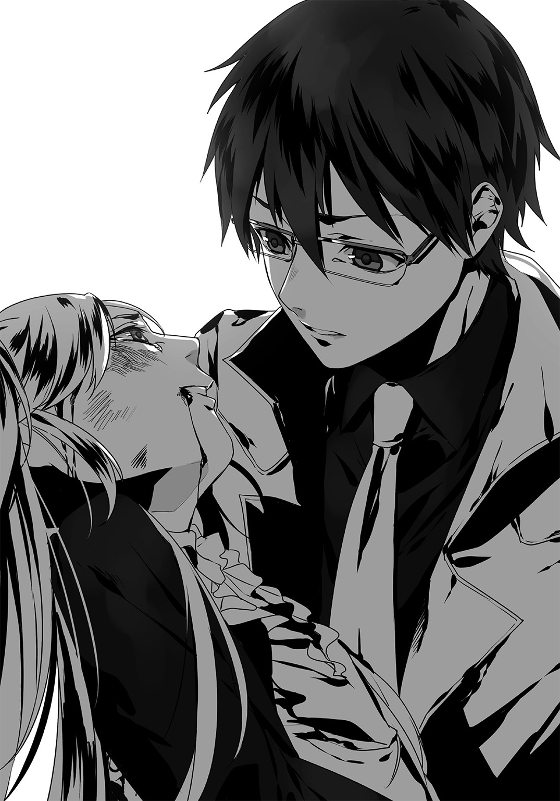
彼女の状態を確認する。脚と腹部、そして頭部に甚大なダメージを負っているように見えた。臓器へのダメージすら有り得る、一刻も早い処置が必要だ。このコートにも彼女の血液が付着するほどの出血量だった。
後方を振り返り、朱い服の少女へ視線を送る。
「棗さん。彼女を頼みます」
「え、ええ！ ......あ、あなたはどうするつもり？」
「この男を制圧します」
カツン、とカカトを鳴らす。次いで俺は半身で些々神を睨んだ。この男の表情からはいつもの余裕が消えていた。
「オマエ......俺の弾丸を打ち落としたな？」
まるで信じられない、そんな様子で些々神は問う。
先刻、些々神が先輩に発砲するところで俺は駆け付けた。もうヤツは引き金に指を掛けていた。本人を狙撃しても間に合わない、そんな状況だった。――だから。
『些々神の撃った弾丸を撃った』のだ。
「......っくキキくくくくッ。弾で弾を撃ち落とすだぁ？ イカレてんなぁああアア！」
そう嬉しそうに言った刹那。些々神は俺に銃を向けた。
両者の距離は五メートル。俺もこの男の銃口に合わせるように、再び銃を構え――
発砲。
ドン、ドン、ドン、ドォン――......と些々神は繰り返し引き金を引く。
俺もそれに追随。――この男が向けた銃口の角度、引き金を引くタイミング、腕部の動作、その他銃撃に関わる要素すべてを観察し、弾丸に弾丸を併せていく。
故にふたつの銃声は重なっていた。一発の銃声が連続しているだけに聞こえた事だろう。
そして弾丸と弾丸、その二つはことごとくが弾道上で衝突。はじけ飛ぶように両者の弾丸は反発し、それぞれ地面と天井に衝突していた。ゴムの弾頭は粉砕されても弾頭後部の鉛がそれを押しとどめる。
――やがて、六発ずつ撃ったころ。
俺も些々神も、周囲の男たちすら一言も喋らない。薬莢が床を転がる音だけが響いていた。
全弾、叩き落とした。
歓喜に歪む些々神へと、俺は銃を構えたまま視線を向ける。
「ッハハハハハハハハ！ スゲェ！ スゲェよコイツ！ マジで撃ち落としやがった！ ゴム弾だぜ!? 何の冗談だよ!? っハハハハハハ！」
「......甘かったよ、俺は。俺が由樹矢を早く片付けなかったから、先輩があんな事に」
「え、いんやぁ？ オマエは上手くやった方だぜ？ 何たってアレよ。オレ、その娘ン事をさ......ブッ殺そうとしてた寸前だったんだからよ！ ギャハハハハハ！」
「棗さん。早く先輩を運んであげてください」
「は、はい！」
些々神の挑発を無視。棗さんへ再度搬送を促した。彼女はテキパキと応急処置を終え、その背に先輩を背負うと、
「頼んだわよ！」
そう言い残し、この東展示場から消えていった。些々神は不満げだ。
「オぉーイオイオイ！ 余計なマネすんなよなァー！ ここであのガキが死んで、一番話が盛り上がる所だったのによお！」
「知ってるか。昔読んだ物語の構成についての本に書かれていたんだけどな。『人を殺す事で盛り上げる作品は二流扱い』らしいぞ」
「......へぇ？ じゃあよ。もしオレらが登場人物の作品があったとしたら、そいつぁ間違いなく二流の物語だな。だってこれから死ぬんだから。オマエもコイツらも、ンであのガキも」
「誰も死ななくても二流だよ。先輩があんな目に遭うなんて、どんな理由があろうとクソみたいな物語だ。――でもな、まだハッピーエンドにはできる」
「は？」
「核を止めて誰も死なない結末。物語ってのはハッピーエンドで終わらなきゃならない。お前は邪魔なんだよ、その結末へ向かうのにさ」
「じゃあどうするよ。俺を斃して核とめて万々歳、ってワケか？」
「ああ。だから誰一人として、死なせない」
そう言ってすぐ。俺は後方で人垣となっていた一般参加者を振り返った。
「――早く行け。全員ここから避難しろ。この男が言ったんじゃないのか、爆弾があるって」
「あ、は、はい。......そ、その爆弾、さっきから探してるヤツもいるんですが......」
「もういい。俺が何とかする」
アテはあった。俺一人でもう充分だ。
彼らも戸惑ってはいたが、やがてゆっくりとこの場から離れ、次々と出口に向かっていった。殴られたのだろう、突っ伏して倒れている男性も他の参加者に運ばれていった。
人が移動する波を見ながら些々神が呟く。
「甘いなぁ。甘いぜオマエ。巻き込まないように、って考えか？」
「これからの戦闘に邪魔だから消えてもらったんだよ。――それに」
俺は自分の銃から空のマガジンを落とす。
そして懐から出したのは......実弾入りの銃倉。
些々神対策の為、藍のオヤジさんからひとつだけ貰ったモノだ。それを銃の底からセットし、スライドを引いてチャンバー内に実弾を送り込む。
「ここからはもう、手加減なしだからな」
これで、晴れてこの銃は正真正銘の殺傷兵器となった。
頭を打てば即死する。心臓を撃てばやはり即死する。そんな情けも加減もない、人を殺せる兵器に――。
そして実弾装塡と同時、銃身の発光ラインがいつもの「紫」から「紅」に色を変えた。
この銃を握る者に対する警告だ。「あなたは今、人が殺せます」という。
「おぉ嬉しいねぇ！ 遂にガチでやりあうってワケだ！ これでどっちが上か分かるなぁ！」
前に意識を向けると些々神が笑っていた。
「どちらが上？」
「おうよ、これでオマエを殺せば俺のほうが上、だろ？ な？」
「......似てるよな。俺たちって」
俺が突然妙なことを口走ったので戸惑ったのか。些々神は「あぁ？」と言った後、少し考え込むような仕草を決め込む。
「まぁ......確かに。似てるっちゃー似てるな？ オマエもオレも、ガキん時から海外回って色々やってた。ま、やってきたことは正反対だが？」
「そうだな。紛争を起こすお前と紛争を止めた俺。完全に逆だ。――そしてお前は一人だ。多くの人の思いを踏みにじって、生きてきた」
でも、と否定する。
「俺は一人じゃない。多くの人の想いに生かされて、ここまで来た」
「だから何だよ」
「お前じゃ無理だ。俺の領域には至れない」
ピクッ、と。些々神の眉が動いたのを俺は見逃さなかった。
「......大層なお言葉だなあ。じゃあソレ覆してやるぜ、バレット・ダンサー」
「その名前の由来、知ってるか？」
「あ？」
「なぜ俺がバレット・ダンサーと呼ばれるのか――その理由だよ」
「踊るように銃撃を繰り返すから、......とかじゃないのかよ」
「違うな」
制式拳銃・ファーレンハイト９９９９を握り直す。
周囲にはもう誰もいない。全員避難した。この東展示場に残っているのは俺と些々神のみ。
これで存分に戦闘を繰り広げられるだろう。もう気に掛けるものは存在しない。戦闘方法に気を遣うこともない。
俺の最大の技、それすらも問題なく使える。
「今からそれを見せてやる。バレット・ダンサー、その本当の戦いを」
グッ、と銃把を一際強く握った。
「些々神......十秒だ」
「あ？」
「十秒で勝負を決めさせてもらうぞ」
「は？ ......ッははは。おいコラ。フザけんなよ？ 何が十秒だ？ つまんねぇ冗談言ってんじゃねぇぞ。こっちは何年待ったと思――......、」
冗談でも何でもない。
俺は十秒でこの男を完全に排除する。
もうキレていた。先輩をあんな目に遭わせたんだ、情けは一切無い。
集中。意識の底へ。更にその底へ。
俺はあの言葉を唱えた。
「『Ｅｘｃｅｅｄ』！」
視界が狭まり、集中力が極限まで引き上げられる。
「――征くぞ。止まるな、刮目しろ、瞬きするな、息すら止めろ。俺に迫るにはそれが最低条件。あとは自分でどうにかしろ。もう手加減は無しだ、一切！」
「だったらやってみろやァオラアアアァァァァアアアアアッ！」
「Ｇｏｔ Ｉｔ！」
最終戦、開始。
両者は同様の動きで前へと床を蹴りだし、銃撃を開始した。
「オラアぁアァああああああアッ！」
一発、二発。些々神の放った弾丸は、俺の頭部と足を狙っていた。俺は低い体勢のまま飛び上がり、それを回避。顔を上げぬまま迎撃発砲した。
キィン！ と跳弾音。外れた。
二人は距離が近かった。
だから俺は銃撃の不利をさとり、近接戦闘へと意識を切り替える。
「オラぁどうしたァッ！」
「安心しろ。あと数秒で終わる」
「あああぁあぁあァア!? ナメんじゃねェぞコラあああああああアッ！」
バキッ。俺と些々神、両者の拳と拳がぶつかりあい、反発する。二人は同時に飛び退き、次の攻撃へと移行する。だが反応は俺の方が数テンポ速い。
俺は銃を握り直した。
ここでケリを付ける。
「さぁ決着の銃声の時間だ。――踊ろうぜ、些々神！」
今なら何だって出来る気がした。
空だって飛べる気がした。時間だって止められるように思えた。
銃一丁で世界を変えることすら。
二年前、あのモヴィアを変えた時のように――！
「さぁ」
時間を斬れ。
「受けろ」
空間を貫け。
「これで」
事象を砕け。
「最後だ」
概念すら破壊しろ。
全神経を銃口に集中。
俺はその照準を......些々神から外した。
そして自身の斜め上、天井に向けてトリガーを弾く！
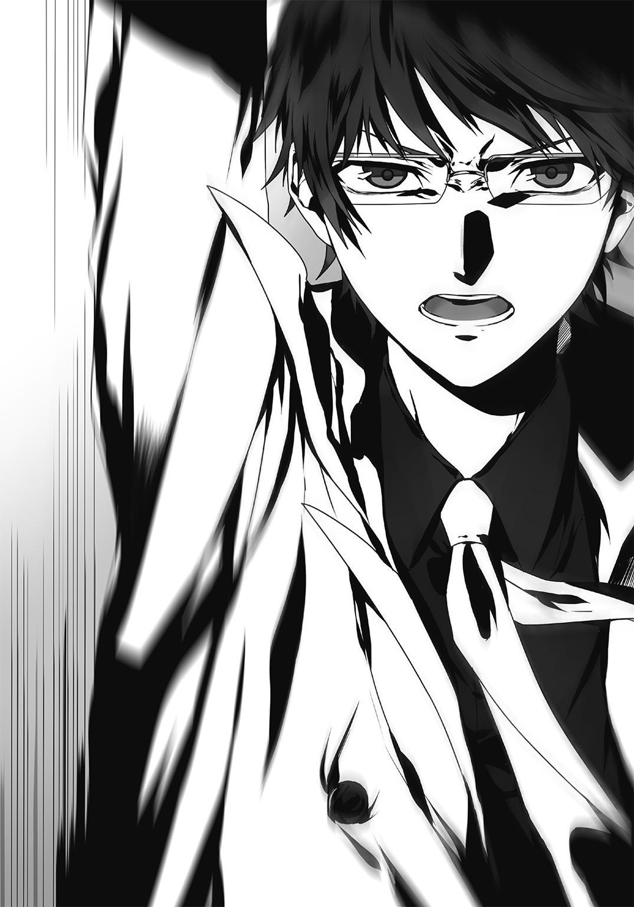
解放。
「――『跳ねろ』！」
繰り返し、繰り返し。
連射。鋭い反射音が何度も響く。
天井だけではない。俺は照準を様々な方向へ向ける。壁、サークルの机、コンクリートの床ノボリの軸、柱――。それらすべてに発砲。
銃弾は弾かれて、弾かれて、弾かれて、弾かれて。弾かれて。
やがてある一つの目的地へと集束した。
「な、っ!? な、ア......ッ！」
些々神リュウ。
この標的に、俺の放った弾丸たちは跳弾の旅の末に――、
殺到する！
「ッ――――――――――――ッッッッッ！」
踊る。
些々神は、踊る。
跳弾に全身の至るところを貫かれ、弾かれて、血を吹き飛ばして。
だが致命傷になるところは狙わない。そういう場所に着弾するよう、瞬時に計算して発砲したのだから間違いはない。
直接狙うワケにはいかなかった。この男へ馬鹿正直に発砲を繰り返しても、どうせ避けられる。だったら「跳弾で死角から狙えばいい」と俺は結論した。残っていた一般参加者を外に出したのはそれが理由だ。彼らに当たってしまっては話にならない。
結果として。
「......っはは、ははははは......ッ。はははは」
些々神は派手な音を立てて、その場に膝から倒れ込んだ。
そして仰向けに横になると手、足、肩、膝など至るところから出血し、床に大きな赤い血だまりが広がってゆく。
時計を見ると、――十秒ジャスト。些々神を完全に無力化した。
武器を掲げる必要もない。俺は銃をしまい、敗北した傭兵の元へと歩いてゆく。
「ば、バレット・ダンサーって......そういう意味か」
「理解したか？」
「ああ......。本当に踊るのはオマエじゃねぇ。弾丸だ。『弾丸が射手に成り代わって派手に踊るからバレット・ダンサー』。......だろ？」
頷いた。
「実弾じゃないと無理なんだ。だから棗さんが人質に取られたときは使えなかった」
「卑怯くせぇ......オレとは全然次元が違うじゃねぇかよ......！ ハハハ」
「そこで大人しくしていたら死なないだろ。救護班も来る。しばらく寝てろ」
些々神から視線を外す。
「さて、と。あとは爆弾を回収して終わり、だな」
「ッはははははは......。わ、分かんのかよ？ オマエに、爆弾のありかが」
「分かるさ。お前が重傷を負わせた彼女な、運ばれる直前に俺に耳打ちしてくれたんだよ。ブース番号を」
「チッ......。あのクソガキ、見てやがったか」
『６８３』のブース番号を探す......あった。すぐ近くだった。
恐らくは先輩はここに近づく些々神に気付き、そこで交戦したのだろう。俺は机に近づき。脇においてあったスーツケースの中を確認する。
――あった。メタリックな筒が配線を伸ばして、ケースの中から覗いている。
ついに辿り着いた。核爆弾だ。
だが......それを素直に喜べない。原因はその中から覗いている表示板のせいだ。
それは数値を映していた。「１：00」「０：59」「０：58」......次々とカウントが減ってゆく。
「く、クソッ！」
マズい――既に起動している！
しかも残り時間は既に一分を切っていた。
「っはははは......ッ！ 油断してただろ、なあァアアアああッ！ ッハハハハアハハぁっ！」
振り向くと、些々神が横たわったまま手だけを掲げていた。
握られているのはスイッチ。核の起爆用である以外に用途は考えられない。
今ここで起爆したのだ、この男が！
「クソっ！ ......て、停止しろ些々神！ 起爆装置を停止しろッ！」
「無理ぃー。このスイッチじゃＯＮにすることしか出来ねぇし」
「......さ、最後の最後にコイツは！」
爆弾に向き直る。放置するワケにもいかず、俺は配線を引きずり出した。
「なぁ、どっちだと思うよ？ 赤と緑」
些々神の嘲笑うような声が聞こえた。......確かに、爆弾から伸びている配線には赤と緑のものが確認できる。
「どちらかを切断すれば起爆装置は止まる、ということか!?」
「起爆機構はオヤジが買い付けたヤツを新たに取り付けたからな。赤の線と緑の線、どっちかを切れば止まるぜ。随分と古典的だけどよ、それだけはマジだ」
そう言うと些々神は俺の方にナイフを投げて寄越した。
これで配線を切れ、という事だろう。
「答えろ。どっちだ」
「やだねー、教えねぇよ」
「お、お前も死ぬんだぞ!?」
「構わねぇさ。オマエとの再戦だけが、今回のオレの目的だったしなぁ。――なぁバレット・ダンサー。どうするよ。好きな色は何だ？」
「......俺はポケモンは赤を買った」
「心底どうでもいいな」
駄目だ、コイツの決意は固い。
タイマーの表示は「０：35」。
「０：34」。
「０：33」......。次々とカウントは進んでゆく。
今、三十秒を切った。
クソ......結局は駄目なのか!?
運を天に任せ、どちらかを選ぶ他無いのか――!?
「じゃあヒント。『赤』」
仰向けになったままの些々神がそう口にした。
「......それ、ヒントか？」
「ああヒントだぜ。問題はオマエがオレの言葉を信じるか、それともオレが噓を言っていると読むか......その決断だ」
「０：20」。残り、二十秒。
「さぁ、見せてくれよ。バッドエンドならその物語は二流、だから誰も死なせねェんだろ？」
考えろ――。
この男は、なぜ俺にヒントなんか出した？
最後の最後で俺に勝ちたいのか？
それとも――。
記憶を辿れ。意識を辿れ。誰かが鍵になる発言をしていなかったか？ 些々神が真実を語っているか判断できる発言を――！
先輩ならばすぐに答えへと至れるのだろう。
だが俺に彼女のような記憶能力は無い。
だからしっかりと思い出せ......些々神の言葉を。
甲村の言葉を。
傭兵連中の言葉を。
組織構成員の言葉を。
連行された穏健派の言葉を。
あの演説動画の言葉を。
由樹矢の、――、
「いや。......分かったぞ」
瞬間、脳に思考経路が形成された。
「０：10」。
確証はない。
だがもう逡巡している時間もない。
ナイフを握り、爆弾の配線へと向ける。
「０：06」
「神がいるのなら......一流の物語にしてみせろ！」
「０：01」
俺は、ナイフを一閃させて。
配線を切断した。
終．ザ・ビューティフル・ピープル
～The Beautiful People～
「いやアレだね！ 君たちはホントに毎度よくやってくれる！」
都知事室。
私、奏手イリナは包帯姿で松葉杖をつきながら、この部屋に立っていた。
室内に居る他の人間は都知事だけ。
「オタクを狩るだけでなく、まさか国家の危機すら救ってみせてしまうとは！ この焚書課という組織は予想だにしない方向へ成果をあげている！」
「そうですね......」
数週間前。――私たちの行動により、『東のサン・キュロット』......というより、テロを計画していた由樹矢や些々神、その他傭兵や強硬派の構成員は根こそぎ逮捕された。その功績を称えてお目通り、というワケだ。
あぁそう。その一番の立役者である維刀はここには居ない。今日は体調不良だそうで、自宅で一人休んでいるらしい。後で見舞いにでも行ってやろう、なんて私は思っていた。
......い、いや。別に部下の家に行くだけだ。男子だからなどは関係ない。
そういえば。――あの後にビッグサイトを警官総出で捜索したのだが、爆弾はどこにもなかったらしい。おそらくは些々神のハッタリだったのだろう。調査班でもそういった結論になっていた。
「どうしたね奏手くん」
「あ。いえ。何でもありません。本日はありがとうございます」
「いやいや！ 毎回こうして君たちをここに呼ぶのが楽しみになってきたよ！ 例の維刀くんは居ないが、きみも充分に素晴らしい！ そんな大怪我を負ってまでオタクどものテロ行為を防止したのだからな！」
「そ、それは......」
違う。オタクのヤツらは、そんなに悪いヤツばかりじゃない。
そう言いたかった......が無理だ。ここでそんな発言をすれば、私は別にいいが一ノ瀬室長に迷惑がかかる。あの人に面倒はかけたくない。
苦しいものだな、社会人は。自分の本音を漏らすことすら出来ないなんて。
「まぁキミもまずは怪我を治すことを優先して！ 治ったら今まで以上にオタク挙げを頑張って貰わなければな！」
「はぁ」
「そして次は世界だ！ 全世界に私の思想を広げてみせよう」
「......そうですね」
「中国か欧州圏か北米か......あぁキミにも手伝ってもらうぞ、もちろんな！」
飽きてきた。もう話をするのも疲れる。早くここから出て行きたい。
そう思い、窓の方へと視線を巡らせた瞬間だった。
「ダアアアアアアアイナミック・エントリイイイイイイイイ――――ッ！」
絶叫と共に外から窓ガラスをブチ破って――。
白を身に纏った男がこの都知事室に侵入してきた！
「ぶ、ブふぅうッ!?」
侵入者の跳び蹴りが都知事の顔面を直撃する。彼は空中できりもみ状態となり、回転したまま部屋の壁に叩き付けられた。
私はこの常識を外れた現状にア然とする他ない。
だが侵入者の白いコートがたなびくと、それが誰なのかを一瞬で理解した。
「え、......エルガット!?」
ジャリッ、とガラスを踏む嫌な音。
それを伴って聖堂騎士・エルガットは敢然とこの都知事室に立っていた。
「なっ、――な、何だ貴様は！ 無礼だぞ、窓を破壊しおって！ 加えて私に蹴りだァ!? 緊急逮捕だ！ 逮捕したまえ奏手くん！」
「相変わらず喧しいジジイだな......、っと」
私に気付いたのか、エルガットは......こちらの方へと歩いてくる。
「な、何だ」
「きみが怪我をしたって聞いてね。経過は良好かい？ お嬢ちゃん」
「ま......まぁな。一・二ヶ月もしたら完治する。もうリハビリも一部始めているからな」
「そうか。それは良かった」
それだけ言うと、彼は都知事の方へと向き直った。
......というか。私は何を素直に答えているんだ。
「きっさまァ......この私に蹴りとはいい度胸だなァ!? 何が目的だっ！」
「ちょっとお話ししたくてさ。あんたと」
「話だァ？ ......毎度毎度、アニメだのマンガだの、下らないものに現を抜かしおって！」
「あんたの言う下らなくないモノって何だよ？」
「もっとタメになるものを読まんか！ ドストエフスキーの『罪と罰』とか――」
「ババア殺して自首する話か？ 『悪いことしたら正直に話しましょう』ってのは人として当然の事だろ？」
「き、貴様がそれを口にするか......!? 法をこれ以上無いほどに冒瀆している貴様が......！」
彼はこの都知事を前にしても全く物怖じしない。むしろ生き生きとして、顔には不敵な笑みすら見せていた。
「俺がここに来た理由を教えてやろうか。......宣戦布告だよ」
「宣戦布告だ？」
「この世界には人種差別だの宗教差別だの、様々な差別が存在する。駆逐されるべき事だろう。だがまずは、今の日本のような下らない『趣味差別』、ひいては『心の差別』が無くならない限り、――そんな何百年と続いた差別意識を変える事なんて、出来やしない」
ニヤ、とエルガットは口角を歪めた。
「だから俺は、あんたと闘う。このオタク差別を推進する大本、あんたとな」
都知事は呆れ顔だ。「アタマがおかしいのだ」と取り合おうとも思っていない。
私は......どうなんだろう。
確かにこれまではオタクを差別していた。だが事件を通し、もう彼らも一枚岩ではない事を知っている。これから先は今までのような一辺倒な認識など通用しない。
少しずつ、だ。
少しずつ、焦ることなく彼らへの対応を変えたい。
そして私自身も変わっていきたい。そう思う。
せっかく「知る」ことができたのだ。この機会を無駄にしたくない――。
「さて......じゃあ帰るか」
思考から帰還すると、エルガットはもう都知事から視線を外していた。
「ク、クソガキがぁ！ ......こ、このまま黙って帰すとでも思っているのかァっ!?」
「帰るさ。――それじゃあね、お嬢さん」
「え......あ、待て！ 維刀っ！」
「えっ」
「あ」
ピタッ、と。凍り付いたように。
私、そしてエルガットの動作その一切が停止した。
「......今、何て？」
「あ。い、いや」
「な、何か人の苗字が聞こえたけど？ だ、誰？ そのイトウ？ って？」
「え、ええっと。あぁ......――き、気にするな！ か、勘違いだ他人と間違えたお前とよく似た知人がいるから間違えたっ！ そ、そいつと似ているお前が悪いんだ！ 謝れ！」
「あ。そ、そう？ ......ごめんなさい」
馬鹿正直に私へと頭を垂れるエルガット。
......何を口走っている、私は。
エルガットは頭を下げたことでズレた眼鏡の位置を直した。だが、やがてすぐにいつもの気取り倒した態度に戻る。いちいち忙しい男だ。
「ま、......まぁアレだ。キミはその怪我が治ったら取り締まりを再開するんだろう？ またアキバで一戦交えるのを心待ちにしているよ、お嬢ちゃん」
「......ふん。何度言わせる気だ。私はお嬢ちゃんじゃない。奏手イリナという名前がある」
「では奏手捜査官。いつかまた、あの街で私と踊っていただけますか？」
貴族の礼でも模したのだろうか、まるで出来損ないのボウ・アンド・スクレープで私へと誘いかけてくる。こっちもいっそ開き直ってカーテシーで応じてやろうかとも思ったが、タチの悪いコントになりそうなので止めておく。
本当にいけ好かない、気取った男だ。だが何故か今ではそれがひどく心地よかった。誰かとバカをやるという事が、こんなに愉快で面白いなんて。
そして気がつけば......私は笑っていた。
自分自身で驚いてしまう。既に私は変わり始めていたのだ。ゆっくりと、歩く速さよりも少しだけ早く。こんな下らない事で笑えるなんて、以前の私には信じられない心境の変化。
私の瞳に映る世界は確かに変わった。
だったらこれから先は、少しでも良い方向へと進んでいきたい。
「ははははっ。......あぁいいだろう！ 受けたぞその挑戦を！」
ここからが私の、本当のスタート地点。
「宣言してやる、白亜の聖堂騎士エルガット！ 次に貴様と秋葉原で遭遇した時は――」
指を銃の形にして。
腕を水平にもってきて。
その人差し指を彼へと向けて。
バァン。
発砲を模した動作を、誘いに対する最高の回答として提示してやった。
「私がお前を......逮捕する！」
ニヤリと笑う。私も、エルガットも。
そして彼も人差し指を立てて、――コツン、と。私の指にやさしく交差させる。
「楽しみにしているよ、お人形さん」
「また会おう」
その挨拶を最後に、エルガットは入ってきた窓から飛び降りた。
「か、奏手くん！ 何をやっている!? 次ではない、今ここで捕まえないかッ！」
先刻まで外野扱いだった都知事が血相を変えて窓へと駆け寄った。
私も松葉杖をついて窓に近寄ってみると――。どうやらエルガットは腰にワイヤーを付けていたらしく、シューッと素早く降下して地面に到達していた。
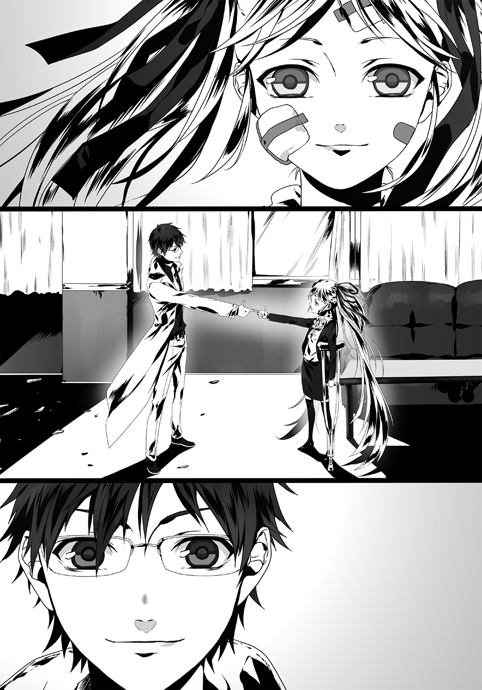
「......何なんだ、まったく。......――あはははははっ！」
あまりのバカバカしさに、つい独り言が飛び出てしまった。口も自然とほころび、笑いの形をとってしまう。こんな馬鹿馬鹿しい事で笑いが止まらない。
エルガットはワイヤーを外し、私の方へとキザったらしく手を振った。
私はそれに手を振り返さない。
返答は、さらに明るい笑顔を向けるだけで充分だった。
「維刀くん。おはよう」
登校の道すがら。
後方からの清涼な声に、俺は振り向いた。
制服姿。あのミニのコートはエロさを過剰に放っていて何度見ても見飽きなかったが、やはり日常の象徴をこうして目にすると、心底「生きているんだなぁ」と実感してしまう。
「棗さん。おはようございます。久しぶりですね」
「いろいろ事後処理に手間取ってね。それも昨日で終わったわ」
彼女とこうして話すのは数週間前――。あの『ビッグサイトテロ事件』以来だった。
あの事件は今も世間で話題となっている。やれ「もっと規制しろ」だの「やはりオタクは論ずるに値しない存在だ」だの。以前よりも風当たりは厳しくなった気さえしていた。
だが、彼らにも伝わっていない事実が一つだけある。
「核兵器」という単語だ。
俺は核の起爆を阻止することができた。だが、それならそれで「核テロが阻止された」などと報道されてもおかしくはないハズだろう。そんな言葉は最近の報道で一言も見ることはない。
理由はあの直後、棗さんが爆弾を回収したからだ。
あの事件の後。――彼女は負傷した先輩を医療班に引き渡し、東展示場へと戻ってきた。核は出所であるロシア当局に責任をもって回収・処分を任せたらしい。棗さんは以前から彼らロシア側とコンタクトを取っており、核の事後処理の約束を彼らにとりつけていたそうだ。あまりにもデウス・エクス・マキナだが、むしろ助かった。あの爆弾の存在がバレてしまえば、オタク迫害はさらに加速していた事だろう。彼らにはいずれ礼のひとつでも言っておきたい。ついでに「二度と流出させるな阿呆」と説教の一つでも加えて。
「ねぇ......一つ聞いてもいい？」
覗きこむように、棗さんは俺の顔をうかがっていた。
「何です？」
「ロシアの情報官から聞いたんだけど......あの爆弾、あなたが最後に起爆装置を停止させたのよね？ 赤と緑、どちらかの線を切るってことになって」
「ですね。......で、あの時は結局」
「あなたは赤を切った」
俺は頷いた。
「......どうして？ なぜ赤を切ったの？」
「些々神が『赤』だ、と言ったからです」
「し、信じたの!?」
「ええ。――あの局面で些々神の言葉を俺は信じたんです」
「......」
あ、絶句してる。
これは説明が必要か。
「信じた理由はもちろんありますよ」
「な、なぜ？」
「あいつは俺との再戦をずっと望んでいた。そして二年も時間をかけて、ようやく俺に迫ったと思った。......だが俺は完膚なきまで、あいつを叩きのめした」
次元が違う、そう漏らした些々神の顔が思い浮かぶ。
「悔しいでしょうね。『自分がまるで通用していない』と知ったら。でも俺を二年も探したあいつの事だ、またリベンジをしたいと願うでしょう」
「ま、まさか。『こいつは俺と再戦したい、だからここを生き延びるために本当のことを言うはずだ』、......そう感じたから信じた、ってこと!?」
「はい。本人も後でそう言ってました。あの場でスイッチを入れたのは『ただ最後に一矢報いた気分を味わいたかったから』だとも。俺が赤を切るのを織り込み済みだったんですよ、アイツの行動は」
「......どうしようもない男ね」
「『核のスイッチは入れてしまった。もうここから逃げることもできない。......でも、もしここで核が止められたら、オレはまたこの野郎と再戦できるチャンスがある。それに今のコイツにはオレの言葉を信じる以外の道はない。なら結局は言葉を信じさせたオレの勝ちだ』。――些々神はそう願い、そう確信したからこそ、俺に答えを告げたんですよ」
実際、赤い銅線を切断した後に、些々神から嬉しそうに言われた。
「ありがとよ、信じてくれて」と。その台詞の後に「今回はオレの勝ちだ。絶対にオマエを追いかけて次は必ず殺してやるからな？」と付け加えられもしたが......。
「それにあなたがくれた『東のサン・キュロット』名簿になぜか些々神が載っていたというのもあります。あいつは俺に気付いて欲しかったんです、『自分はオマエを狙っているぞ』と」
「......もうストーカー寸前ね」
「そして最後の決定打。それは、由樹矢の発言です」
「兄さんの？」
「ええ。ビッグサイトの七階で俺たちが睨み合っていた時、あなたのお兄さんが言ったんですよ。『些々神と傭兵連中は脱出して安全な場所から核を起爆する。彼らは近くに係留したボートで逃げる』と」
「その発言がどうしたというの？」
「分かりませんか。些々神は自身の命への執着が凄まじいんですよ」
「え。えぇー......？」
「由樹矢や彼に従った組織構成員は、命を捧げる覚悟をしていました。でも些々神は違う。あの会場から逃げる準備をしていた。そんな用意周到に逃げ道を用意するような男が、簡単に命を捨てますか？ そんなハズはない。何が何でも逃げ延びようとするハズだ――。そう思ったんです。だから俺は『些々神は生きるため真実を語っている』と断定した」
「......人の命は簡単に奪うクセに、事が自分に至ると必死なのね」
「傭兵という言わば命を売る仕事をしているのに、......いや、命を商品にしているからこそ、必ず帰還して優れた『商品』であると証明する、って事なんでしょうかね」
「私には理解の埒外よ」
「異議なしです。まぁ、どちらにせよ。結局は、最後にあの男の言葉がなければ核は起爆していたでしょうね。悔しいですけど」
「なんか......腹の立つ話」
憤然としている棗さん。まぁ無理もないだろう。俺だってあいつの思考に理解を示しているわけじゃないんだから。出来ればあんな輩、もう関わりたくない。
と。周囲の登校する生徒の数が多くなってきたことに気づいた。
これ以上見られるのはマズいな。反目するべき相手が通じていると悟られる。
「棗さん。この辺りで別れましょう」
「えっ？ ......え、ああ、うん。そうね。人も多くなってきたし」
彼女は一瞬残念そうな表情を見せ......すぐ俺へと悪戯っぽい笑みを見せた。
「二人で登校してる所を見られて、噂されたら恥ずかしいし......ね」
「お嬢さまのあなたがそれを言うと随分しっくり来ますね。――どうせならハリウッド映画みたいに、ラストはキスシーンでシメたい所ですけど」
「あぁする？ キス。したいの？ しよっか？」
「じ、冗談ですって！ 爽やかな朝くらいレディのキャラは隠してください！」
「ふふふっ！ ......――じゃ、また藍さんのバーで！」
冗談めかしてそう言う彼女は、俺に手を振って一足先に校舎へと向かっていった。
棗さんとのやりとりを見ていた周囲の連中の声が耳に入ってくる。あれは......教室で俺を避けていた、野瀬と大山田だ。
「な......なんで棗さんと会話してんだ、あいつ？」
「付き合ってるのか？」
「いやそれは無いだろうけどよ......クッソ、アイツ何があったんだよ？」
「というかお前、知ってるか？ 『東のサン・キュロット』蜂起事件」
「あぁ、あのコミケで暴れたオタ連中な。しょーもないヤツらだぜ。それがどうしたよ？」
「あの事件って焚書課が鎮圧したらしいじゃないか」
「マジ？ ......――って事はつまり、維刀が？」
じーっ、と。両名は俺を睨み続ける。
「......まさかな！」
「だよなァ！」
一転して、スタスタと。晴れやかな表情で登校を再開する二人。
どうやら彼らは、以前の毛虫を語るような印象をもう俺には持っていないらしい。
「よかったじゃん。みんなアンタを見る目が若干優しくなってきたよ」
後方からの声。
振り向くとそこには幼馴染み・藍。どうやら俺と棗さんのやりとりを一部始終見ていたらしい。
「おはよう、藍」
「ん。......こうしてさ、身近なところから世界ってのは変わっていくんだろうね。焦っちゃダメなんだ。ゆっくり、ゆっくり社会も変えていかなきゃ」
「だな。今回は由樹矢を見て、心底そう思った」
――俺は、些々神に「ハッピーエンドじゃない物語は二流だ」と言い放った。
だったら俺の今の状況はどうだ？
世界はまるで変わらず、むしろ悪化。俺の周囲は環境が少しだけ変わったが、そんなものは社会という大海と比べればまるで話にならない。
これじゃハッピーエンドなんかじゃない。
つまり、俺の生きるこの人生は「二流の物語」だ。
でもそれでいいと思う。
人と同じだ。時間をかけて一流になっていけばいい。
歩みながら。時には立ち止まりながら。
「でも！ 『ここが最大のチャンスだ！』と察知したときは逃しちゃいけないぜ！」
そう叫んで藍が俺の肩をバシン、と叩いた。せっかく上手くまとめたのに。何だこいつは。
「......痛いなぁ」
「だからさ！ この勢いに乗じてオマエの『人気上昇キャンペーン』でも打ってみる？」
「お。何か具体案でもあるのか？」
「うん！ 授業中にうんこ漏らせばいいと思う！」
「おおなるほどー。なんで？」
「ホラ、オマエって『冷徹非情な焚書課捜査官』っていうイメージが強いじゃん？ だから授業中に脱糞でもして、少し人間らしさをアピールする必要があると思うんだよ」
「ふーん。やってみようかな。だからまずお前が先に手本をみせてくれよ」
「ヤだよ、何でアタシが。つーか何オマエ、清廉潔白なキューティガール・藍ちゃんに脱糞しろっていうワケ？ まさか見たいの？ 正気かよ？ スカトロ趣味持ちの幼馴染みとか......マジで救いようがないぜ」
「オマエのうんこネタも大概だよな」
俺が初恋の想いを抱いた頃の藍はこんなんじゃなかったのになぁ。
移ろい行く時とともに変わるすべてに思いを馳せながら。
俺は、この小うるさいのと学校を目指して歩いてゆく。
急ぐこともなく。
焦ることもなく。
Ｅｘ．ザ・ノーバディ
～The Nobody～
「――まぁ、確かに。予定外の状況が発生したのは事実です」
言い訳。それは自身でも理解していた。
「ですが、連中がさすがに核を使うとまでは予測できません。普通、そうでは？」
『彼』は何も答えない。薄暗い室内にただ沈黙だけが流れる。
ならば、と。用意したさらなる言い訳を、私は数珠つなぎで展開していった。
「連中がテロを画策した。あなたが焚書課を使ってそれを鎮圧した。あなたの評判は上がった。めでたしめでたし核など無し。――これで納得はできないと仰るのですか。強欲な方です。完璧主義者というのは難儀なものですね。結果オーライ、それでよろしいではありませんか」
「......」
「それとも。『核ですべて吹き飛ばされたほうがいい』、そうお望みでしたか」
「フン。冗談ではないな」
ようやく口を開いた『彼』。
たった一言だというのにその声は重苦しく、威圧感すら察知してしまう程だった。全身から放たれる雰囲気も、テレビなどで観る際のイメージとはまるで異なっている。
「人は誰しも二つ以上の貌を持っている」、が私の持論だった。
この人にとっては、いまの人格こそがその二つ目にあたるのではないだろうか。
「さすがの私にも、核の使用までは想像が及ばなかった。ヤツらの評判が落ちるのは結構だが、まさか原爆をこの東京で使用させるワケにもいくまい。私とてその程度の分別は持っている。気に入らないのは『ヤツらが私の手を煩わせた』、その事実だけだ」
「つまり今回の件は成功だ、と？」
「そういって差し支えないだろう。世間はなおも私の味方だからな」
「以前にも増して世論はあなたを求めるようになりました」
「まだこれからさ。......――まぁとにかく、今回の件はご苦労だった」
「フフッ。ありがとうございます」
どうやら今回の件について、私は一定の評価を得たらしい。思わず破顔してしまう。
これで目的にさらに一歩、近づくことができたのだから。
「君も今回は災難だったな。身内の不祥事ともなれば、君の立場が危うくなるだろうに」
「お気になさらず。彼とは元々不仲でした」
事実だ。兄に対する憐憫や同情など、私には端から存在していない。
窓の外へと視線を巡らせてみる。
この室内の照明は最低限のものだけが点けられていた。今や主な灯りとなるのは窓から差し込む月明かり。そして喧しく雑多な光を放つネオン。――と、視線をそちらに移して、初めて妙なことに気がついた。
窓ガラスが割れているのだ。
その面積ほぼすべてにガムテープでの応急処置が施されている。
「......あの窓、一体何が？」
「君が気にすることではない。にしても、まだ多くの謎が残されているな」
「ん。――そうですね。気になるのは『資金源』です。核を手にできるほどの活動資金を一体どこから手にしたのか。背後に資金提供者がいるのは間違いないのでしょうが......事は我々が想像する以上に深く、大きいのかもしれません」
「どうせヤツらは完全黙秘を貫く。明らかにされる日は来ないだろう」
「......それに関して、ひとつ伺ってもよろしいですか」
「何だね」
「あなたではないのですか？ 彼のパトロンは」
そう問いかけると、『彼』は露骨に不快な表情を作った。
「私にそんな事をする理由があるか」
「分かりませんよ？ 今回の『東のサン・キュロット』の蜂起にしても、裏では自作自演という目的を持っていたのですから。それに事件そのものは『オタク側勢力のテロが鎮圧された』という単純極まりない構造で結論づけられました。結果、一番得をしたのは誰か。――世論の更なる支持を得た、あなたです」
「馬鹿馬鹿しい、な」
軽くカマをかけたつもりだった。が、予想に反して『彼』は苛立っているようだ。
「ではハッキリしておこう。今回の件は私は関わっていない。そもそも核からして寝耳に水なのだ、あんな事は金輪際ご免だよ。言葉はしっかりと選びたまえ君」
「......失礼致しました。以後は自戒します」
自分は関わっていない――。なるほど、恐らく『彼』の言い分は事実だろう。今しがた向けられた怒りはごく自然な反応だった。
だが。だとすれば『東のサン・キュロット』を背後で操っていたのは誰なのか。一番得をした『彼』でないのなら誰が。――やはり『あの人』が？
「今回の件は損得勘定ひとつで読み取れるほど、単純な構造ではない」。そう気付けた人間は居るのだろうか。もし数カ年後単位の利得を狙った行為であれば、現状で表面化せず察知する事すら困難だろう。
――そうだ。他ならぬ自分を顧みろ。
そもそも私自身が、数年後を見据えた計画を携えているのではなかったか――。
「それより、あの男の件はどうなのだね」
唐突に投げつけられた問いで現実に引き戻される。
「あの男？ ......ですか？」
「まだ報告を受けていないぞ。あの白い暴れ馬だよ。我が怨敵であり、社会の天敵」
「ああ。彼」
私はフッ、とつい鼻で笑ってしまった。
「エルガットは利用できます。ここ数日で確信しました」
その報告を待っていた、とばかりに。彼は破顔一笑、態度を豹変させた。
「......くハハハハアはははっ！ 愉快だな！ 愉快だよ！ 『強大な個人戦力を持つ者が必ずしも世界を変えられる訳ではない』。それを他ならぬヤツが証明してくれるとは！」
「あなたの持論ですね。――ですが、彼をあまり甘く見ないほうがいいかと」
「ほう。というと？」
「常識外れの戦闘能力はもちろん、意外と頭もキレます。私の正体に気付くのも時間の問題でしょう。そうなる前に何とか籠絡してみせようとは思っていますが......現状の問題は、そもそも彼が私にそれほど興味を抱いていない点です。なので、今はどうにか彼に絡んでゆく手段を模索している最中ですね」
「随分と変わった評価をするのだな。ヤツに惚れたか？」
「......まさか」
「いやそうだろう」
「違います」
「違わないさ。彼への対策を話す君の表情、まさに恋い焦がれる乙女そのものだったぞ」
「だから違うと」
「まぁ君たちの恋愛沙汰にまで口を出すつもりはない。その件は君の好きにしたまえ」
ニヤニヤニヤニヤ。さっきとはまるで異なる粘着質な笑みがその顔面を支配する。
いつもこうだ。話が恋愛沙汰に及ぶと、『彼』は女子中学生のような食いつきかたをしてくる。正直鬱陶しくてかなわない。まぁ、それが『彼』の憎めない所でもあるのだが。
さて――報告は以上だ。
もうここに留まる理由はない。そう判断した私は、
「では私はこの辺りで失礼いたします」
と『彼』に背を向けた。
「急だな。何か用事でもあるのか」
「ええまぁ。実は、これから友人と遊ぶ約束でして」
「こんな夜更けにか。感心せんね。そもそも君のイメージと夜遊びが繫がらない」
「人は誰しも、ふたつ以上の貌を持っているものですよ。――では失礼いたします」
扉を開けて部屋を後にする。
建物の七階。その廊下はひどくガランとしている。歩く者は一人としていない。私はエレベーターへと続く道を歩きながら、笑いを禁じ得なかった。
......本当に、爆弾は出所に返却したと信じているのだろうか？
......本当に、ロシアの情報官がいたと信じているのだろうか？
......そして、本当に、核が存在したと信じているのだろうか？
笑える。
「人間は誰しもふたつ以上の貌を持っている」。この言葉にしてもそうだ。彼と私の関係を何より端的に言い表しているのだから、可笑しくて仕方がない。
表では規制の歯車、裏では規制への反徒である維刀臥人。
その『反存在』とも言える私。
両者のダブルフェイスを纏った騙し合いは、始まったばかりだ――。
突然、携帯が着信を告げた。
ディスプレイに目をやる。そこには今夜遊ぶ予定の友人の写真が映し出されていた。彼に気付かれないよう隠し撮りした写真を着信待ち受けにしたのだ。
着信音はなおも鳴り響いている。この長い廊下をやかましく反響し続けている。
「『ラストはキスシーンで終わらせる』......か。ま、一理ある話よね」
私は携帯に映る彼の写真へと、唇でかるく触れた。
次いで通話ボタンをタッチして耳にあてる。
今の私は、何個目の貌で彼と話そうとしているのだろう。
だが考えたところで何の意味もない。下らない思考を一蹴し、私は電話先の相手へいつもの調子で第一声を与えた。
「はい、棗です。......――あ、維刀くん！ ええ今から行くわ！ ではこれから......、」
あ と が き
●某日 授賞式後の飲み会にて――。
編Ａ「......あ。そういえば、ペンネームなんですけど」
朝倉「はい？」
編Ａ「『朝倉』って、『アサウラ』先生と一文字違いなんですよね」
朝倉「おおっ！ 確かにそうですね！」
編Ａ「だからいっそ『アサクラ』にしてしまうのもアリだと思うんですが」
朝倉「えっ？」
編Ｂ「なるほど！ 間違って買ってくれるかもしれませんよね！」
朝倉「ええ？」
編Ｃ「じゃあ作品名も『ペン・トー』とかにしちゃったらどう？」
編Ａ「あ、いいですねソレ！ 絶対間違って買ってくれますって！」
朝倉「あ......あははははははっ！」
編集一同「あははははははははははっ！」
いやいいワケねーだろ！
ブッ殺されるだろうが！ アサウラ先生に！ 俺が！
つーかただの詐欺じゃねーか！
初めまして。朝倉勲です。
著者紹介に記した一節は、右記のような成り行きの上で発生したものです。
アサウラ先生、本当に申し訳ございません。先生の新作『ファング・オブ・アンダードッグ』をヨダレ垂らしながら待機したいと思います。
さて、この本がみなさまのお手に届く頃、表紙には『アサクラ』と記されているのでしょうか。その光景を想像すると心底ゾッとしない今日この頃ですが、そんな世に出る際の著者名すら定かではないこの本をお手にとって頂き、誠にありがとうございます。
読みやすさ、熱中しやすさ、スピード感に重きを置いて書いた本作でしたが、お楽しみ頂けましたでしょうか。数時間でも楽しいひとときを過ごして頂けたのなら、これ以上ない幸せです。ぜひご意見ご感想、お聞かせ下さい。
以下に伝えられなかった方々へ謝辞を。
天井知らずにハイセンスでスタイリッシュなイラストを描いて頂きました一色箱先生。初めてキャララフを目にした際の喜び・驚きは今も忘れられません。一色先生から頂いたイラストの格好よさ・鋭さに負けぬ作品を作り上げてゆけるよう、努めて参ります。
編集Ｔさん、校正さま、宣伝担当さま、選考頂きました編集部の皆様、作品を世に出す機会をいただいた審査員の先生方。それと丸宝部長。あなたが『編集者より』で表現規制について触れていなければ本作は生まれませんでした。「ファーレンハイト９９９９のスタート地点は丸宝さん」という事をここに記させて頂きます。
友人のナグさん。ニコ生での宣伝や多くの指摘、本当にありがとう。伝えたとおりあなたは臥人のモデルの一人ですので、あなたにしか出来ない楽しみ方をして貰えたら嬉しいです。イチハラさん、米さんもありがとう。
その他多くの皆様に支えられ本作は形を得ました。この場を借りて感謝をお伝えします。
そして何より。今この本を読んで下さっているあなたに、最大の感謝を。
現在、既に次巻の準備に取りかかっております。
新たなキャラとステージ、ストーリーにご期待いただければ幸いです。
では、次巻でまたお会い出来る事を祈って！
（十一月某日 朝倉 勲）
※本書は第13回スーパーダッシュ小説新人賞大賞受賞作「ファーレンハイト９９９９」を改稿したものです。
著者紹介
朝倉 勲 あさくら いさお
「第13回ＳＤ小説新人賞」に応募した本作で大賞受賞、デビュー。北海道在住。ペンネームを『アサクラ』に変えられそうになったＳＤ最後の新人。
illustration
一色 箱 いちいろ はこ
大阪府出身、在住。書籍の挿画などを中心に活動。
小説の世界を表現するお力添えが出来ていれば幸いです。
よろしくお願いいたします。
ダッシュエックス文庫DIGITAL
ファーレンハイト９９９９
著者 朝倉 勲
(C) ISAO ASAKURA 2015
２０１５年１月31日発行
この電子書籍は、ダッシュエックス文庫「ファーレンハイト９９９９」
２０１４年12月24日発行の第１刷を底本としています。
発行者 鈴木晴彦
発行所 株式会社 集英社
〒１０１－８０５０
東京都千代田区一ツ橋２丁目５番10号
０３－３２３０－６０８０（読者係）
制作所 株式会社デジタルディレクターズ
本作品の全部また一部を無断で複製、転載、改竄、インターネット上に掲載すること、および有償無償に関わらず、本データを第三者に譲渡することを禁じます。なお個人利用の目的であっても、コピーガードを解除しての複製は、法律で禁じられています。